Parametrix Software Manual
A publication by Donatoni Macchine S.r.l.
Software Version: 4.14
Manual Version: 1.0
Date:
- 1 INTRODUCTION
- 2 ON-MACHINE PROGRAMS
- 3 PARAMETRIX
- 3.1 USER PARAMETERS
- 3.2 NEW JOB
- 3.3 TOOL PANEL
- 3.4 SLAB MACHINING PARAMETERS
- 3.5 ACCESS TO MANUAL CONTROLS
- 3.6 LASER MANAGEMENT
- 3.7 ADDING A PHOTO TO THE WORK AREA
- 3.8 SLAB PERIMETER
- 3.9 WORKBENCH DISPLAY MANAGEMENT
- 3.10 DISPLAY OF MACHINING ENTITIES
- 3.11 PIECE CREATION
- 3.12 PIECE LIST
- 3.13 EDIT PIECE
- 3.14 NESTING
- 3.15 INTERACTING WITH PIECES IN THE WORK AREA
- 3.16 SAVE JOB
- 3.17 LOAD JOB
- 3.18 INFORMATION
- 3.19 MACHINE ON CUT
- 3.20 PIECE CUTTING-ORDER MANAGEMENT
- 3.21 CUT OPTIMIZATION AND MANAGEMENT
- 3.22 BOOK MATCH (OPTIONAL)
- 3.23 UNLOAD PIECE (OPTIONAL)
- 3.24 TOOL REDRESSING CYCLE (OPTIONAL)
- 3.25 LABELING (OPTIONAL)
- 3.26 CUT SIMULATION
- 4 PARAMETRIX SX
General Information
The information contained in this document applies only to the software versions indicated on the title page.
Not all functions provided by the product may be described in this documentation; in such cases, Donatoni Macchine is not obliged to guarantee these functions or preserve them in future versions.
This document is provided as attachment “Section B”, software section, of the machine use and maintenance manual.
Purpose of the manual
This manual contains the operating instructions required for a proper understanding of the Parametrix program and useful information for troubleshooting malfunctions.
Proper operation, service life and operating economy of the machine depend on compliance with the instructions described in this manual.
The machine use and maintenance manual and this software manual must always be available at the installation site, kept in a safe and easily accessible place. If either is lost, contact the person responsible for the prevention and protection service.
Failure to comply with the instructions described in this manual, negligence, or improper and inadequate use of the machine may result in cancellation, by the Manufacturer, of the warranty provided for the machine and may also prevent the machine from delivering the benefits for which it was designed.
DONATONI MACCHINE SRL is available to provide prompt and accurate technical assistance and any support that may be useful for ensuring optimum machine operation and maximum performance.
The Manufacturer reserves the right, at its own discretion, to modify this publication and the data contained herein whenever it deems this necessary for technical or commercial improvement of the product.
Manual storage
This Software Manual must be kept throughout the entire operating life of the machine, including in the event of transfer to third parties.
To ensure proper storage of the Software Manual, the following is recommended:
Use the Manual in such a way as not to damage all or part of its contents; in particular, do not leave the Manual unattended during use and return it to its designated place immediately after consultation;
Do not remove, tear out or rewrite any part of the Manual for any reason;
Keep the Manual in areas protected from moisture, heat and other environmental agents that could compromise its integrity or service life;
If all or part of this Manual is lost or damaged, request a copy of the documentation from the Manufacturer.
When the application starts, if the axes have already been zeroed, the following initial screen is displayed:
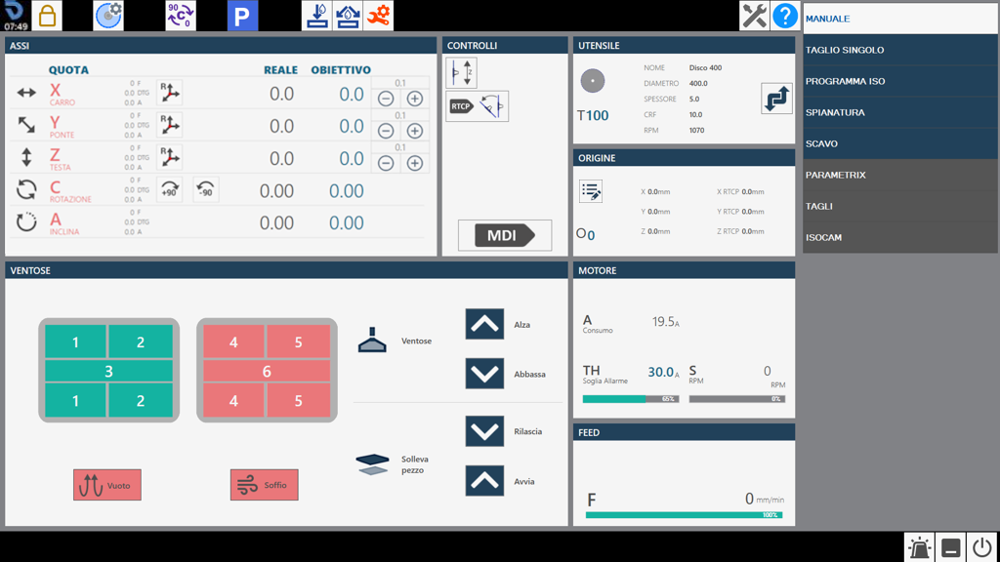
Top bar

 | Parameters |
 | Parameters tool |
 | Automatic 0/90-degree rotation |
 | Automatic parking  |
 | Internal water ON/OFF |
External water ON/OFF | |
 | Manual Tool Change |
 | Maintenance |
 | Help |
Common interface elements
The graphical interface elements common to the functions are:
Axes
This interface displays the machine axis values.
Example of the “Axes” interface element with origin 0 and the axes already zeroed:

Example of the “Axes” interface element with origin 0 and the axes not yet zeroed:

The elements making up this section of the common interface are explained below, using the elements shown when the axes have already been zeroed as reference.
 | Actual position: indicates the axis position relative to the active origin. |
 | Axis Reset |
 | Automatic _90-degree rotation Automatic -90-degree rotation |
Controls
This panel contains several buttons whose behavior is explained below:

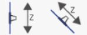 | Interpolation mode Interpolated C-axis movement: when the C-axis control is operated, in addition to rotation the X and Y axes also move so that the inner edge of the blade (or the tool tip) remains stationary. |
 | RTCP interpolation |
 | MDI |
Tool
This interface element displays the main information about the tool mounted on the machine.
Example of tool mounted on the machine: Disk

Example of tool mounted on the machine: Core drill

 | Active tool The choice is limited to:
|
Origin
Clicking the “Origin” field displays a small on-screen numeric keypad that allows the operator to select a different origin to work with.
Origin values can range from 0 to 19 inclusive.
Example with origin 0:
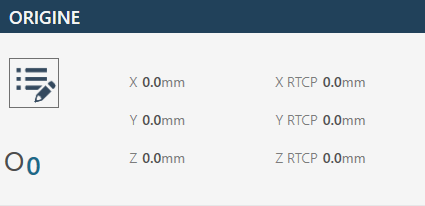
Example with origin 10:
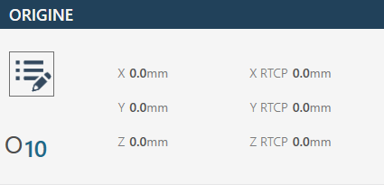
Advanced origin settings
Pressing the options button above the origin opens a panel containing a centralized view of all available origins and their associated values. The active origin can be changed by clicking the corresponding row.
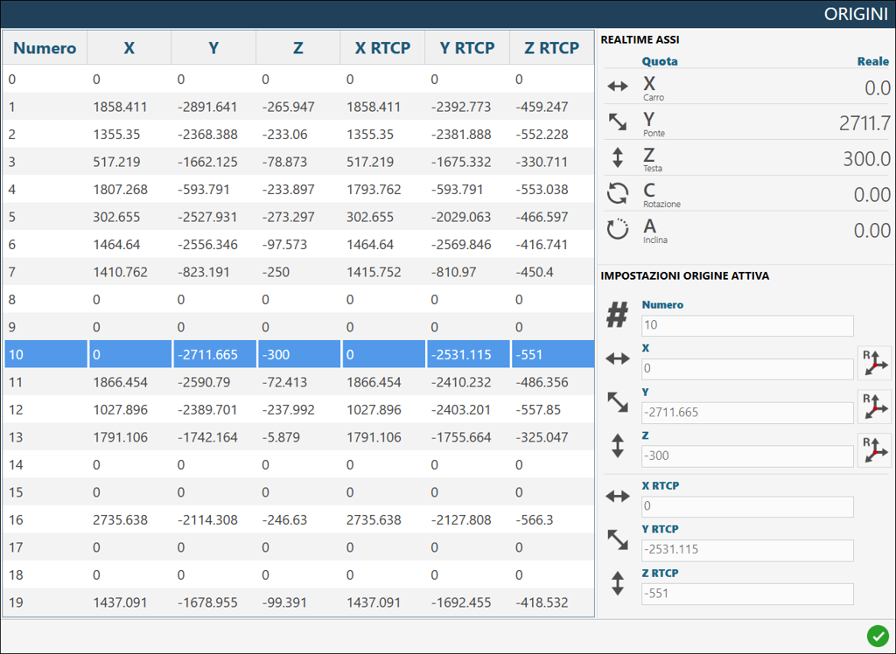
RTCP - Rotation Tool Center Point
The RTCP function allows the operator to position the machine for a miter cut while keeping the tool height unchanged, even though the inclination changes during positioning. The inner edge of the disk remains in the same position as at the start of the movement.
Operating procedure
Set the target position in the area dedicated to the “A” axis (inclination) or “C” axis.
Pressing the RTCP button starts the inclination or rotation function while keeping the lowest point of the tool fixed.
Movement using the RTCP command is permitted only when the coded key is inserted in the designated position on the operator console.
Wait for the machine to reach the set position.
Motor
This section provides some statistics relating to the machine motor:

 | Revolutions per minute (RPM) |
 | Consumption (A) |
 | Alarm threshold (A) |
Feed
The Feed value represents the interpolated movement of the machine.

Right sidebar
When the application starts, the preselected function is MANUAL.
This sidebar contains the following available commands and programs/functions:

Bottom bar
The bottom bar displays information and error messages as well as buttons for certain functions.
Three examples of the bottom bar are shown below:
With no active alarms.

With a general emergency active, shown with an icon, an error code (PE0000 in this example), the related description, and the alarm button on the right flashing.

With a displayed message, direct JOG active in the example.

 | Alarms |
 | Minimize software |
 | Machine shutdown |
Alarms
The alarms page shows the active system Alarms/Messages.
If the machine has no active alarms, the page is empty; otherwise, one row is displayed for each current error.
The following example page for alarm management and display shows an alarm currently active in the system:

Alarm buttons
 | Updates |
 | Alarm history |
 | Messages / Alarms |
 | Alarm groups |
Alarm display - Standard
The standard display of one of the alarms consists of:

 | Online link |
 | Alarm code |
 | Description |
Alarm display - History
In addition to the items already described, the daily alarm history also includes the following data:

 | Status change time |
Alarm status |
Alarm display - Groups
The grouping system displays a single entry for each alarm, avoiding duplicates.

Number of occurrences | |
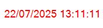 | First activation time |
 | Last activation time |
The suction cups can be used manually to move pieces from one work zone to another.
/0_0_Ventose_C.png)
Suction cup buttons
/Test_-_png_-_20.png) | Enable / disable suction cups |
/1.3.png) | SUCTION CUPS: RAISE - Suction cup parking |
/2.3.png) | SUCTION CUPS: LOWER - Prepare suction cups |
/4.3.png) | LIFT PIECE: RELEASE - Unload piece |
/3.3.png) | LIFT PIECE: START - Lift piece |
/5.2_off.png) /5.2_on.png) | BLOW - Blow control |
/6.2_off.png) /6.2_on.png) | VACUUM - Vacuum pump control |
Safety conditions
Pay particular attention to the active suction cups during lifting, ensuring that the areas used are sufficient to lift the piece being moved. Always try to use the largest available vacuum area to grip the piece and check that there are no defects or breaks in the material that could create hazards or machine operating problems.
Once the vacuum pump has been switched on, it may only be switched off using the automatic functions provided for this purpose. Pressing the reset button or the emergency stop mushroom has no effect on the vacuum pump, which will continue to operate. The pump can be forcibly switched off using the dedicated button on the “Additional Controls” page.
During automatic procedures, before lifting the piece, the vacuum status is checked by a dedicated sensor: if a sufficient vacuum value is not detected, the “vacuum missing” alarm appears. The pump will remain active until the vacuum switch detects a correct value or until it is disabled from the “Additional Controls” page.
In newer versions of Parametrix, the “Single Cut” function can be used. Selecting “Single Cut” from the list opens a page similar to the following.
Single Cut can be used to perform a straight cut (or a miter cut) on the slab, starting from the machine's current position and ending at the length requested by the user. Arcs or circles CANNOT be cut using this function.

Buttons
 | Parallel cut buttons |
 | Max |
Stop | |
 | Change Step Mode |
 | Save |
 | Open |
Parameters
Depending on the type of material to be machined, the parameters can be set differently and saved for subsequent similar jobs.
Common parameters
 | Single-cut length |
 | Movement distance |
Pass machining configuration parameters
 | Penetration into the material when moving forward |
 | Penetration into the material when moving backward |
 | Penetration into the material for the last pass |
 | Machining speed when moving forward |
 | Machining speed when moving backward |
 | Material entry speed |
 | Last-pass machining speed |
Full-pass machining configuration parameters
Material entry speed | |
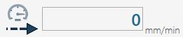 | Machining speed when moving forward |
Executing the machining operation
To start the machining operation, first position the machine at the desired starting point. Once it is positioned correctly, enter the cutting length value in the dedicated field.
At this point, the disk can be switched on using the controls on the monitor control panel. When everything is ready, start the process by pressing the “Cycle Start” button.
The machining operation starts in the direction the machine is facing when the cut is activated, so it is important to check its orientation before starting the cycle.
The ISO file programming page is used to manage and start machining operations via .pgm files previously created using CAD-CAM programs.
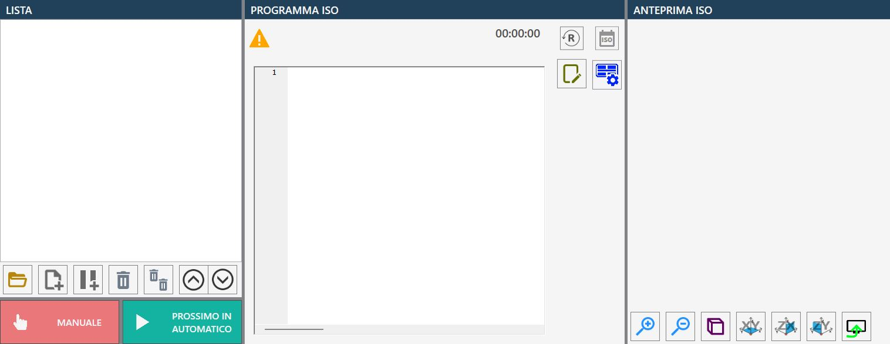
List
The ISO program list, initially empty, contains all ISO programs that can be executed sequentially.
Buttons
A number of buttons are available for managing the list.
 | Open File |
 | New ISO list |
 | Add Pause |
Remove selected item | |
 | Clear list |
 | Move selected item up |
 | Move selected item down |
At the bottom there are also two buttons relating to program execution modes:
  | Manual / automatic |
  | Single / next automatic |
Open file
Pressing this button displays an “Open File” window as shown in the following image:
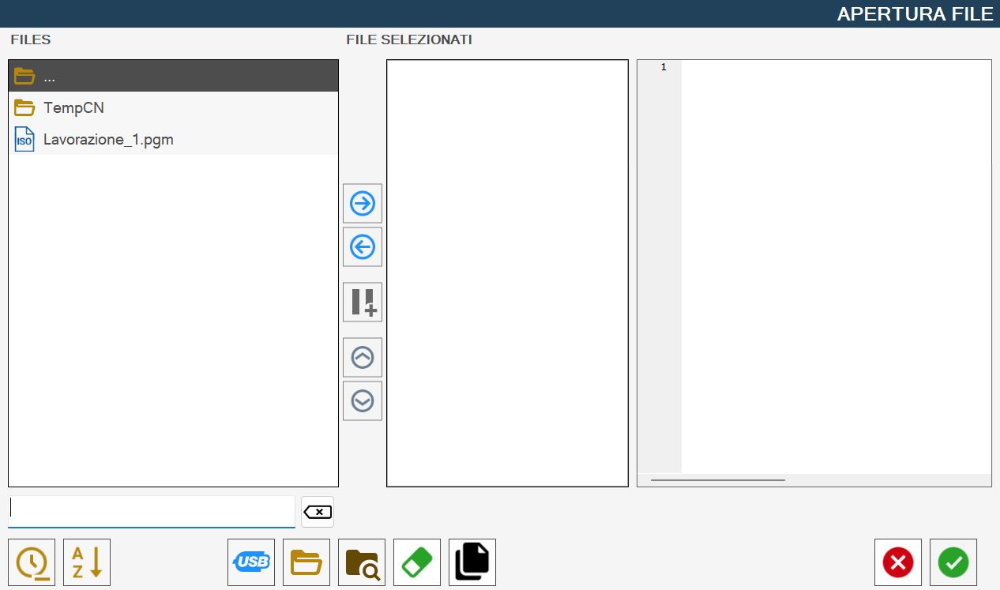
This window is divided into the following components:
Files List
includes all .pgm files in the currently selected directory
Buttons between the Files list and the Selected Files list
Selected Files List
List initially empty
Selected File preview
Shows a preview of a .pgm file selected from Files or Selected Files
Bottom bar and search filter
Central buttons, located between the “FILES” list and the “SELECTED FILES” list
 | Select item |
 | Remove item |
| Insert pause |
Move selected item up | |
Move selected item down |
The contents of the bottom bar are shown below:
 | Clear search filter |
Sort by last modified | |
 | Alphabetical sorting |
 | Show USB drive files |
Show ISO folder | |
 | Show contents |
 | Remove file |
 | Enable/Disable copy |
ISO Program Code
The code of the ISO program currently running is displayed in this window:

Buttons
This section of the ISO program contains the following buttons and related functions.
Timer and Reset | |
 | View ISO |
Block search | |
 | Search block by line After entering a number in the “Line number” field and pressing the “Go to” button, the ISO program code display moves to the requested line, or to the last available line if the entered number exceeds the number of lines in the selected ISO program. The block search can be ended and the “Block search” button made visible again by pressing the Close button: |
 | Dry Run function (Enabled / disabled) |
ISO Test function (Enabled / disabled) | |
 | Suction cup panel |
 | Save |
Block search
While executing (.pgm) files, the block search function may be useful for repositioning the tool at the point where the machine stopped program execution, for example if the tool becomes stuck in the material or another type of stoppage occurs.
Once the button has been pressed, the line from which to resume/start machining can be searched by line number by pressing the “Search block by line” button, or by scrolling through the file using the scroll bar alongside the file and selecting the desired line.
After selecting the point in the program from which the machine will resume the interrupted work, press the “Cycle Start” button; the machine recalculates all lines of code in the .pgm file without performing any movement. The speed of this operation depends on the number of lines of code that must be generated without performing any movement.
When recalculation is complete, the machine activates an automatic pause, requiring the “Cycle Start” button to be pressed again to start machining.
Before starting the cycle, it is recommended to consider the initial machine positioning, which involves all axes simultaneously.
This is necessary because the machine moves from its current position to the point where machining begins by taking the shortest path, and all axes therefore move to reach that exact point.
This means, for example, that the Z axis does not lower only after reaching the starting point, but lowers gradually along the path. This could damage the machine or the material if the machine collides with material located along the path.
Depending on the current situation, movement of one or more axes can therefore be deselected to prevent damage.
To do this, simply select the buttons above each axis; they change from green to red.
The buttons automatically return to green once “Cycle Start” is pressed.
View ISO
If the ISO preview has been enabled, an additional panel similar to the one shown below is displayed to the right of the “ISO Program Code” panel:

The ISO preview provides the following buttons:
 | Perspective View |
 | View orthogonal to the XY plane |
 | View orthogonal to the ZX plane |
 | View orthogonal to the ZY plane |
 | Enable or disable preview display 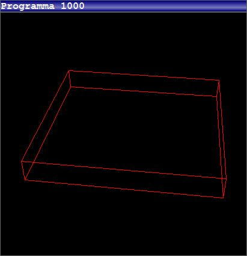 |
Executing the machining operation
The operator can create a list of PGM files by opening the desired files using the dedicated load function.
Before starting execution, the order of the files in the list can optionally be changed and pauses can be inserted between executions. These pauses make the process more flexible to manage and, if necessary, allow it to be stopped safely.
When the execution mode is set to "Automatic", the "ISO Test" function is also available and can be used to verify the correctness of the selected ISO program before actual execution.
To start the execution cycle, the operator must press the “Cycle Start” button. This executes the first ISO program loaded and displayed in the list.
ISO programs can be executed in two operating modes:
“Single” mode stops program execution at the end of each ISO file. The “Cycle Start” button must be pressed again to execute the next file in the list.
“Next Automatic” mode executes the ISO files sequentially, without requiring manual intervention, until the end of the list.
In both modes, any pauses inserted between files allow the operator to stop the cycle at any time, thereby maintaining continuous control over execution.
The leveling cycle can be used to level the workbench or the material. This program is useful when the workbench has become uneven due to cuts, or when the material thickness needs to be made uniform.

Leveling parameters
 | Movement position relative to the X axis |
Movement position relative to the Y axis | |
 | Movement distance |
 | Depth |
 | Z Step |
 | Plunge cutting speed |
 | Forward cutting speed |
 | Change tool origin |
Executing the machining operation
The “LEVELING” program does not require zeroing of the X, Y and Z origins.
The tool position at the time the cycle is started is used to determine the starting position.
After setting the various parameters, move the running disk to the maximum desired depth of the workbench or material and start the cycle using the CYCLE START button.
The pocket page is used to machine a rectangular pocket with fillets and a flat bottom.
A suitable milling cutter mounted on the main spindle must be used for this machining operation.
The “workbench level” is used as the bottom level.
The cycle uses pass mode with a helical entry at the center and a pass distance that can be set in the parameters.

Parameters
 | X |
 | Y |
 | Radius |
 | Pocket depth |
 | Z Step |
 | Working distance |
 | Entry depth increment  |
 | Working Speed |
 | Downward Speed |
 | X and Y Axis Zeroing  The position is acquired by placing the center of the milling cutter at the indicated point. |
Executing the machining operation
Enter the X, Y and R dimensions that define the shape of the rectangular pocket to be machined.
Verify that the tool data are correct, especially the diameter.
The following two execution modes are available
Pocket-to-workbench-position mode
To machine a pocket correctly, position the center of the machine at the pocket origin point, as shown in the figure in the previous chapter. This ensures that the entire machining operation develops correctly relative to the designated area.
Then set the characteristic dimensions of the pocket shape to be machined.
Before starting machining, it is essential to verify the accuracy of the selected tool data, paying particular attention to the diameter because it directly affects the precision and quality of the pocket.
The “workbench position” must be acquired with reference to the bottom level of the pocket. To determine it correctly, move to the upper surface of the material and zero the Z position. From there, move downward by the desired pocket depth. The workbench position can then be acquired using the dedicated button. When using milling-cutter tools, it is recommended to perform this operation with the A axis at 90_ to avoid inaccuracies due to the actual tool length.
Once the workbench position has been defined, zero the X and Y axes. This is done by pressing the relevant reset button and positioning the center of the milling cutter exactly at the point indicated in the figure by the reference symbol. On machines equipped with a pointer laser, the X and Y zero point can be acquired directly using the reference provided by the laser.
The pocket depth depends directly on the level set as the workbench position and on the Z-axis position when the cycle is started using the “Cycle Start” button. Machining begins with a helical entry at the center down to the depth specified by the “Z Step” parameter. The area is then cleared with a concentric movement, following the distance set in the machining parameters.
The machine movements required to reach the initial position take place at the so-called “clearance position”, which can be defined in the tool parameters. This ensures that the tool does not interfere with any obstacles during positioning movements.
Position-above-piece and origin-value zeroing mode
This mode requires setting and subsequently using the parameter: “Pocket depth”
This function can be used to add multiple cuts.
This special type of cut makes it possible to create a series of parallel cuts within the same group, with the option of having two groups, each with its own configurable direction.
The interface appears similar to the following:

Sidebar
Cut-group selection and management
 | Create first cut group |
| Create second cut group |
 | Cut management |
Cut parameters
For each of the two cut groups available to the operator, up to 100 simultaneous cut configurations can be entered with their respective parameters.
 | Orthogonal directions |
Width | The distance between one cut and the next. |
Numbers | The number of parallel cuts to create. |
 | Cut position |
 | Show next/previous cuts |
Stretching Cuts
The operator can extend all cuts in both the first and second groups at the start or end by the set amount.
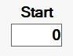 | Start |
 | End |
Delete and update cuts
 | Delete cuts |
 | Update cuts |
C axis
The machine head can be rotated to adjust the orientation of cuts in both the first and second groups.
 | Rotate _90 |
 | Rotate -90 |
 | Machine head rotation |
 | MDI |
Thickness
The operator can define the thickness of the slab to be cut.
 | Manual thickness |
 | Thickness with machine |
Executing the machining operation
The operator can configure both cut groups by changing their respective parameters.
Once the desired result has been obtained, the “Cycle Start” button can be pressed to perform the machining operation.
First cut group
In the first cut group, one or more sets of cuts are defined by changing the Width, Number and Cut Position parameters, as well as the C-axis rotation.
In the following job, the cuts have been set parallel to the current machine position.

Second cut group
As with the first cut group, the parameters of the second group can also be changed to obtain the desired result.
In this job, the direction of the cuts has been changed, creating several cuts orthogonal to those in the first group.

Cut optimization and management
In this section, the cut execution order can be changed and each cut can be enabled or disabled.
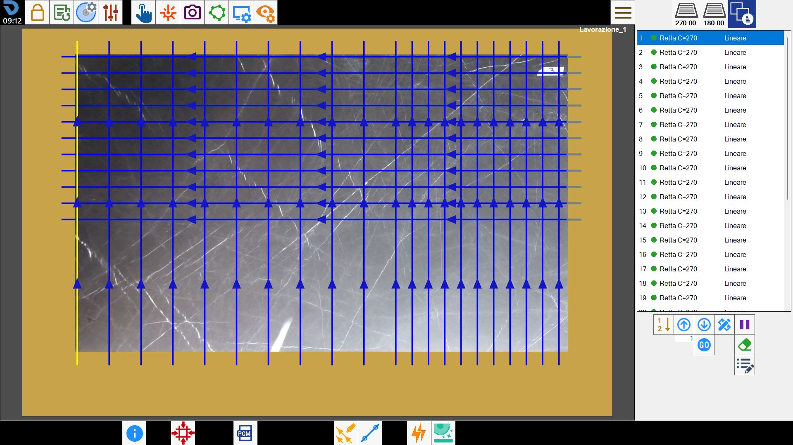
IsoCam is the software used to perform profiling operations with the disk; it allows shapes to be drawn or imported, the profile to be defined, and different machining methods to be applied.
Job programming is divided into several stages, which are described in the following paragraphs.
When the IsoCam program is opened, if no job has previously been created, the operator can create a new one starting from the first machining step.
If a job has already been created, it is loaded automatically and the operator is taken directly to the last step of the job:

Elements common to the various steps
The user interface consists of several areas.
Menu: quick utilities.
Top bar: functions specific to the active page.
Central area: contains the drawing or active area depending on the page.
Side bar: window containing the parameters to be edited.
Bottom bar: buttons generally applicable in different areas of the software.
The following elements remain visible at all times, regardless of the current stage of the process.
Menu
The menu bar is located at the top, above all other elements of this interface.
Visible | The operator is provided with several settings relating to the visibility of pieces in the work area. |
Options | Color-related settings can be changed. |
Language | ISOCAM is currently available in the following languages:
|
Right sidebar
 | Machine settings |
 | INFO |
 | Step Management |
 | Close |
Machine settings
This panel allows you to switch to IsoCam Advanced mode, return to the basic version, and change the X and Y Grid Step values.

Bottom bar
New job | |
 | Working files |
 | Save job |
 | Edit job |
Section drawing (step 1 of 4)
The first programming stage consists of drawing the section to be machined. The window provides the typical commands of CAD software: line drawing, arc drawing, snap, move, etc.
The software is based on creating the section as a quick sketch, which is then edited entity by entity using the dedicated commands. Drawings in .dxf format generated by external CAD systems can always be imported.

Top bar

 | Line drawing command |
 | Arc drawing command |
 | Moves the selected segments |
 | Mirror Figure |
 | Fillet |
 | Reverse active selection |
 | Delete selected segments |
Right sidebar
Line properties
When a line is selected in the work area, the right-hand side column is updated to show the characteristics of the selected entity, which can be edited by the user:
Length | Indicates the linear distance between the two endpoints of the selected line, calculated from their coordinates in the workspace. |
Corner | Indicates the orientation of the line relative to the horizontal axis of the reference system. |
Δx | Indicates the change in the X coordinate between the starting and ending points of a line or entity, i.e. the horizontal distance traveled relative to the X axis of the reference system. |
Δy | Indicates the change in the Y coordinate between the starting and ending points of a line or entity, i.e. the vertical distance traveled relative to the Y axis of the reference system. |
 | Extend/Shorten selected line |
 | Round Angle |
Scale connected segments | Applies proportional scaling to all entities directly or indirectly connected to the selected line. |
Arc properties
When an arc is selected in the work area, the right-hand side column is updated to show the characteristics of the selected entity, which can be edited by the user.
The arc can be defined in different ways: by points, by center, radius and arc, etc.
The various characteristics are shown in the window that appears on the right.
Changes to certain characteristics can be accommodated in different ways, for example by changing the radius or the starting/ending point; the “Fixed center” flag is used to determine how the change is applied.
Radius | Indicates the constant distance between the center of a circular curve or arc and any point along its circumference. |
Start/end angle | Angle of the starting or ending point relative to the center. |
Prev. / Next Tangent | Changes the starting or ending angle so that the arc is tangent to the previous or next entity. |
Fixed center | Determines the consequences of a change (radius or angle). |
Translate / Move selection
When the “move” command is enabled, the movement parameters window appears. Movement can be performed directly by clicking in the drawing area (including with snaps active) or by setting the parameters.
The movement must be confirmed using the “OK” button.
 | Position selector |
 | Translation |
Move copy | If enabled, the function creates a copy of the selected entity and applies the movement only to this copy, leaving the original entity unchanged. |
Mirror
After enabling the command, set the center of symmetry by clicking in the work area or by entering the coordinates, select the mirroring direction, and press the “OK” button to confirm.
Center of symmetry | Allows the coordinates of the center of symmetry used for horizontal or vertical flipping of the selected entity to be changed. |
Coordinates to invert | Indicates whether to flip horizontally, vertically, or in both directions. |
Mirror copy | If enabled, the mirroring operation creates a mirrored copy of the selected entity while leaving the original unchanged. |
Fillet
A first message displayed in the right-hand column allows the operator to set the fillet radius and confirm the selection.

A second message informs the operator that fillets can now be inserted between two lines; this operation remains available until the function is disabled.

Below is an example of applying fillets to two adjacent lines and to a line adjacent to an arc:

After applying the fillets:

Bottom bar
 | Import DXF file |
 | Export DXF file |
 | Undo edit |
Start/end snap | |
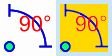 | Ortho command |
Connected Segments command | |
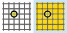 | Drawing grid |
 | Undo Zoom |
 | Select area for Zoom |
 | Reset zoom |
Profile selection (step 2 of 4)
The previously drawn section must be applied to a suitable profile.
The profile can be linear or arc-shaped, in the X/Y plane or also vertical; depending on the selection, certain machining modes are enabled or disabled. For example, an arc profile in the XY plane can only be machined with a vertical disk, and vice versa for an arc profile in the XZ or YZ plane.
The profile type is selected using the buttons on the left; the parameters used to geometrically describe the profile are shown at the top center, and a preview of the result is shown at the bottom center.

Central area
Linear Profile | Set the direction and length. |
Arc Profile | Define: direction, work plane, concavity and geometric characteristics. |
Circle Profile | Machined only externally with a horizontal disk. |
Linear Profile parameters

Profile Execution | Two modes are available: “Along X” and “Along Y”. |
Line length (L) | Horizontal length of the base of the inclined segment, measured between the starting point and the horizontally projected ending point. |
End-point Delta Z (H) | Height of the inclined segment, i.e. the difference in position between the beginning and end of the segment. |
Arc Profile parameters

Profile Execution | Choice between “Along X” or “Along Y”. |
Machining orientation | Choice between “XZ Plane” or “XY Plane”. |
Machining type | Choice between “Concave” or “Convex”. |
Length (L) | Horizontal distance between the two endpoints of the arc, i.e. the chord connecting the beginning and end of the arc. |
Starting radius (R) | Distance from the center of the arc to a point on the arc itself. Determines the overall curvature of the arc. |
Vertical rise (H) | Maximum height of the arc relative to chord L; represents the vertical distance between the highest point of the arc and the chord. |
Angle width (A) | Central angle subtended by the arc, expressed in degrees. |
Changing any of the following values: “Length”, “Starting radius”, “Vertical rise” or “Angle width” causes the remaining parameters to be recalculated automatically.
Circle Profile parameters

Starting radius (R) | Determines the radius from the starting point. |
Guard | This flag indicates whether the C axis rotates during machining (guard active) or remains stationary at C=0_ (guard not present). |
Bottom bar
 | Table view |
Additional lights | |
 | Default view management |
Machining parameters (step 3 of 4)
The page is divided into panels containing different types of data to be set for machining

Parameters tool
The operator can define the tool parameters:

If this is a new project, the data are loaded automatically based on the tool physically installed; if it is a previously saved job, the tool data are those already saved in the previous program.
 | Tool name |
 | Thickness |
 | Diameter |
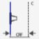 | CRF (Flange Rotation Center) |
 | Safety position |
 | RPM (Revolutions Per Minute) |
Machining orientation

Linear Profile
For linear profiles, it is possible to choose whether to machine with the disk vertical or horizontal (from the front or from the left).
Vertical Orientation | Horizontal Orientation |
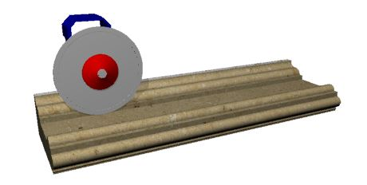 |  |
Arc Profile
For curved profiles, the orientation is constrained by the profile type:
Machining type | Vertical Orientation | Horizontal Orientation |
Concave |  | 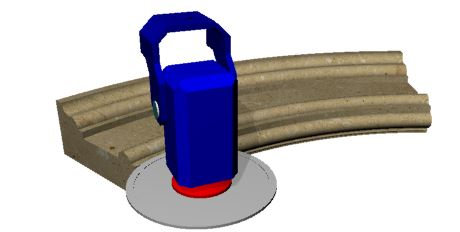 |
Convex | 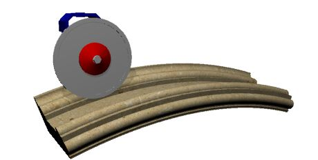 |  |
Machining type
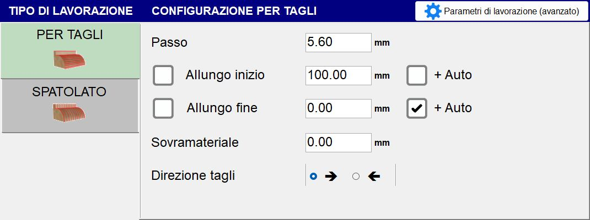
Machining can be performed in two modes:
 | Cut mode |
 | Smoothing mode |
Cut Configuration
Parallel cuts following the selected profile are performed at a distance between cuts defined by a parameter.

Step | Indicates the distance between the position of one cut and the adjacent cut. If it is greater than the disk thickness, material will remain between passes. |
Start / end extension | Allows a cut to be extended at the start / end by the set value. |
Auto Plus | Enabling the flag automatically increases the extension value based on a value established by the system. |
Offset work | Thickness of material to leave above the desired final section. |
Cut direction | The cut direction can be from right to left or from left to right, depending on the selected configuration. |
Smoothing Configuration
The movement is transverse to the profile direction and is used for surface finishing of the piece.

Smoothing step | Indicates the distance between one transverse movement and the next along the profile direction. |
|---|
Cutting speed and mode
Depending on the previous selections, different menus appear for selecting the parameters required to define the machining operation.

If the selected machining type is Cut Configuration, two types of machining parameters are available:
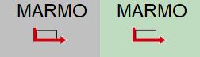 | Marble Mode |
 | Granite Mode |
Marble Mode
General parameters:
Cuts in both directions (finishing) | This flag allows a return speed different from the forward speed to be set. |
Never raise (finishing) |
Speed parameters:
Forward | Forward execution speed of the pass. |
Return | Return execution speed of the pass. |
Penetration | Penetration execution speed of the pass. |
Minimum | When a non-zero value is set, the cutting speed depends on the depth of the cut; movement therefore takes place at forward speed for cuts with zero depth and at minimum speed when the cut is at maximum depth for the selected section. |
Granite Mode

General parameters:
Cutting stock removal | Amount of material removed during the forward pass. |
Return stock removal | Amount of material removed during the return pass. |
If the selected machining type is Smoothing Configuration, a single machining parameter is available:
Speed - Machining | Sets the speed at which the smoothing machining type is performed. |
|---|
Machining parameters (advanced)
 | Machining parameters (advanced) |
This screen can be used to check and edit various parameters, many of which were set in steps 2 and 3.

The first operation is to select the profile type to be used:
 | Linear |
 | Arched |
And then the following parameters:
Machining | It can be cut or smoothing. |
Machining orientation | Machining can be performed vertically or horizontally. |
Profile execution along | Along X or Y. |
Machining Data
For the Linear profile, the following parameters can be set:
Material thickness | Defines the material thickness (in mm) |
Profile inclination (mm) | Defines the profile inclination by specifying the height difference between the ending point and the starting point. |
For the Arc profile, the parameters set in the previous steps are available.
Both profiles also share the following machining data:
Step | Fixed in Y: keeps the distance between cuts fixed regardless of the underlying section |
Cut direction | Choice between “Y_” or “Y-”. |
Complete profile machining | Allows you to choose whether or not to machine the complete profile. |
Force cuts at corners | Adds cuts at points where the slope changes. |
Remove overlaps | If this flag is enabled and the “Step” value is greater than the “Thickness” value, overlapping cuts are removed. |
Optimized step (dressing) % Overlap | If the “Step” value is less than the “Thickness” value, the step is optimized on horizontal lines. |
Perform cut at start | Allows you to choose whether to perform a cut at the beginning of the profile. The depth of this cut can be set using the adjacent box. |
Perform cut at end | Allows you to choose whether to perform a cut at the end of the profile. The depth of this cut can be set using the adjacent box. |
Tool Data
Some previously set data and other tool-specific parameters are shown here.

Tool description | A brief description of the tool |
 | Tool magazine |
Position No. | Indicates the position number within the magazine for the selected tool. |
Corrector No. | Indicates the number that identifies the selected tool name. |
Disk core thickness (SA) | Thickness of the central supporting body of the disk. |
Tooth shape | The operator can choose one of three tooth shapes:
|
 | Material selection
|
Priority | A priority value can be set (strictly positive). |
Depth | Indicates the tool cutting depth. |
Machining (step 4 of 4)
Based on the previous selections, a preview of the calculated cuts is displayed. The page is divided into several areas with controls for managing changes.

After checking the cuts or making the desired changes, press the “NEXT” button to open the page for generating the cutting program.
Menu
In the fourth step, an additional item becomes visible in the top menu:
Cuts | This menu provides the operator with several quick settings for the generated cuts. |
|---|
Top bar
 | Cut generation |
 | Change cut position |
 | Adds a head cut to separate pieces |
 | Adds a tail cut to separate pieces |
 | Adds a cut at the mouse position (Ins) |
 | Delete selected cut |
 | Delete cuts before the selected cut |
 | Delete cuts after the selected cut |
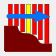 | Cut simulation |
Central area
Right sidebar
In the fourth step, this bar contains the following information:
 | Progressive cut number |
 | General Data |
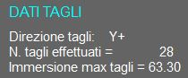 | Cut Data |
Bottom bar
 | Cut options |
  | Move/extend cuts |
 | Shift |
Program creation
Once preparation in the fourth step is complete, the final stage can be accessed, including display of the obtained result and generation of the ISO file.
The central area shows a 3D view of the generated machining operation, taking the machining mode into account. Clicking in the area allows the view to be rotated and zoom to be managed.

Basic procedure
Step 1
To begin, press the "New job" button. Make sure the "Connected Segments" function is active, then enable the "line" command. Click repeatedly in the work area to draw the desired section. Once the drawing is complete, click the "line" command again to disable it. Then select each entity individually to check and, if necessary, edit its parameters.
Step 2
In this step, the operator can set some basic general parameters relating to the desired machining type.
Step 3
At this point, parameters relating to the tool, type, orientation and parameters of the selected machining operation can be set.
The “Machining parameters (advanced)” panel also provides an overview of all parameters set up to this point.
Step 4
A cut list for the current machining operation is generated automatically. Cuts can be inserted, edited and removed according to operating requirements.
ISO generation
The final machining step allows the operator to create an ISO file from the resulting machining operation or restart the procedure.
The Polishing program allows polishing to be performed using different machining types. It is also possible to choose how the slab geometry is acquired: by detecting the points that define the surface vertices (from three up to a maximum of six), or by using a regular surface (rectangle) by entering the zero position and the values of the two sides.
/1.1-20250731-080428.png)
Machining mode
To use this machining operation, first choose one of the two available modes by selecting the corresponding button:
The ‘
Rectangle selection
’ and ‘
Free point selection
’ modes are mutually exclusive: enabling one automatically disables the other.
/1.1-20250303-082732.png) | Switch to Free point selection mode |
/1.2-20250303-082732.png) | Switch to Rectangular selection mode |
Entry/exit mode
The buttons shown allow the tool entry and exit to be changed between progressive and standard modes.
The ‘
Progressive
’ and ‘
Standard
’ modes are mutually exclusive: enabling one automatically disables the other.
/2.1_b-20250731-113844.png) | Switch to progressive mode |
|---|---|
/2.2_b-20250731-113804.png) | Switch to standard mode |
Free point selection mode
This mode is displayed as follows:
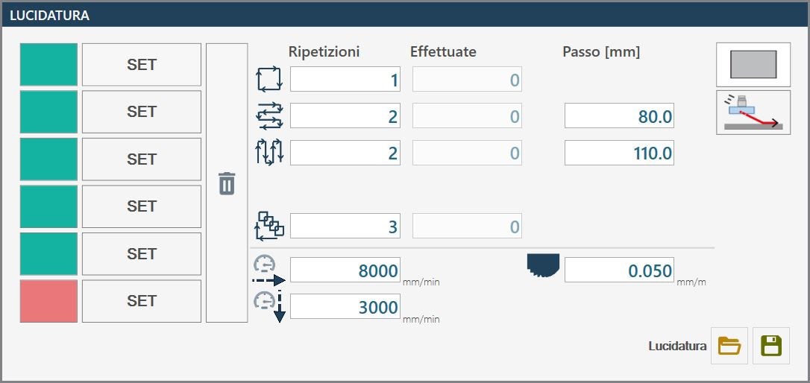
Parameters
Point positions
/3.1.1.1-20250731-111822.png) | Set |
/3.1.1.3_b-20250731-112553.png) | Clear |
Machining types
/3.1.2.1_b-20250731-114156.png) | Perimeter |
/3.1.2.2_b-20250731-114218.png) | Horizontal passes |
/3.1.2.3_b-20250731-114252.png) | Vertical passes |
Global repetition |
Machining parameters
Steps | Each machining type can be repeated a fixed number of times using this dedicated field. |
Made | The number of repetitions performed is displayed. |
Step [mm] | Indicates the distance between one pass and the next, selectable for each machining type. |
Tool parameters for polishing
/3.2.1_b-20250731-114407.png) | Working speed |
/3.2.2_b-20250731-114433.png) | Downward speed |
Tool wear |
Executing Free point selection mode
Between one machining operation and the next, the machine performs the movements without rising to the safety position.
The operator sets the position of a minimum of three and a maximum of six available points by moving the machine manually and using the relevant save controls. Once the points have been defined, the machining parameters are configured for each desired polishing type. The specific parameters of the tool to be used for polishing are also set.
At any time before the polishing cycle starts, the operator can change the tool entry and exit mode by selecting one of the two available options.
Once configuration is complete, the machine A axis must be tilted to 90_ and disk rotation started. The operator can then execute the programmed cycles by pressing the “Cycle Start” button. During execution, progress can be monitored in the “Performed” column, which shows the completed cycles for each selected polishing type.
Rectangular selection mode
This mode is displayed as follows:
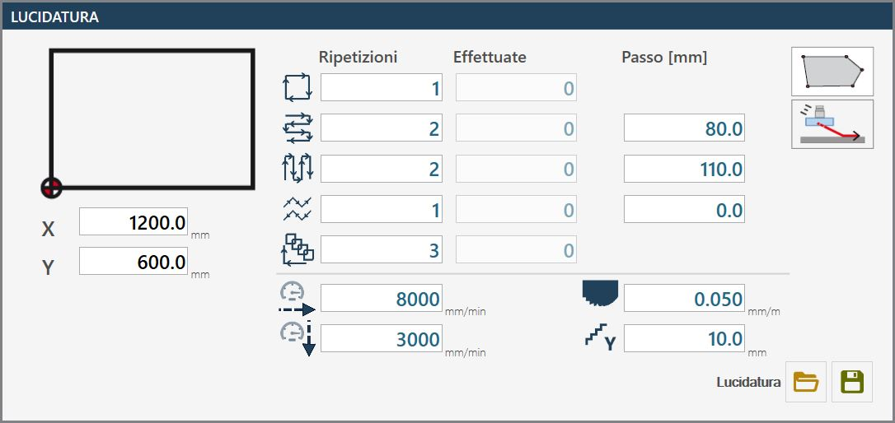
Parameters
Rectangle position
/4.1.1.2-20250731-115103.png) | Rectangle sides |
|---|
Machining parameters
Refer to the Free selection machining parameters mode for the following operations: Perimeter, Horizontal/vertical passes and Global repetition.
/3.1.2.4_b-20250731-114318.png) | Zigzag |
Tool parameters for polishing
Refer to Free point selection disk parameters for the disk parameters: Working speed, Downward speed and Disk wear.
/3.2.4_b-20250731-114520.png) | Y-axis step for Zigzag |
Executing Rectangular selection mode
Between one machining operation and the next, the machine performs the movements without rising to the safety position.
The operator defines the position of the rectangle to be polished by manually moving the machine and changing the corresponding coordinate values. Once the rectangle has been defined, the machining parameters are configured for each desired polishing type. The specific parameters of the tool used for polishing are also set.
At any time before the polishing cycle starts, the operator can change the tool entry and exit mode by selecting one of the two available options.
Once configuration is complete, the machine A axis must be tilted to 90_ and disk rotation started. The operator can then execute the programmed cycles by pressing the “Cycle Start” button. During execution, progress can be monitored in the “Performed” column, which shows the completed cycles for each selected polishing type.
The ISO File Program List page allows multiple programs previously created using CAD-CAM software to be executed consecutively, for machines with two work areas, Twin machines, or programs with multiple machining operations created while the machine is already running.

Top bar
The top bar displays information for monitoring the progress status of the list

  | Enable/Disable ISO Program List |
  | List execution status |
   | List progress bar |
List progress bar
This progress bar provides information on the execution status of the current ISO program while also giving an overview of the next program in the list and the program that has already completed machining and moved to unloading.

In the previous image, no program is yet shown as unloading because execution of the list has not started and no pieces have been processed. Conversely, if there is only one ISO file in the list or the job has been started and all other files have already been executed, the Next section will be empty.
During execution, program progress is displayed in real time, as shown below.

Side menu
On the right side of the suction cup panel there are several buttons for managing the individual files in the program list.
 | Execute next program |
 | Move selected item up |
Move selected item down | |
 | Delete selected item |
 | Suction cup panel |
Suction Cup Panel
The suction cups can be used manually to move pieces from one work zone to another.

Suction cup buttons
 | Enable / disable suction cups |
 | SUCTION CUPS: RAISE - Suction cup parking |
 | SUCTION CUPS: LOWER - Prepare suction cups |
 | LIFT PIECE: RELEASE - Unload piece |
 | LIFT PIECE: START - Lift piece |
  | BLOW - Blow control |
  | VACUUM - Vacuum pump control |
Safety conditions
Pay particular attention to the active suction cups during lifting, ensuring that the areas used are sufficient to lift the piece being moved. Always try to use the largest available vacuum area to grip the piece and check that there are no defects or breaks in the material that could create hazards or machine operating problems.
Once the vacuum pump has been switched on, it may only be switched off using the automatic functions provided for this purpose. Pressing the reset button or the emergency stop mushroom has no effect on the vacuum pump, which will continue to operate. The pump can be forcibly switched off using the dedicated button on the “Additional Controls” page.
During automatic procedures, before lifting the piece, the vacuum status is checked by a dedicated sensor: if a sufficient vacuum value is not detected, the “vacuum missing” alarm appears. The pump will remain active until the vacuum switch detects a correct value or until it is disabled from the “Additional Controls” page.
Loss of power to the vacuum pump causes a rapid loss of vacuum and consequently causes the material lifted by the suction cups to fall.
Bottom bar
The lower part of the bar displays several functions relating to execution of the ISO program list, as well as monitoring of both the tool and the slab.

List execution management
At the bottom there are also two buttons relating to program execution modes:
  | Manual / automatic |
 | Single / next automatic |
Slab and tool monitoring
At the center and right of the bottom bar, the operator can configure periodic tool diameter monitoring by setting checks at defined intervals based on the number of cycles performed.

 | Number of Cycles Between Disks' Probes |
|---|---|
 | Number of Cycles To The Next Probe |
 | Tool diameter |
 | Slab thickness |
ISO Program List Execution
If the ISO Program List is disabled, the switch at the top right of the panel appears off; the function can then be enabled simply by clicking this button.
The ISO program list is automatically expanded as ISO files are generated in Parametrix; however, the operator can reposition items within the list or remove them according to requirements.
Before executing the list, the operator can set the number of cycles to be performed between tool probing operations.
The number of cycles remaining until the next probing operation is then updated and displayed.
The operator starts execution of the program list by pressing the “Cycle Start” button. The programs are then executed sequentially, simultaneously displaying the current program, the program to be executed next, and the program already completed.
If the program execution mode is set to Manual and Single, list execution is interrupted at the end of the current program, immediately after the next program to be executed has been prepared.
In this case, the operator can press the Next button at the most appropriate time and proceed with execution by pressing the “Cycle Start” button again.
The system is designed to assist the operator in programming automatic cuts. The software can be used to:
Define the slab position in the machine work area and create the material perimeter for machining
Create pieces using parametric shapes
Import shapes created with other CAD systems
Generate a list of pieces to be machined
Find the best position for the pieces on the slab
Set special cutting functions
Program the cutting order and create the machine movements
Monitor cut execution on the screen
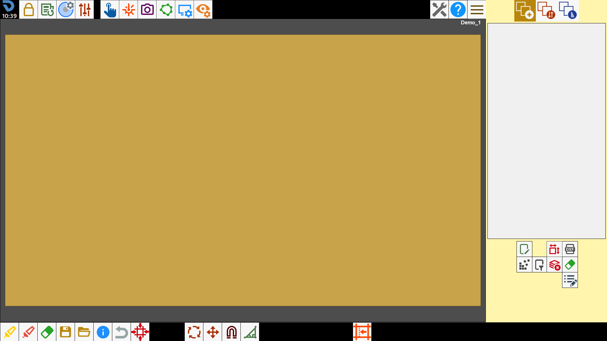
Work area and piece list
Below is a typical representation of the Parametrix work area with the imported piece list already populated and an acquired image of the slab.

List of inserted pieces
When a piece is created, the program adds it to the piece list; from the list, pieces can be inserted into the work area, some piece properties can be modified, and the number of pieces still required for the job can be checked.

Piece positioning
Parametrix allows pieces to be positioned within the machine work area to create the cutting file.
Once the slab has been acquired, the perimeter created and the pieces for the job created, the pieces must be imported inside the slab. Pressing the button in the piece table places the piece in the work area. It is possible to work with 1 or more pieces at the same time.
If the pieces are not completely inside the slab, a warning/danger symbol appears in the upper-left corner. |
Top bar
At the top of the screen, in the center and on the left, the following buttons are visible, preceded by the logo and the displayed time:

The top command bar also includes several buttons that are described later:
 | User parameters |
 | New job |
 | Parameters tool |
 | Slab machining parameters panel |
 | Access to manual controls |
 | Laser management |
 | Add photo to workbench |
Slab perimeter | |
 | Workbench display management |
 | Display of work entities |
Side section
The buttons located at the top right allow the operator to change the Parametrix screen.

Each screen handles a specific aspect of slab machining.
 | Piece positioning
|
 | Piece cutting-order management |
 | Cut optimization and management
|
The following buttons are located at the bottom right; their functions are described later.
 | Edit piece |
 | Enable/disable standard pieces |
 | Piece creation |
 | Nesting |
 | Sort or filter pieces |
 | Delete piece list |
 | Delete piece |
 | Edit additional piece properties |
Bottom bar
When the “Parametrix” function is opened, the bottom bar changes as shown below:

This bar is supplemented with the following buttons:
 | Multiple selection |
 | Select all |
 | Remove piece |
 | Save |
 | Load |
 | Information panel |
 | Undo edit |
 | Machine on cut |
 | Piece rotation |
 | Move pieces |
Magnetize pieces | |
 | Miter cut |
 | Edit standard piece |
Once the button is pressed, various windows can be displayed.

Windows
There are 4 different windows available, each of which is described individually below.
User Values | Window dedicated to editing certain settings relating to machining operations. |
Statistic | The operator can view statistics for completed machining operations. |
Layers name | Window dedicated to settings for importing DXF files into Parametrix. |
Suction cups | Parameters relating to suction cup movement speed. |
Bottom bar
Close Parametrix | |
 | Restart Parametrix |
 | Keyboard |
 | Camera connection |
 | Remote support |
 | Technical parameters |
 | Password entry |
 | Access to web guide |
 | Do not save changes |
Import maintenance from file
Go to the technical parameters page and then to the “File Path 2” section; in the maintenance section, the following screen is displayed:
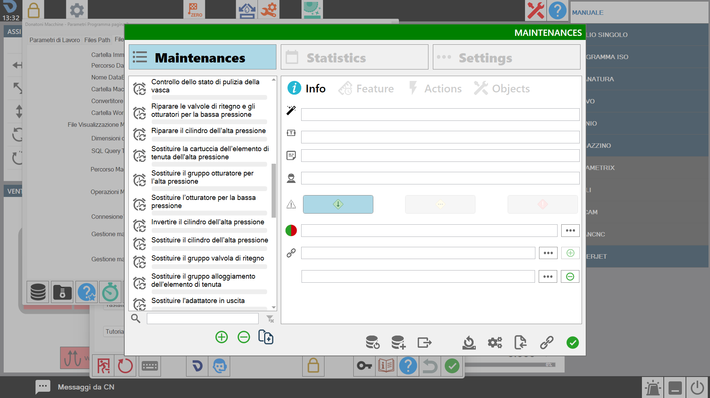
Using the following button, .mnt files can be imported to perform maintenance.
 | Import from file |
In this window, the operator can change certain parameters relating to machining.

Left section
Receding of interior Cuts | Minimum distance for the disk to approach the piece for internal cuts. |
Distance on magnet | Distance between two pieces before the magnet is activated. |
Increase inside bench | Tool breakthrough depth into the workbench. |
Workbench increment - miter | Tool breakthrough depth into the workbench. Only for isoparametric mode. |
Offset Slab Move | Additional position for the Move function. |
Maximum core drill radius | For DXF import, maximum radius for a circle to be imported as a hole. |
Overlay on Drip System | Drip-system overlap percentage, from 99% to 0%. |
Drip System speed | Drip-system speed percentage relative to normal cut speed. |
Penetration holes | Sets penetration for all holes; set to 0 for a through hole. |
Penetration Internal Cuts | Sets penetration for all internal cuts; set to 0 for a through cut. |
Automatic holes distance | Indicates the distance between holes when inserting multiple holes. |
Holes number | Number of holes to use for holes at corners. |
Operations
Active Operation | Allows a custom operation to be created for cuts. |
 | Custom operations |
Camera section
Use Camera | Enables use of the camera, or the operator selects an image from a file. |
Machine controls section
 | Enable/disable position check |
 | Acquire workbench position |
 | Axis zeroing |
File name section
The file name can be set using the text box at the bottom left in one of the following modes.
Incremental | Increments the ISO file name, 100, 101, 102… |
Input | The user can enter the file name. |
Fixed | Fixed ISO file name; enter the desired name in the adjacent field. |
Fixed _ Incremental | ISO file name in a fixed incremental format such as File_101. |
Time Data | ISO file name in date/time format such as 20191206_080124. |
File name | The ISO file takes the name of the imported file (DXF or CSV). |
File Name _ Incremental | The ISO file takes the name of the imported file (DXF or CSV), with the addition of an incremental value. |
Name color section
Black | Black piece text. |
Yellow | Yellow piece text. |
Fuchsia | Fuchsia piece text. |
Auto | Automatically determines the best color for the piece name |
Book Match color section
Background | Manages the background color of the Book Match function |
Name | Manages the name color in the Book Match function |
Perimeter | Manages the perimeter color in the Book Match function |
Other buttons
Check tool dimension at start of the program | If enabled, allows a probing cycle to be inserted at the beginning of the cutting program when switching to the cut-management screen. |
| Custom operations |
Tutorial | Provides access to the Parametrix video tutorials. |
 | Enable/Disable PGM |
Unload All mode | This parameter has two possible values: |
Tutorial
This window contains tutorials showing how to use certain Parametrix functions.
To view the desired video, press the corresponding row.

This window displays statistics for machining operations performed by the machine.
The statistics also include Single Cut, Pocket, Leveling and ISO execution operations.


On-screen statistics
The button at the top left provides access to the on-screen statistics window.
 | On-screen statistics |
A window then opens showing certain information relating to machining operations performed on the machine.
Each list item corresponds to data for a single machining operation.
At the bottom of the page, a summary of the important information for all displayed machining operations is shown.
Buttons
 | Daily statistics |
 | Monthly statistics |
 | Total statistics |
 | Settable time interval |
 | Columns to display |
 | Save statistics |
  | View slab statistics |
  | View piece statistics |
Statistics for each machine (Optional)
For the office-mode version of Parametrix, it is possible to connect to multiple machines and view statistics for each one.
The left-hand section displays all machines connected to the device.

Research
This function searches statistics within a chosen time range.

The operator can enter the start and end dates to define the time interval of interest.
Search precision can be set using the buttons.
 | Search by day |
 | Search by month |
 | Search by year |
To export statistics, use the button:
| Save statistics |
Timer
This section manages the machine timers.

Using the following buttons, the operator can manually manage a timer that tracks elapsed time.
 | Start timer |
 | Stop timer |
 | Reset timer |
The left-hand section contains information on machine usage time and the mounted tools.
Total time | Indicates the total machine operating time. |
Disk time | Shows disk usage time. |
Grease
To start automatic machine greasing, use the following button:
 | Start grease cycle |
Parametrix can import files in “.dxf” format created using dedicated external CAD programs.

Buttons
 | Color Layers |
 | Dynamic Tags |
The machine can execute cuts, milling operations, and holes from drawings created with CAD software and saved in “.dxf“ format, with automatic recognition of certain workings to simplify and speed up the machine operator's work.
For Parametrix to interpret this information, certain conventions must be followed when creating the drawing:
All drawn pieces must be closed and converted into polylines forming a polygon.
If a piece mark is to be added for identification, it must be placed inside the polygon.

Parametrix Settings for Recognizing Imported Layers
To access the window for customizing DXF file import settings, press the User Parameters button on the Parametrix top bar.
From here, go to the section dedicated to managing Layer names.
For each function type listed, the user can assign a name (corresponding to the Layer name set in the CAD software used) and assign certain parameters relating to the default values for some workings.
Function | Layer Name |
Miter Cuts | Miter cut |
Downstand | Downstand |
Backsplash | Backsplash |
Offset | Offset |
Cuts under the material | below |
Drip system | Drip |
Milling | Milling |
Rim | Rim |
Drilling | Drilling |
Additional Cut | Added |
Anchoring hole | keil |
Chamfer | Chamfer |
Lower Chamfer | Lower Chamfer |
Deactivate | Deactivate |
Remove | Remove |
Buttons
The buttons to the left of each working allow the operator to:
 | Information Window |
 | Download Example |
Miter Cut Mode
To insert a miter cut automatically, certain conventions must be followed:
Miter cuts can be inserted only on piece sides; if the miter cut does not apply to the entire section, it can be divided into multiple parts.
A miter cut can be applied to external arcs (e.g. a circular table, or curved tops only as regards the external cut).
For internal arcs (e.g. curved tops), the cut is performed in steps; the cut is made by automatically inclining the disk, avoiding collision problems with the material.
For users of CAD systems, the procedure requires creating a Layer with the following properties:
Layer Name | Inclinato _ (followed by the number identifying the desired inclination angle). |
Example | Inclinato45 or Inclinato-45 |
When a negative value is entered, the inclination refers to a diverging cut; when the value is positive, the cut converges toward the inside of the polygon.
Downstand Mode
The downstand function is a working that creates a rectangular piece having the same length as the line set as the reference side.
To insert the cuts automatically when creating a downstand, create a Layer named “Alzata” and then enter the height value.
Layer Name | Alzata _ (followed by the downstand height). |
Example | Alzata100 |
This automation in Parametrix creates a new piece whose width equals the length of the line identifying the desired downstand side, with the two sides to be bonded together cut at the same inclination and ready for a miter-joint finish.
The inclination associated with these sides can be set using the adjacent parameter.
Degrees | Sets the inclination with which the inclined sides of the working are imported. |
Backsplash Mode
The backsplash/downstand function is a working that creates a rectangular piece having the same length as the line set as the reference side.
Similarly, to insert the cuts automatically when creating a backsplash, create a Layer named “Rivestimento” and then enter the height value.
Layer Name | Rivestimento _ (followed by the backsplash height). |
Example | Rivestimento150 |
This automation in Parametrix creates a new piece whose width equals the length of the line identifying the desired backsplash side, without a miter cut and ready for a square-edge finish with edge gripping.
Offset Mode
The offset function is very useful when more material is to be left than the finished-piece dimensions; by drawing lines on the desired sides, the functions associated with the indicated sides are automatically shifted in the correct direction.
To automatically add the desired excess material, create a Layer named “Offset” and insert all lines corresponding to the sides where the setting should take effect automatically.
Layer Name | Offset _ (followed by the number identifying the offset measurement). |
Example | Offset3 |
Lower Cut Mode
The lower-cut function is valid only for machines equipped with the mechanical option that allows a cut to be made below the visible surface of the slab.
To insert a lower cut automatically, create a Layer named “Sotto” and insert a line representing the cut.
Layer Name | below |
Example | below |
The resulting cut length also depends on the disk diameter and material thickness set in Parametrix.
Drip System Mode
The Drip System function inserts a cut with a width greater than the disk thickness and a depth less than the material thickness.
To insert a Drip System automatically, create a Layer named “Gocciola” and insert a line or arc representing the center of the width.
Layer Name | Gocciola _ (followed by the number identifying the Drip System width). |
Example | Gocciola10 |
In this way, the Drip System depth is determined by the dedicated parameter.
Depth of the cut associated with the Drip System. This value is not considered if the user sets a value in the DXF. |
The cut depth can be managed automatically using the dedicated Parametrix parameter as the value, or the user can set a value by entering the “&” character followed by the desired thickness.
Layer Name | Gocciola _ (Drip System width) _ & _ (Drip System depth). |
Example | Gocciola10&5 |
The resulting cut length also depends on the disk diameter and material thickness set in Parametrix.
For curved Drip Systems, only one cut is made with the disk outside the arc itself.
Any parameters specified in the Layer name are not considered.
Milling Mode
To insert an automatic milling operation, certain conventions must be followed.
If a milling geometry involving one or more sides of the external polygon is created, the milling cutter performs the working outside the drawn perimeter; this also applies to a single side of the perimeter. If the working requires cutting the entire perimeter with the milling cutter, any disk cuts are removed.
The cut depth can be defined by creating a dedicated Layer.
Layer Name | Fresatura _ (followed by the number identifying the milling depth). |
Example | Fresatura10 |
If no depth value is specified in the “Fresatura“ Layer name, the thickness of the current working is used.
An additional function allows a polyline (open/closed, for example a circle or a single path composed of a linear polyline) to be inserted to mill a shape inside the larger perimeter.
Rim / Flush Top Mode
The rim/flush-top function is a working used to lower a perimeter, typically to recess appliances or sinks.
To insert the desired rim automatically, create a Layer named “Ribasso”.
Layer Name | Ribasso _ (followed by the number identifying the rim width). |
Example | Ribasso20 |
In this way, the rim depth is determined by the dedicated parameter.
Rim depth. This value is not considered if the user sets a value in the DXF. |
The rim depth can be managed automatically by using the dedicated Parametrix parameter as the value, or a value can be set by the user by entering the “&” character followed by the desired thickness.
Layer Name | Ribasso _ (rim width) _ & _ (rim thickness). |
Example | Ribasso20&3 |
The fillet radius between the perimeter sides cannot be modified by the user; it is determined by the milling-cutter radius.
The rim can be performed on a closed path that does not overlap the piece sides; in this case, milling is performed inside the drawn perimeter.
Drilling Mode
The drilling function allows Parametrix to add drilling workings to pieces.
To insert a drilling working automatically, create a Layer named “Foratura” and draw a circle where the hole is to be made.
Layer Name | Foratura _ (followed by the number identifying the hole depth). |
Example | Foratura5 |
If the depth is not specified, the hole is applied using the material thickness currently used by Parametrix.
In basic mode, the radius of the circle corresponds to the radius of the tool currently set in Parametrix.
Additional Cut Mode
The additional-cut function allows Parametrix to add a cut.
To insert an additional cut automatically, create a Layer named “Aggiunto” and draw a new line over the line representing the side on which the additional cut is to be created.
Layer Name | Aggiunto _ (followed by the number identifying the distance at which the cut will be added). |
Example | Aggiunto50 |
The cut is added inside (where material is present) or outside (where there is no material) the piece, according to the sign of the distance:
If the distance sign is positive, the cut is added outside the piece
Otherwise, if the distance sign is negative, the cut is added inside the piece
When an additional cut is applied to internal cuts, for example those of a recess, the cut is added inside the piece where no material is present.
Anchoring Hole Mode
The anchoring-hole function allows Parametrix to add anchoring-hole workings to pieces.
To insert an anchoring-hole working automatically, create a Layer named “Keil” and draw a circle where the anchoring hole is to be made.
Layer Name | Keil _ (followed by the number identifying the anchoring-hole depth). |
Example | Keil5 |
In basic mode, the radius of the circle corresponds to the radius of the tool currently set in Parametrix.
Chamfer Mode
The chamfer function allows Parametrix to add chamfer workings to pieces.
To insert a chamfer working automatically, create a Layer named “Smusso” and draw a new line over the line representing the side on which the additional cut is to be created.
Layer Name | Smusso _ (distance along X axis) _ & _ (distance along Y axis) _ & _ (inclination angle). |
Example | Smusso10&10&45 |
If the three values are not geometrically compatible with one another, the working is not applied.
Lower Chamfer Mode
The lower-chamfer function allows Parametrix to add chamfer workings to pieces.
To insert a lower-chamfer working automatically, create a Layer named “Becco” and draw a new line over the line representing the side on which the additional cut is to be created.
Layer Name | Becco _ (distance along X axis) _ & _ (distance along Y axis) _ & _ (inclination angle). |
Example | Becco10&10&45 |
If the three values are not geometrically compatible with one another, the working is not applied.
Deactivate Mode
The deactivate function allows Parametrix to deactivate cuts on pieces.
To insert a deactivate function automatically, create a Layer named “Deactivate” and draw a new line over the line representing the side to be deactivated.
Layer Name | Deactivate |
Example | Deactivate |
Remove Mode
The remove function allows Parametrix to remove cuts from pieces.
To insert a remove working automatically: create a Layer named “Remove” and draw a new line over the line representing the side to be removed.
Layer Name | Remove |
Example | Remove |
Hole Mode
The drilling function allows Parametrix to recognize any circle within the piece area whose radius is less than the “Maximum core drill radius” parameter.
Holes can be inserted freely in all Layers (except those identified as neutral).
An additional option related to the use of the core drill makes it possible to remove an island of material left attached after disk cutting. For Parametrix to consider this option, one or more circles must be drawn so that they intersect the sides of the island cut by the disk; using the “Automatic Hole Distance” parameter, a series of holes is then positioned automatically based on the material still to be cut after the disk cut.
Neutral Layer Management
If parts of the drawing in the DXF file are to be retained but not treated as cuts or other functions managed by Parametrix, they can be assigned to Layers recognized as neutral.
Create the Layers using the names assigned in the Neutral Layers (1,2,3) fields on the “Layer Names” page of the Parametrix user parameters. Note that the “*” character causes all imported Layers with the same name before and after the “*” symbol to be ignored during import.
Examples
This function can be used to color one or more cuts of pieces created from DXF.

Buttons
 | Change Layer Color |
Procedure
To associate a color with the cuts of a piece:
Create a Layer in the CAD software;
Assign it a color in the dedicated Parametrix panel;
Draw a line (or curve) over the line representing the cut to be colored within the Layer.
Once the piece is imported, the cut over which the line was drawn on the Color Layer will have the color set in Parametrix (not the color set in the DXF).
The line drawn over the cut to be colored must completely overlap the line representing the cut.
Example
In this example, two cuts of the piece are to be colored. The “ColorE“ Layer was created and lines were added over those to be colored.

As can be seen in the Parametrix work area, the cuts take on the color associated with the Layer of the imported DXF file.

This function allows configuration parameters to be assigned to Layers in DXF files.

Parameters
The parameters are:
Name | Used to define and identify the Layer name. |
Entity Type | Defines the type of entities that will be displayed. |
LineWeightMethod | Allows selection of the method used to obtain line thickness. |
LineWeight | Defines the thickness of the lines belonging to the Layer. |
ColorMethod | Allows selection of the method used to obtain the Layer color. |
Color | Defines the color of the entities belonging to the Layer. |
Buttons
The following buttons can be used to add or delete a configuration:
 | Create Configuration |
 | Delete Configuration |
Example
In this example, the characteristics of the elements drawn on the “Veining“ Layer are to be modified.

The entities are imported according to the parameters set in the dedicated window.

This section sets the speed for moving the piece with the suction cups.

Parameters
Speed XY | Determines the speed for moving the piece with the suction cups. |
Speed Z | Determines the speed for moving the piece with the suction cups in Z. |
Rotation speed | Determines the speed for rotating the piece with the suction cups. |
XY Unload speed | Determines the speed for moving the piece with the suction cups during piece unloading or lower cutting. |
Z Unload Speed | Determines the speed for moving the piece with the suction cups in Z during piece unloading or lower cutting. |
This button completes the current job and starts programming the next one.

Execution procedure
A job is completed by generating the machine cutting program or by saving the state of the pieces.
This button can be used to clear the slab and pieces from the work area, leaving space for the next job.
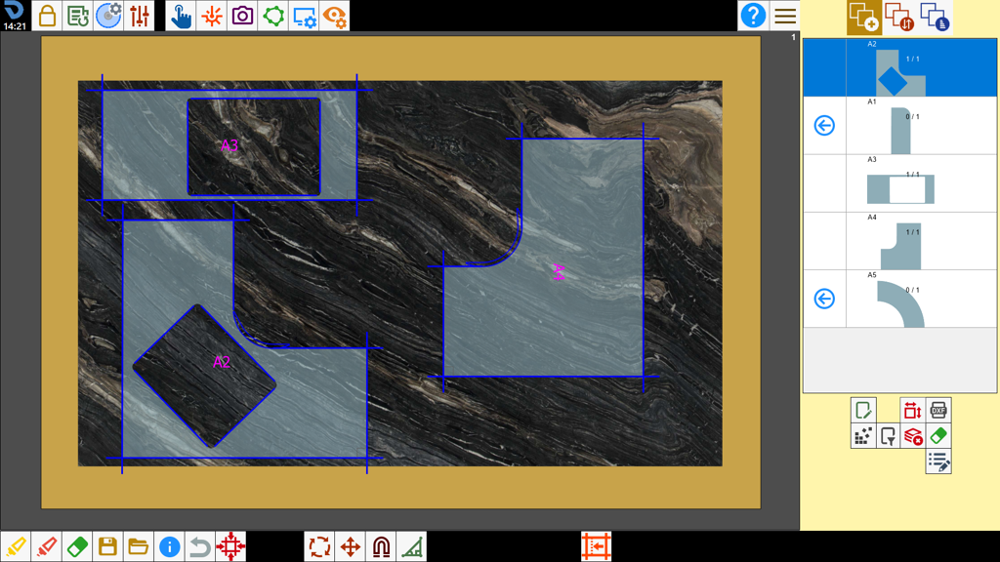
A message appears asking for confirmation to proceed with creation of a new job.

Upon confirmation, the following are deleted:
slab photo and perimeter;
all pieces in the work area (including commercial pieces);
Parametrix keeps track of the pieces that have been programmed by updating their count in the piece list.
Pieces can no longer be added to the work area once they have reached the maximum number.

The following screen allows the operator to manage the machine tools.

Tool type selection
Each tool type has a selected tool, as shown in the following example image:

 | Disk |
 | Tools |
The background of the “Disk” type appears light blue because it is the currently selected tool category.
Simply click the rectangle of the desired tool type to update the tool list below with the tools available for that type.
As a result of changing the tool type, it is automatically selected as shown in the previous example image.
List of available tools for selected tool type
The tool list shown as an example in the following image contains four disks: “Disk 400”, “Disk 625”, “Disk 2755” and “Disk 325”.
The first disk in the list is the one currently mounted on the machine; this is indicated by the light-green background and green check mark.
In the right-hand section, the parameters relating to the selected tool are shown.
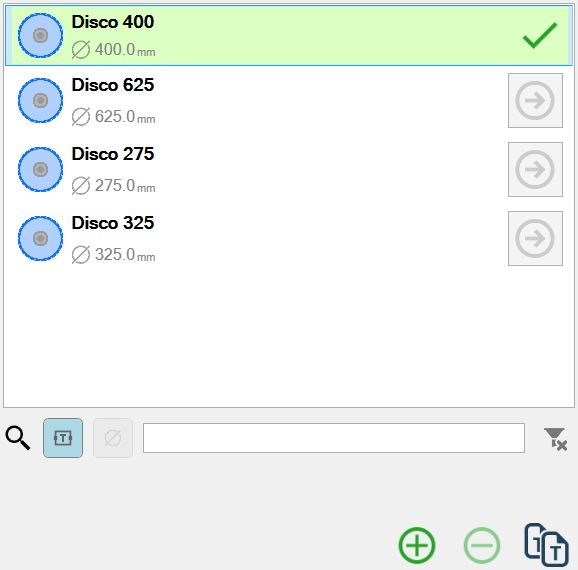
List elements
 | Tool type |
 | Main tool information |
 | Force Tool |
Search filter
The bottom of the tool list contains a search bar consisting of the following elements:

The elements making up the search filter are described below:
 | Search by tool name button |
-20250307-155302.png) | Search by tool diameter button |
 | Button to clear the applied filter |
Bottom bar
The bottom bar of the tool list provides functions for adding and removing tools from the list.

 | Add tool |
 | Delete tool |
 | Duplicate tool |
Add tool
This window is used to create a new tool. The required parameters change according to the type of tool to be created.
The following image shows the new-tool creation window for the available types:
Disk | Milling | Coredrill |
|  |  |
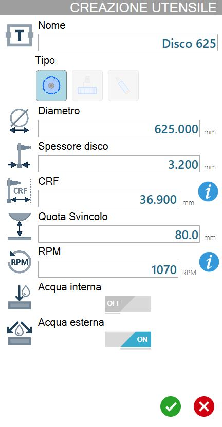 |  | 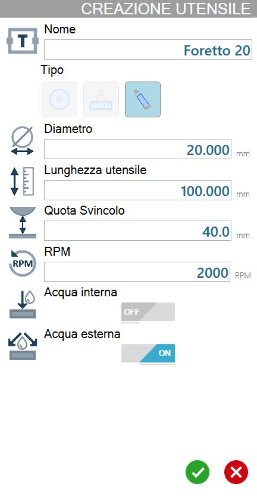 |
Parameter list for selected tool
This list contains all parameters relating to the currently selected tool.
Whenever the currently selected tool changes, the operator can view the updated values for the desired tool and make changes to each value if required.
The parameter list and its values are also updated when a different tool type (Disk / Tools) is selected, showing the values of the selected tool for each category.
Disk parameters
The parameters associated with a disk are shown below.

 | Name |
 | Diameter |
 | Disk thickness |
 | CRF - Flange Rotation Center |
 | Junction Quote |
 | RPM |
 | Internal water |
External water |
Disk rotation speed
The following button is located to the right of the RPM parameter:
RPM information |
This window displays a table containing conversions from rotation speed to RPM based on the diameter of the selected disk.
Recommended values for the selected disk are highlighted in green.

Milling cutter and core drill parameters
Parameters relating to tools such as milling cutters and core drills are shown below.

 | Tool length |
Tool probing
If the machine is equipped with the optional tool-probing device, the procedure can be activated from this panel.
Starts a cycle that can calculate the diameter for a disk, or the length for milling cutters and core drills.
Buttons
One of the following buttons is located on the right side of the panel.
 | Start disk probing |
 | Start secondary-tool probing |
The disk probing button is available only in the “Disk” section of the panel.
The secondary-tool probing button is available only in the “Tools” section of the panel.
Procedure
To measure the diameter of the disk or the length of the core drill/milling cutter currently mounted on the machine, press the corresponding button in the right-hand section of the panel.
At the end of the cycle, the program automatically updates the value corresponding to the measured tool dimension.

Other buttons
The following button is located at the bottom left of the screen:
 | Switch to the “Slab machining parameters” panel |
If the machine has the Tool Plus option, a new dedicated section is available in the tool panel.
/0.00.png)
Buttons
/0.01.png) | Water ON/OFF |
/0.02.png) | Enable/Disable rotation |
/0.03.png) | Raising |
/0.04.png) | Lowering |
Tools on a machine with automatic tool change can be managed from this panel.

Tool list
The left-hand section shows the list of all tools available for the machine.

The tool currently mounted on the machine is indicated at the top.
Below, a list shows the tools that can be used by the machine. Two buttons are provided next to each tool:
 | Force mounted tool |
Start tool change |
Parameters tool
The left-hand section contains the parameters associated with the selected tool.

 | Corrector |
 | Laser |
Corrector
This field indicates the position in the machine magazine where unused tools are stored.
 | Change corrector |
Delete corrector |
Automatic tool-change procedure
By pressing the button associated with a tool, the operator can start the automatic tool-change procedure.
At startup, the operator is asked which machining operations the new tool about to be mounted should be used for.

This type of machine can mount two disks on the head instead of one. The tool panel allows both to be managed.

Parameters
Each tool in the “Disk” section contains information about both disks mounted on the machine.

In particular:
 | First disk diameter |
 | Second disk diameter |
When the “Slab Parameters” panel is opened, the machining-parameters screen is displayed, allowing the operator to manage data relating to the machining operation.
Machining data can be set and edited using the parameters panel.

Selected material management
At the top of the “slab machining parameters” panel there are several elements used to manage materials:

The elements making up this section of the slab machining parameters are described below
 | Selected Material |
 | Create new material button |
 | Button open Materials Management panel |
 | Selected material thickness |
Add a new material
This small graphical window is used to compose the name of a new material:

If creation of the new material is confirmed, it is selected automatically.
The parameters and material thickness are updated accordingly.
Open materials management panel
This panel can be used to manage materials:
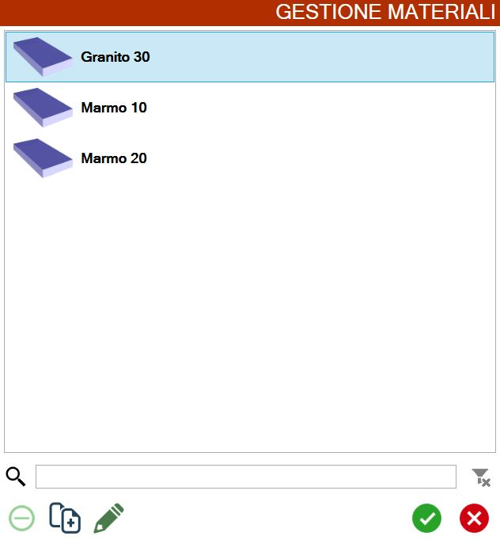
 | Search bar |
 | Remove filter |
 | Remove material |
 | Duplicate material |
 | Edit material |
Machining type selection
The selection of the machining type controls the contents of the parameter-management window.

For each machining type, the corresponding preview shows the selected increment mode, forward cutting speed (plunge / entry speed for Hole machining type), and tool diameter.
Pass type
 | Full Pass |
 | Step Pass / spiral pass |
Machining types
Linear

Full pass
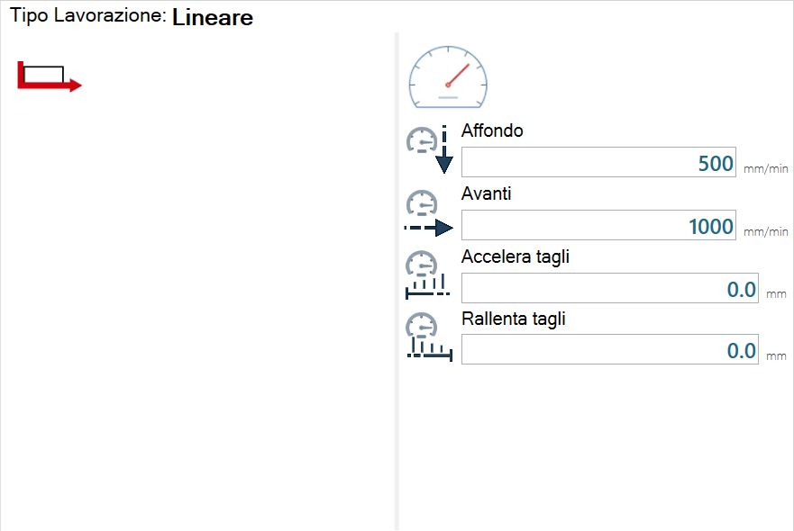
Step pass

Increment parameter description
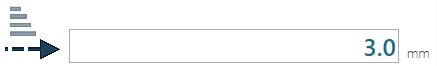 | Forward |
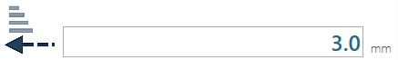 | Back |
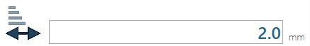 | Last Step |
Speed parameter description
 | Plunge |
 | Forward |
 | Back |
Last Step | |
Acceleration cuts | |
 | Slow down cuts |
For increments and speeds, the “Back” and “Last” parameters may both be present, neither may be present, or only one of the two may be present.
These choices are normally made when the program is installed and are determined according to the customer's machining requirements.
These options can be changed if a different machining method is preferred by contacting Donatoni Support.
Arc
Step pass

Miter cut

Full pass

Step pass

Increment parameter description
 | Cut with probing (enabled / disabled) |
Milling

Full Pass
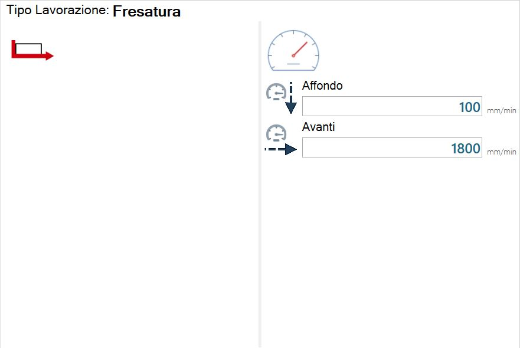
Step pass and spiral pass
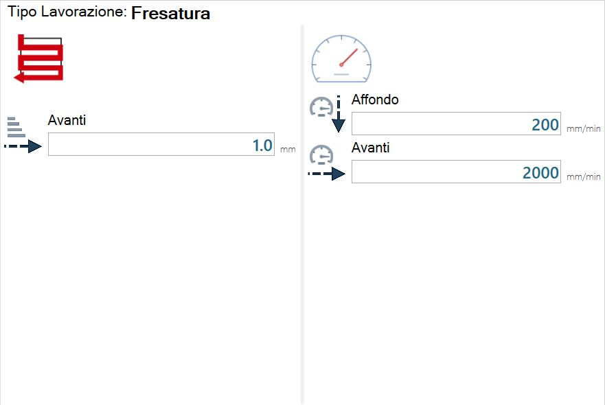

Hole

Full pass

Step pass

Machining execution with step pass:
The machine approaches the material at maximum speed until it reaches the distance from the material specified in the APPROACH parameter.
The number of steps is calculated as:
Material thickness divided by step thickness
rounded up if necessary
The machine starts moving at machining speed.
If the ENTRY STEP parameter is set (non-zero and greater than zero), the machine works at the speed set in the second ENTRY field until it reaches the distance set in the ENTRY STEP field
The machine performs the steps calculated in the second point at the Step speed
After each step (including the first), the machine returns to the material position at maximum speed, then returns at maximum speed to a short distance before the start of the next step.
If the EXIT STEP parameter is set (non-zero and greater than zero), the machine works at the speed defined in the second STEP field until it reaches the distance defined in the first EXIT field
The remainder of the step is performed at EXIT speed
Description of Hole parameters with step pass
 | Approach position |
 | Step |
 | Way in |
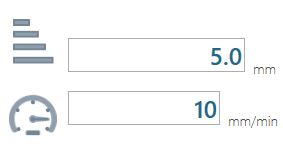 | Exit |
  | Pause after |
Change of cutting parameters
The previously described parameters for the disk, milling cutter and core drill can be changed if the user is authorized to use them.

To select the tool whose parameters are to be changed, press one of the buttons visible on the right side of the “Select tool” panel.
 | Change cutting parameters |
Pressing this button displays a window containing a saved parameter configuration for each available material. The results also depend on the selected machining type.
The “Change Cutting Parameters” window opens, similar to the following example image:

At the lower left of the “Change Cutting Parameters” panel there is an initially empty text bar used to apply a search filter.
The button to the right of the bar is enabled only when text is present in the bar and a search filter is therefore applied. Pressing it clears the filter and empties the text bar.
Bottom bar
The bottom bar of the Slab Parameters panel appears similar to this:

This bar consists of the following elements:
 | Disk preview |
Milling cutter/hole preview | |
 | Tool Panel |
This panel provides access to certain manual machine controls.

Buttons
0_ - 90_ | |
 | Parking |
 | SLAB PROBING |
 | CRF cycle |
 | Washing cycle |
 | Internal water ON/OFF |
 | Water ON/OFF |
Slab probing cycle
The probing cycle calculates the slab thickness and acquires the workbench position using the dedicated probe mounted on the machine.
To start it, enable the button in the manual controls panel, then press a point inside the slab in the work area.
A symbol is displayed at the selected position, indicating where probing must be performed.

Once the machine has completed the cycle, a panel opens showing several measurements obtained by probing the slab.

This information includes:
Thickness | Measured slab thickness. |
Bench quote | Workbench position. |
Slab quote | Position measured at the upper surface of the material placed on the workbench. |
The data collected by the probing cycle can be saved using the buttons below:
 | Set slab thickness |
 | Set bench quote |
Probing Start |
CRF (Flange Rotation Center) measurement cycle
The CRF cycle measures the distance between the inner edge of the tooth of the disk currently mounted on the machine and the C rotation axis.
To start it, enable the button in the manual controls panel, then press a point inside the slab in the work area.
A symbol is displayed at the selected position, indicating where the disk cuts used to measure the CRF must be performed.
During this cycle, cuts are made in the material.
The operator is therefore advised to pay attention to the slab position where the cycle is started to avoid damaging it.

The machine performs two parallel cuts with the A axis at 0_: the first with the C axis at 0_, the second with the C axis at 180_.
At the end of the procedure, the operator is asked to measure, using a tape measure or caliper, the internal distance between the two cuts on the slab.
This measurement must then be entered in field “A” of the panel that opens at the end of the cycle.

The measurements taken must be entered in the dedicated field:
To | Internal distance between the two cuts made on the slab during the cycle. |
CRF (A/2) | Flange Rotation Center measurement for the disk. It is calculated as half the internal distance between the two cuts on the slab. |
The data collected by the CRF measurement cycle can be saved using the following button:
 | Set CRF Measure |
This panel allows laser references to be added to or removed from the work area.

Buttons
 | Line-laser reference |
 | Draw cross laser |
 | Delete all drawings |
Delete a single drawing |
Line laser
The line laser is a device aligned with the disk mounted on the machine. It is used to collect information relating to the position and orientation of the disk on the workbench.

To acquire the reference, move the machine to the desired point and press the button to detect the line-laser direction and add the reference to the work area.
Using multiple references, the perimeter and position of the slab or a piece on the workbench can be identified.

Cross laser
The cross laser is used to collect information relating to the position of the laser pointer on the workbench.

To acquire the reference, move the machine to the desired point and press the button to detect the cross-laser position and add the reference to the work area.
Using multiple references, the perimeter and position of the slab or a piece on the workbench can be identified.

This function allows a photo to be added to the work area.
If Parametrix is connected to a camera device, a photo of the slab on the workbench is taken.
Otherwise, the user is asked to select a photo from the computer files.
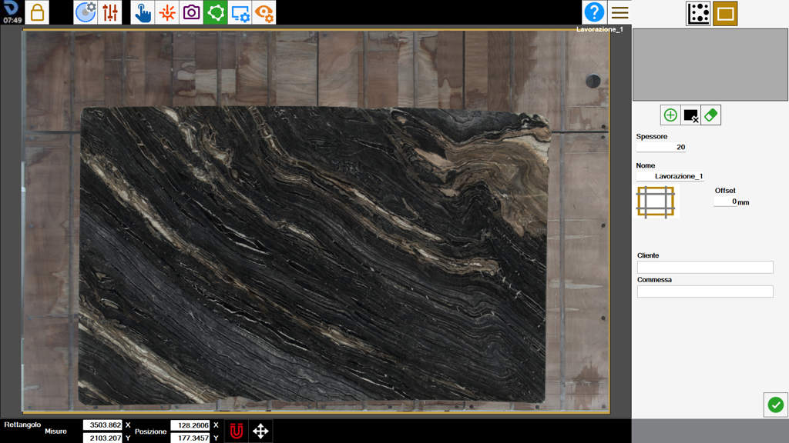
Take a photo
Generally, this function allows a photo of the machine workbench to be taken using the built-in camera device.
Pressing the button opens a window asking for the thickness of the slab that is about to be captured.

The photo is taken and then the panel opens allowing the operator to define the slab perimeter.
Choose a photo from computer files
This mode allows computers not connected to a camera device, usually located in an office, to insert photos from files into the program.
Pressing the button opens File Explorer so that a file can be selected for loading.

The user is then taken to the slab perimeter selection panel.
Perimeter selection
After selecting or taking the photo, this screen appears and the operator must define a perimeter within which pieces can be positioned.

Once the perimeter is confirmed, the slab photo is added to the Parametrix work area.

The program must know the edge of the slab to be machined in order to operate. This function allows the perimeter to be traced.

Perimeter creation mode
The program allows the operator to draw the perimeter using one of the following modes:
 | Rectangle mode |
 | Point mode |
At any time while creating the perimeter, it is possible to switch from one mode to the other.
When switching from “point” mode to “rectangle” mode, the perimeter is converted into a rectangle and all polygon vertices are lost.
Confirmation is requested before proceeding with this operation.
Rectangle
This mode allows rectangular perimeters to be created.
To change the size and position of the rectangle, drag the yellow circles in the work area or edit the values shown in the bar below.

Measures | Perimeter dimensions along the X axis and Y axis. |
Location | Coordinates of the lower-left vertex of the rectangle relative to the lower-left vertex of the workbench. |
For points
This mode allows arbitrary polygonal shapes to be created.
To do this, the operator can place the points forming the perimeter at the desired positions as shown in the figure below.

In this mode, the perimeter can be managed using the following buttons:
 | Close perimeter |
 | Remove last point |
Once closed, the perimeter turns blue and its vertices are indicated by yellow circles.
Both during creation and when a closed perimeter is present, the vertices can always be moved in the work area to improve accuracy.
Bottom bar
The operator can interact with a perimeter in the work area using the buttons in the lower section of the screen.
 | Snap to cross laser |
 | Move perimeter |
Create a new perimeter
The program allows more than one perimeter to be created on which pieces can be arranged for machining.
It is also possible to define slab areas in which no piece may be placed.
 | Perimeter |
 | Avoid area |
 | Delete perimeter |
Created perimeters are visible in the list at the top right. To edit a perimeter, simply select it in the work area or select the corresponding item in the list.
The currently selected perimeter has blue outlines and yellow vertices, while the others can also be distinguished by color: green for slab perimeters and orange for avoid areas.

This screen can be used to add stress-relief cuts to the slab.
 | Slab heading |
To complete perimeter creation, the operator is asked to enter some information about the machining operation to be performed.
Thickness | The operator must specify the thickness of the slab on the workbench. |
Name | Name to assign to the slab job. |
Customer | Specifies the name of the customer for whom the job is being performed. This field is optional. |
Job | Specifies an identifier for the job. This field is optional. |
Slab thickness and job name are mandatory fields that must be entered before confirming the perimeter.
By contrast, the additional-property information below does not have to be completed.
Avoid areas
Avoid areas are zones of the slab that the operator does not want to make available for positioning pieces.
Reasons may include breaks in the material, unattractive veins, or the need to preserve certain parts of the slab.
They are represented as blue areas within the work area.

When the Nesting function is used, the pieces are arranged so that none of these areas is occupied.
Slab heading is a function that adds stress-relief cuts to the machining operation. These cuts trim the slab along its edges.
The function can be enabled in the perimeter creation panel.
The following example screen contains a diagram showing the four cuts, one per side, that can be inserted.
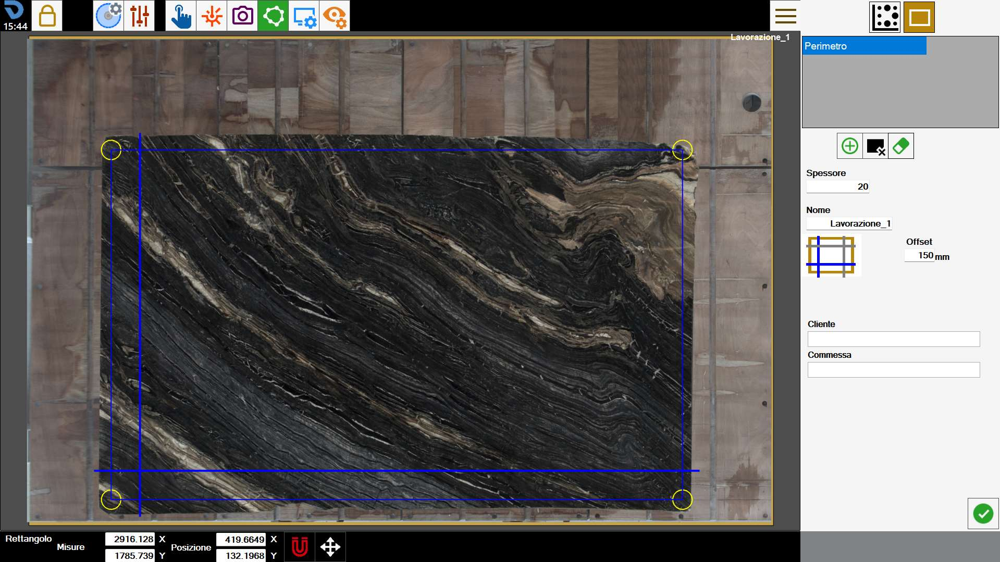
Sidebar
 | Slab heading |
Only slabs with a rectangular perimeter can be headed. The function does not work in “point” mode.
Multiple perimeters can also be headed differently.
Executing the machining operation
In the work area, the program checks that the operator does not position pieces outside the slab heading.
Pieces can also be snapped to these cuts, as shown in the figure.

During execution of the cutting program, the machine performs these trimming cuts before any other operation. Immediately afterward, a heading pause is performed to give the operator time to remove the discarded slab material.
In this way, subsequent slab movement operations using suction cups can be performed without interference from these trimming cuts.
These operations can also be seen in the list on the cut management and optimization screen.

With this function, Parametrix can automatically determine the perimeter of a photographed slab.
/0.03.png)
Buttons
Automatic perimeter |
How to use automatic perimeter
To use this function, take a photo of a slab on the workbench or load an image from the computer.
The operator is then taken to the perimeter management panel.
/0.00.png)
In the right-hand section, press the button to calculate the automatic perimeter.
When the operation is complete, the vertices of the calculated perimeter can be adjusted manually if they are not sufficiently accurate.
/0.04.png)
The operator can integrate the photo system with different formats, for example Mapascan.

Execution
In addition to the image, additional files are often provided containing useful information relating to the slab, such as thickness, perimeter and other relevant geometric or physical data.

When the photo is opened, the data are analyzed to correctly set the perimeter, avoid areas and thickness:
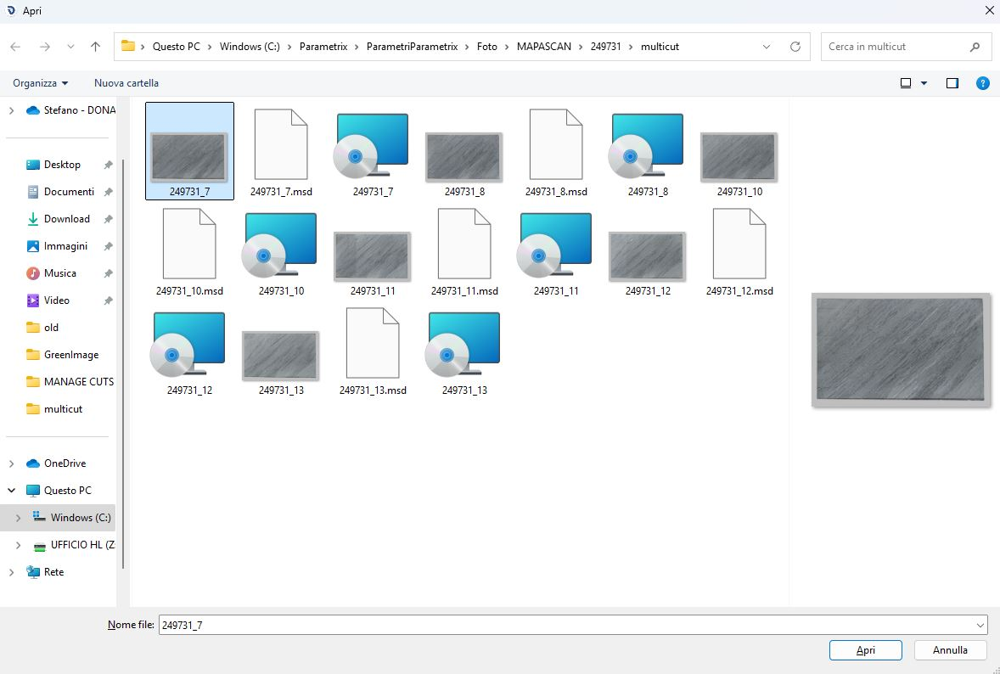
Parametrix can read this file and import the slab photo, perimeter and slab thickness.
Multiple integration
When multiple integrations are configured, the one to use can be selected dynamically at execution time.

This function opens a small panel with tools for resizing the work area.

Buttons
 | Ruler |
 | Zoom _ |
 | Zoom - |
 | Reset zoom |
 | Window zoom |
 | Pan view |
 | Show / Hide background color |
 | Show / Hide piece names |
 | Show / Hide right angles |
Ruler
To use this function, the operator must indicate two points in the work area. They are represented by two yellow crosses.

A small panel appears below the ruler button showing the distance between the two points.

Horizontal | Horizontal distance between the first and second points. |
Vertical | Vertical distance between the first and second points. |
Total | Total distance between the first and second points. |
X | Real-time horizontal mouse position. |
Y | Real-time vertical mouse position. |
This function opens a small panel with display tools.

Buttons
 | Show / Hide cuts |
Show / Hide holes | |
 | Show / Hide milling |
 | Show / Hide rims |
 | Show / Hide arrows |
Show / Hide Dynamic Tags | |
Highlight perimeter |
Parametrix is designed to machine flat, closed geometric shapes representing pieces.

Piece creation modes
As can be seen from the top navigation bar,

pieces are created using one of the following modes:
 | Import DXF file |
 | Create rectangles |
 | Create parametric shapes |
 | Import CSV file |
 | History |
 | Favorites |
 | Create commercial pieces |
A more detailed description of how each mode works is provided in the corresponding paragraph of this chapter.
The selected function is highlighted in light green. When the “Create Pieces” panel is opened, the operator finds “Create rectangles” mode selected.
Import pieces into Parametrix
To correctly complete creation of one or more pieces, use the following button, which is available in every section of the panel:
 | Import pieces |
The operation of the piece list, located on the right side of the panel, is explained in the relevant chapter.
The following image shows how, after pressing the “Import pieces” button, the piece list is populated with the elements contained in the DXF file selected for import.

Imported piece list
The piece list displayed on the right side of the “Create Pieces” panel is initially empty. It is populated as pieces are created using the functions described earlier in this chapter.
Below is an example of an empty piece list (left) and a populated list (right):
 |  |
Advanced piece properties
From the previous example images, a single button can be seen in the upper-right corner of the list of pieces to be machined:
 | Show Advanced Piece Information |
|---|

Two buttons are located at the bottom of the Piece window and are described below:
 | Copy |
 | Paste |
View piece details
Following the example of the populated list shown on the right at the beginning of the chapter, the behavior of the following button is now highlighted:
 | Show piece details |
After pressing the button, the piece in the list appears as follows:

Add selected piece to favorites
Any piece can be added to the dedicated favorites section using the following button:
 | Add favorite |
Pressing this button displays the following pop-up:

Completing the text field and then confirming allows the operator to add the selected piece to the previously described favorites list.

Find source DXF
The source DXF folder can be located using the following button:
 | Find Piece |
If Parametrix correctly locates the source DXF file after this button is pressed, a File Explorer window similar to the following opens:

In this section, pieces can be created by importing DXF files.

File list
On the left side of the window, a list shows all folders and DXF files contained in the currently selected path.

The item at the top of the list

allows you to return to the parent folder of the current folder.
Initially, the list of DXF files in the PC working folder is shown. The folder can be changed using the dedicated buttons to the right of the file list.
 | USB memory |
 | Working folder |
 | Browse folders |
 | Delete file |
Sort and filter displayed files
The elements below the list manage the application of filters and sorting of the displayed files.

At the top of the image there is a search bar that can be used to filter files by name, displaying only those containing the entered text.
This section of the screen also contains the following buttons:
 | Clear filter |
 | Sort by date |
 | Sort by name |
Search by name applies only to files contained in the folder and not to any subfolders.
By contrast, sorting by name and by date applies to every item in the list, while always showing folders before files.
Preview
When a file is selected, a preview of the drawing is displayed in the panel at the center of the screen so that its contents can be identified immediately.

The preview can be manipulated either by dragging its contents or by using the buttons to its right.
 | Zoom in |
 | Decrease zoom |
 | Restore view |
Additional buttons
The following buttons also allow additional actions to be performed.
 | Panel Details |
Panel Details
If a file has been selected, the “Details Panel” can be opened to view the DXF properties. This is done using the following button to the right of the preview:
Once opened, the following panel is displayed in addition to the list of pieces making up the selected DXF:
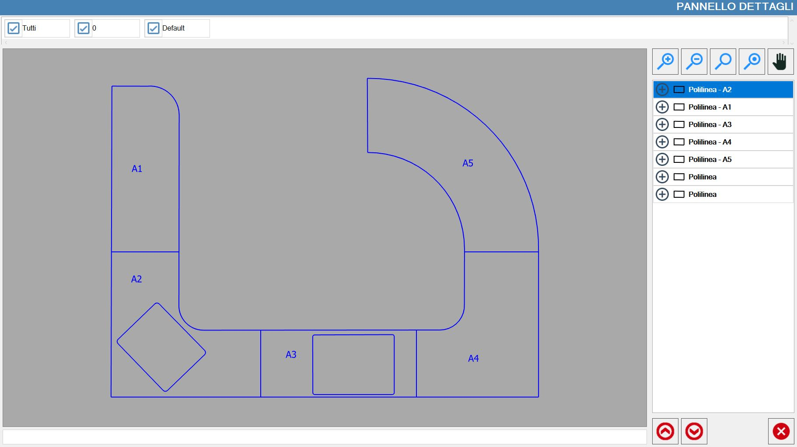
Layout visibility management
At the top of this panel, the layouts are shown as checkboxes that can be enabled or disabled as desired:
The first item in this layout list enables or disables display of all layouts.
Side panel
Visibility and padding buttons
In addition to the previously shown buttons for changing the zoom level and restoring it, there are two new buttons:

 | Highlight selected piece |
 | Pan view |
Polyline list
On the center-right side of the panel, the pieces making up the selected DXF are shown as polylines.
Selecting one of the values in the list highlights the corresponding piece visible in the preview in yellow.

When the button next to each piece is pressed, the list of polylines making up the piece becomes visible.
A single DXF polyline can also be highlighted simply by selecting its corresponding row in the list:
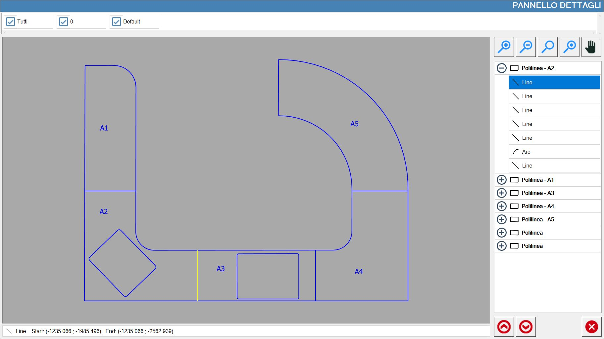
Bottom buttons
These buttons are located at the bottom of the side bar.
 | Find previous open polyline |
 | Find previous open polyline |
In the following example, the Details Panel has been opened for a DXF containing some pieces made up of open polylines, shown in red in the list:
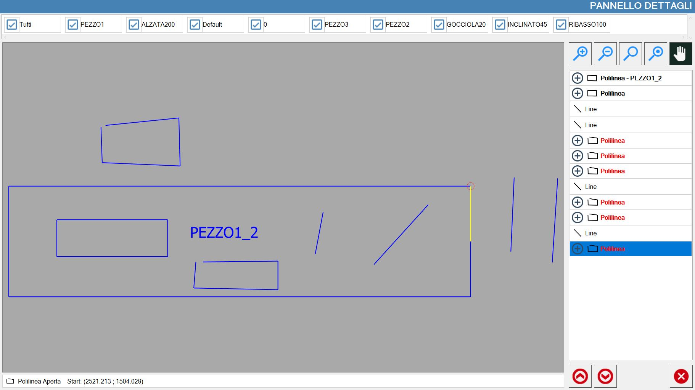
Rectangular pieces can be created by entering width and height dimensions and placing them in the list of pieces to be machined.
The program also allows an identifying mark (or label) to be associated with each piece and the number of repetitions of rectangles with the same dimensions to be set.

Parameter description
The following data are required to create rectangular pieces:
 | Number of pieces |
 | Width |
 | height |
 | Mark |
Additional buttons
The following side buttons also allow additional actions to be performed.
 | Single import |
 | Dynamic Tag Top |
To enable the function associated with each button, press it. It is then highlighted in light green.
In this section, pieces can be constructed using parametric shapes with predefined geometry. To draw a shape, simply enter the values that define it.
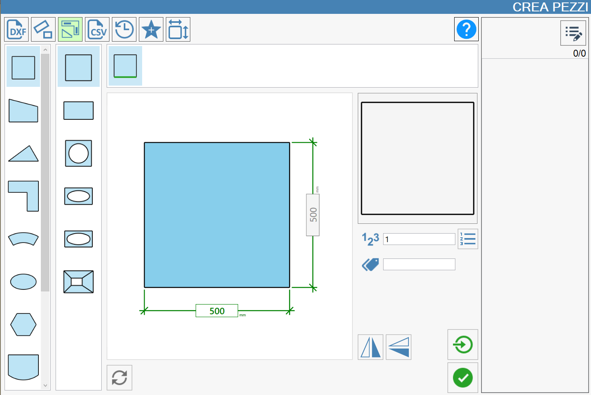
Parametric shape categories
Referring to the image above, the main categories of parametric shapes are shown in the left-hand column.
 | Rectangular shapes |
 | Quadrilaterals |
 | Triangular shapes |
Kitchen countertops | |
 | Sector-type shapes |
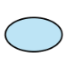 | Elliptical shapes |
 | Polygonal shapes |
 | Bathrooms |
 | Stone or memorial shapes |
 | Tables |
 | Special shapes |
Preview and parameterized values
Depending on the selected category, the next column to the right displays the available shape selection.
An image in the center of the screen provides detailed guidance on the dimensions to be entered. To the right of the reference image, a preview of the shape being drawn is displayed and updates in real time whenever the values defining the shape are changed.
As in the previous paragraphs, once the dimensions have been entered, the mark (or label) displayed on the piece when it is inserted in the work area can be entered, the number of copies of the piece can be set, and single import can be selected.
The following image shows an example of creating a kitchen countertop.

Creating internal breaks
To create internal breaks, press one of the internal rectangles in the central image; the window shown below opens, where the break can be modified as desired and then inserted into the original image.

Additional settings
Additional parameters
The following data are required to create rectangular pieces:
 | Number of pieces |
 | Mark |
Additional buttons
 | Single import |
 | Mirror |
Reset |
Out-of-square piece bar
Some pieces can be created using non-square angles (i.e. angles other than 90 degrees).
To use this option, a bar located above the central image contains all available modification versions for that image. Editable parameters are shown in green.
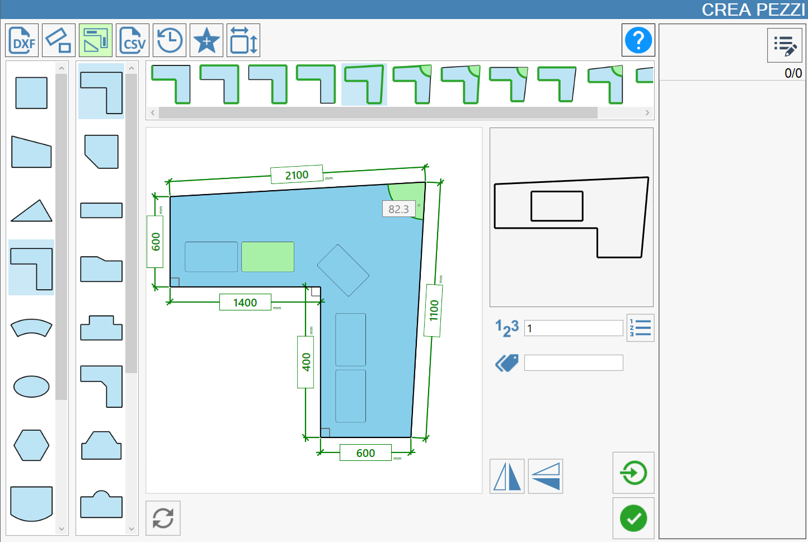
Mirror
Using the two dedicated buttons, the result displayed on screen can be flipped along the vertical or horizontal axis respectively. This function adapts the display to operating requirements or the type of machining in progress.
Some examples of horizontal and vertical flipping are shown below:
Horizontal flip only | Vertical flip only | Horizontal and Vertical flip |
 |  |  |
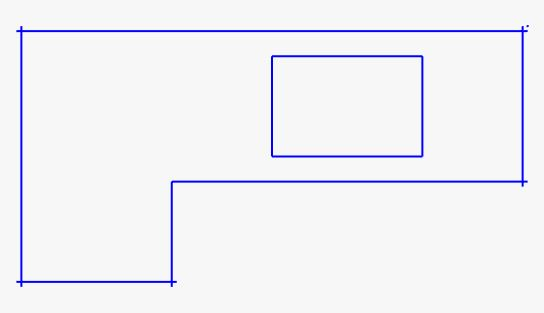 | 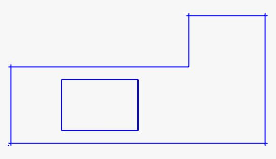 |  |
This section allows the operator to import pieces from CSV files.
/schermata_pulita_eng-20250321-091704.png)
Preview
The list on the left of this section shows all CSV files in the currently selected path.
Selecting an item from the CSV file list updates the preview in the central part of this section.
The following example shows the preview update after selecting the first item in the list:
/schermata_bagno_eng-20250321-092252.png)
Bounding multipliers
The dimensions of the pieces in the selected CSV file can be multiplied by 10, 100 or 1000.
The following image shows the three available multipliers:
/pulsanti_moltiplicatore-20250320-154918.png)
The following image updates the example shown in the “Preview” chapter, where the “Width”, “height” and “thickness” values change after pressing the second bounding multiplier button “X 100”:
/image-20250325-132949.png)
This example also highlights how, after it is clicked, the “X 100” button is updated by changing its background color to light green.
Sorting
The sorting function populates the sorting list based on the fields in the selected CSV file and allows the operator, if desired, to apply an alphabetical or reverse-alphabetical filter based on one of the fields provided in the selected file.
This function allows the operator to retrieve the history of created pieces.
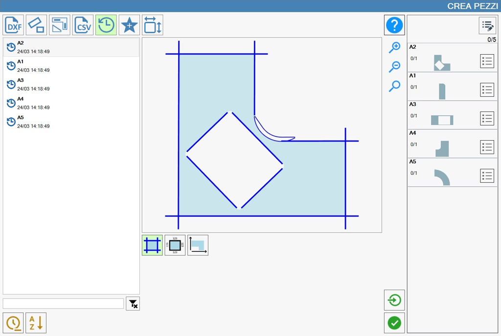
Piece view types in history
Three different display modes are available for pieces in this section:

 | Cut view |
 | Dimension view |
 | Bounding view |
For the following examples, five pieces (A1, A2, A3, A4 and A5) were imported from the DXF named “Kitchen_Curve”.
Regardless of the selected view, all pieces can always be viewed both in the history list on the left and in the list of currently imported pieces on the right.
Cut view
The cut view highlights all cuts, both perimeter cuts and cuts inside the piece, while hiding other information such as their length values.

Cut-dimension view
The cut-dimension view highlights the external perimeter in black and places the corresponding length near the center of each cut on the perimeter.

Bounding view
The bounding view does not highlight any cut; instead it shows the maximum dimensions of the piece in terms of width and length.
In the following image, two black lines can be seen with the maximum piece length and width values centered on them. It is important to note that only by coincidence do the sides of piece A2 coincide with the black lines; the remaining cuts of the piece are not highlighted and show no information.
The Favorites screen can be used to import into Parametrix pieces previously saved as favorites.

Add a piece to favorites
Any piece can be added to the Favorites section using the following button:
 | Add favorite |
Pressing this button displays the following pop-up:

Completing the text field and then confirming allows the operator to add the selected piece to the previously described favorites list.

Piece view types in history
Three different display modes are available for pieces in this section:
 | Cut view |
 | Dimension view |
 | Bounding view |
Commercial pieces can be created in this section of the “Create Pieces” panel. This type of piece has the following characteristics:
they are created with a high number of copies;
their width and height can be changed even after a piece is inserted into the work zone.

Parameters
 | Width |
 | height |
Mark |
Import a commercial piece
To correctly complete creation of a commercial piece, use the following button:
 | Import commercial pieces |
The creation procedure also updates both the commercial-piece list on the left and the list of pieces to be machined on the right. The following example shows both updated lists:

As can be seen in the column on the left side of the screen, a green icon precedes the piece name. Clicking this icon turns it red and removes the piece from the list on the right.

When one or more pieces are created and imported into Parametrix, the program adds them to the piece list located in the right-hand section of the main screen.
Using the piece list, the operator can:
Insert pieces into the work area;
Keep track of machined pieces and pieces still to be machined;
Apply certain changes to the pieces.

List elements
Each row in the list represents a piece that has been imported into Parametrix.
As shown in this image, a row contains the following information about the piece:
Shape preview | Simplified representation of the piece geometry. |
Piece mark | Label added to the piece to identify it. |
Number of inserted and total pieces | Indicates the number of pieces in that row that have been inserted into the work area and the total number of pieces of that type that can be inserted. |
Insert pieces into the work area
To insert pieces into the work area, use the following button found on each row of the list:
 | Insert pieces into the work area |
The selected piece has been positioned in the work area and the number of inserted pieces in this row has been updated.

Once the maximum number is reached, the “Insert pieces” button for that row disappears because all pieces in that row have been machined.
Operations on pieces in the list
The buttons below the list allow the list items to be managed. In particular:
 | Clear piece list |
 | Hide/Show commercial pieces |
 | Delete piece |
 | Filter/Sort pieces |
 | Additional piece properties |
Delete piece
This function allows pieces to be deleted from the list individually. After the button is pressed, the program asks the user to select the row to be deleted by replacing the arrow used to insert pieces into the work area with an eraser.

Pressing this button deletes the corresponding row and therefore all the pieces it represents.
This function allows the operator to filter and/or sort the pieces in the list.
Pressing the button opens the following window.

Filtered piece list
Once criteria for filtering or sorting the pieces have been set, they can be applied using the button at the top right.
 | Activate/Deactivate |
Pieces that do not meet the selected filter criteria are not shown in the piece list.
In the following example, only pieces with a height greater than 600 mm are to be shown and arranged in ascending alphabetical order.
Before applying the filter and sorting | After applying the filter and sorting |
The filter and sorting function does not work with commercial pieces.
Filter and sorting criteria are also observed by the Nesting function.
Filter pieces
In the upper section of this window, the operator can choose to add a filter based on various piece characteristics.

As shown, the following buttons are available.
  | “Exclusion” filter application mode |
Add Filter | |
 | Delete filters |
How to create a filter
To create a filter, select the property to use from the options in the first drop-down menu on the left.

Once the discriminating characteristic has been selected, choose a relational operator from the second menu.

Then enter a value suitable for the property in the adjacent box to create a logical condition.
At this point, use the button to the right of the text box to decide how the filter being created interacts with other filters in the list, if any.
In “Exclusion” mode, a piece must
simultaneously
satisfy the logical condition being created and the result of the previous conditions.
In “Inclusion” mode, a piece must satisfy the condition being created
or
the result of the previous conditions.
To complete filter creation, use the last button on this row. The filter is added to the list below.

Sort pieces
In the lower section of the window, the operator can choose to sort pieces based on certain properties.

After selecting an item from the drop-down menu, the following actions can be performed:
 | Ascending/Descending Sorting |
 | Delete sorting |
Multiple sorting (Optional)
This function makes it possible to sort pieces in the list using more than one criterion.

In this mode, sorting criteria can be added using the following buttons:
 | Add sorting criterion |
 | Change position |
The criteria in this list are applied from top to bottom.
This means that pieces are sorted by the first criterion. If two or more pieces have the same value for the property linked to the first criterion, they are sorted by the next criterion, and so on for each criterion in the list.
The following image shows an example of multiple sorting.

This function edits the additional properties of a piece. These are pieces of information about the piece that can be displayed in various parts of the program and are also transferred to the ISO file generated for the machine.
Pressing the button and then the desired row in the piece list opens the following window.

Property configuration
The central part of the panel lists the additional properties that can be assigned to a piece.
The fields that appear in this window can be customized with the assistance of a Donatoni technician.
Buttons
The two buttons described below are located at the bottom of the window:
 | Copy |
Paste |
When confirmed, this information is associated with all pieces linked to the selected list row.
This panel allows the operator to apply different types of machining operations to a designated piece.
When opened, the following screen is displayed:

Some of the functions described in this section are also available on the main Parametrix page, but with one difference.
If a piece or cut is edited through the ‘Edit Piece’ panel, all pieces in the selected row are modified accordingly with the same machining operations.
By contrast, if the machining operation is set from the work area, only the selected piece is modified.
Machining types
Using the “Edit Piece” panel, one or more of the following machining operations can be applied; each is described individually below. In particular, Parametrix allows you to:
 | Miter Cut |  | Drip system |
 | Add |  | Delete |
 | Offset |  | Hole |
 | Milling | Rim | |
Lower Cut - (Optional) |  | Downstand | |
 | Curbs |  | Surface - (Optional) |
| Leveling - (Optional) |  | Channel - (Optional) |
 | Fillet |  | Crop |
Internal break |  | Drain board flutes | |
MaxBound - (Optional) |  | Mirror |
Cut list
The piece cuts are displayed in the lower-left section of this panel.
A dedicated division indicates whether a cut belongs to the external perimeter or to one of the internal perimeters. This classification allows the list of cuts belonging to a polygon to be shown/hidden by pressing the icon of the corresponding section.

As shown in the image, each row displays certain information about the cut it represents. In particular:
 | Manage machining operation |
Cut information
| |
 | Machining information
|
This information changes according to the cut type it describes. Not all information is always shown.
For example, for holes only the penetration into the material can be displayed.
Preview
The main area of the "Edit Piece" function provides the operator with a complete preview of the selected piece, showing all machining operations currently applied.

The displayed piece can be manipulated simply by moving the preview or using the zoom buttons located to its right.
In addition, this section contains other functions described below.
 | Mark |
 | Number of pieces |
 | Add favorite |
Cut selection
The operator can select a cut directly from the preview; its color changes to yellow to confirm selection. Alternatively, the corresponding row can be selected in the cut list available in the lower-left menu.
Clicking the green dot to the left of each list item disables the corresponding cut.
In this case, the dot turns red and the piece preview is updated, with the disabled cut changing to gray.
In the following example, the first two cuts of the external polygon of the piece have been disabled:

Bottom bar
This bar provides several functions that simplify use of the Edit Piece machining operations:

 | Cuts |
 | Sides |
 | History |
 | Undo |
 | Edit view |
History
Displays all changes applied to the current piece and, if necessary, allows the current piece to be restored to a previous state.
If changes have been applied to the current piece, they are displayed in the list on the left:
The left menu displays the processing states of the piece.
Machining state
|
The state of the current piece with no changes is called "Default".
Selecting an item from the left menu displays the preview corresponding to the time the machining operation was applied.

Pressing the confirm button restores the piece to the selected state. Changes made after the selected state are removed.
At the bottom of the panel there are three utility buttons for displaying the piece in the preview:
Show cuts | |
 | Show dimensions |
 | Show angle |
Edit View
This mode provides the operator with several buttons visible only while “edit view” is enabled.

Each of the following buttons enables or disables one of the following piece elements:
 | Cuts |
 | Holes |
 | Milling operations |
Rims | |
 | Arrows on cuts |
 | Piece name |
 | Dynamic Tags |
 | Highlight Perimeter |
The ‘Inclination’ function defines a machining operation with the A axis different from 0.
The interface for the “Miter Cut” machining type resembles the following image:
Mode
 | Positive square direction |
 | Negative square direction |
Parameters
Degrees | Represents the angle formed between the direction of the mounted tool and the surface of the material to be machined. |
Executing the machining operation
The machining operation can be applied by pressing the button to the left of the appropriate cut in the polygon list.
A red icon with an 'X' indicates that the machining operation cannot be applied to the desired cut.
Once the square direction has been selected, enter the desired value alongside it and select the cut on which the miter cut is to be set.
Applying the machining operation displays the miter cut in a different color.
Two distinct results can be obtained depending on the selected square direction:
Square direction: Positive
In the following example image, a miter-cut operation (45.0_) with positive square direction has been applied to every side except the internal arc, because the tool cannot be inclined inside the perimeter.

Square direction: Negative
In the example image shown, the miter-cut operations (45.0_) with negative square direction have been applied to the piece cuts in the opposite way to the configuration shown in the previous paragraph

This function adds a cut with characteristics different from a normal cut.
The interface that opens resembles the following image:

Parameters
The cut width can be set (it must be equal to or greater than the disk thickness).
Distance from cut | Distance from the selected cut to the drip-system machining operation. |
Cut thickness | This is the width of the machining operation. A Drip System can be wider than the disk thickness. |
Depth cutting | This is the plunge depth into the material. |
Start Distance | The inward distance at which the machining operation is created relative to the start of the cut. |
End Distance | The inward distance at which the machining operation is created relative to the end of the cut. |
Start Distance and End Distance can be enabled or disabled using the buttons to the right of the value.
When disabled, Parametrix ignores them; when enabled, the program calculates the displacement.
Start Distance and End Distance
These parameters can be enabled or disabled using the buttons to the right of the value. When they are gray (off), Parametrix ignores them; when they are green (on - as shown), the program calculates the displacement.

Executing the machining operation
The machining operation can be applied by pressing the button to the left of the appropriate cut in the polygon list.
A red icon with an 'X' indicates that the machining operation cannot be applied to the desired cut.
Based on the set machining parameters, a drip system is inserted parallel to the cut of the selected piece.

The following image shows a drip-system machining operation created using the same parameters as the previous example.

In both examples, the machining operation was applied to the lower cut.
In addition, it was added to the 'Added Machining Operations' list located at the lower left of the 'Edit Piece' panel.
This function can be used to add a cut parallel to an existing cut at the desired distance.
This machining operation can be applied to both linear cuts and curved arcs.

Parameters
To add a cut, the following parameter must be set:
Distance | Distance from the selected cut at which to add the parallel cut. |
Executing the machining operation
The machining operation can be applied by pressing the button to the left of the appropriate cut in the polygon list.
A red icon with an 'X' indicates that the machining operation cannot be applied to the desired cut.
Once the distance parameter has been set, select the cut relative to which the new cut is to be created.
The direction in which to add the new cut is calculated so as not to damage the piece: outward if an element of the external polygon is selected, or inward if an internal polygon is selected.
If the distance value is negative, the added cut is calculated in the direction opposite to the intended movement direction.
The following image shows the result of adding two cuts by selecting the two straight lines that define the recess in the kitchen countertop.

As shown, the new parallel cut is inserted in the Added Machining Operations section and reproduces the characteristics of the selected cut, such as direction and machining type.
Button for adding a cut at concave corners
Concave cuts |
|---|

The ‘Delete’ function allows one or more cuts on the shape to be deleted.
The interface for this function resembles the following image:

Executing the machining operation
The machining operation can be applied by pressing the button to the left of the appropriate cut in the polygon list.
A red icon with an 'X' indicates that the machining operation cannot be applied to the desired cut.
Once one of the cuts has been deleted, the following changes are visible:

When all cuts are removed from the added-machining list, the list itself is automatically deleted.
Deleting a cut from the polygon produces a result similar to that shown in the following image:

This function widens the piece by moving parallel to the selected cut.
The following image shows the function interface using a sample piece for demonstration purposes.
Parameters
Offset | Allows the piece to be widened by moving it parallel to the selected cut. |
Executing the machining operation
The machining operation can be applied by pressing the button to the left of the appropriate cut in the polygon list.
A red icon with an 'X' indicates that the machining operation cannot be applied to the desired cut.
The image below shows the piece after adding an offset using the left side cut of the internal polygon as reference.
Once performed, this machining operation does not add or remove cuts from the list; it only updates the parameters of the cuts involved according to the changes made.
This page can be used to create a single hole at a specific position or a series of holes at a fixed distance.

Machining types
To use this machining operation, first choose one of the two available modes by selecting the corresponding button:
The 'Hole in the material' and 'Remove Disk's Material' modes are mutually exclusive: enabling one automatically disables the other.
 | Hole in the material |
 | Remove Disk's Material |
Hole in the material
When this machining mode is selected, the currently selected vertex is highlighted in orange and a preview of the hole to be added is projected from it, also shown in orange and generated according to the set parameters.

Parameters
Penetration | Indicates the depth to be reached by the machining operation. |
Distance X axis | Distance along the X axis from the starting point of the selected cut at which the hole is created. |
Distance Y axis | Distance along the Y axis from the starting point of the selected cut at which the hole is created. |
Relative to the selected point, the area to the right of the circle is considered positive for X and the area above the circle positive for Y, as shown in the figure.

Executing Hole in the material
The machining operation can be applied by pressing the button to the left of the appropriate cut in the polygon list.
A red icon with an 'X' indicates that the machining operation cannot be applied to the desired cut.
Once a vertex has been selected and the distance and penetration parameters set, the machining operation can be confirmed by pressing the green OK button.
Each hole successfully inserted in the material updates the preview and is automatically inserted in the 'Added Machining Operations' section on the left:
Unlike Remove Disk's Material, however, the center points of arcs can also be selected; these are highlighted in the preview together with all other valid reference points for inserting holes in the material.
Remove Disk's Material
When this mode is enabled, the selected vertex becomes the origin point of an orange preview consisting of multiple holes; their size depends on the mounted core drill and their number is determined by the Hole distance parameter.

Remove Disk's Material parameters
Penetration | Indicates the depth to be reached by the machining operation. |
Automatic holes distance | Determines the distance between the hole origin points. |
Executing Remove Disk's Material
The machining operation can be applied by pressing the button to the left of the appropriate cut in the polygon list.
A red icon with an 'X' indicates that the machining operation cannot be applied to the desired cut.
Remove Disk's Material mode can be used between two consecutive cuts, regardless of whether both are straight lines, both curves, or one of each type.

The hole is added to the internal-polygon list and identifies the disk-material removal machining operation.
An example of Remove Disk's Material applied to two adjacent sides of the internal polygon is shown below:

Buttons available in Remove Disk's Material mode
 | Concave holes |
|---|---|
Holes number |
The ‘Milling’ function creates a milling operation on the piece, on a side, on an edge, or around the entire perimeter.
The interface for this function resembles the following image:
Parameters
Corner | Removes material that the disk cannot remove without damaging the piece. It is used only to finish certain points of the piece. |
Side | The milling cutter is used to cut one side of the piece. It does not run alongside the disk cut but replaces it completely. |
Perimeter | Uses the milling cutter instead of the disk to perform the cut around an entire polygon of the piece. It replaces the disk as in Side mode. |
In every mode, the cut thickness is equal to the diameter of the mounted milling cutter. Changing this element automatically updates the cuts with the new dimension.
In Vertex mode, changing the material thickness or disk diameter causes the cut to be extended or shortened to adapt to the newly selected dimensions.
If the milling cutter is too large to cut the selected side, an error message is displayed.
Thickness | The slab thickness currently set in Parametrix is shown to help the operator apply the machining operation. |
 | Penetration |
 | Milling on internal corners |
Executing the machining operation
The machining operation can be applied by pressing the button to the left of the appropriate cut in the polygon list.
A red icon with an 'X' indicates that the machining operation cannot be applied to the desired cut.
The effects of applying a milling operation vary according to the selected mode and have certain differences, described in the following paragraphs.
Milling starts from the approach point shown in the figure, identifiable by the filled colored circle positioned at the origin.
Each milling operation applied to a piece is inserted in the cut list associated with a polygon and represented graphically in light blue.
In Vertex mode, the milling operation is aligned with the selected vertex.
In Side and Perimeter modes, respectively one or all cuts of the polygon are replaced.
Execution on a vertex
The milling operation is applied to the vertex closest to the selected point of a cut in the preview.
It is applied between two consecutive cuts.
The following example image shows two vertex-milling operations: the first on an upper-left vertex of the internal polygon, the second on a vertex of the external polygon.

Execution on a side
Selecting any point of a cut in the preview applies the milling operation along the entire corresponding side.
The following image shows two side-milling operations: the first on the left side of the internal polygon, the second on a lower side of the external polygon.

Execution on the perimeter
Regardless of the selected point or cut, the milling operation is performed along the entire perimeter of the selected polygon.

The ‘Rim’ function adds a profile to the upper edge of the piece or kitchen countertop.
It is mainly used to lower internal cutouts in kitchen countertops by a certain amount so that a sink can be fitted.
The tool used for this machining operation is the Milling Cutter.
The interface for this function resembles the following image:

Parameters
Plunge | The depth at which the cut is performed. |
Distance | Specifies the desired distance relative to the side of the piece. Positive, negative and zero values are permitted.
|
Executing the machining operation
The machining operation can be applied by pressing the button to the left of the appropriate cut in the polygon list.
A red icon with an 'X' indicates that the machining operation cannot be applied to the desired cut.
A rim is applied around the entire polygon of a selected cut, regardless of where it was selected.
Below is an example of a rim with a positive distance parameter value:

This function allows the operator to add a lower cut relative to a selected cut on the selected piece.
The interface for this function resembles the following image:
/2-20250630-123653.png)
Parameters
Distance from cut | Distance from the selected cut to the lower-cut machining operation. |
Depth cutting | This is the plunge depth into the material. |
Start Distance | The inward distance at which the machining operation is created relative to the start of the cut. |
End Distance | The inward distance at which the machining operation is created relative to the end of the cut. |
Start Distance and End Distance can be enabled or disabled using the buttons to the right of the value.
When disabled, Parametrix ignores them; when enabled, the program calculates the displacement.
Start Distance and End Distance
These parameters can be enabled or disabled using the buttons to the right of the value. When they are gray (off), Parametrix ignores them; when they are green (on - as shown), the program calculates the displacement.
/spiegazione_distanze_e_direzione_b-20250623-072340.png)
Executing the machining operation
The machining operation can be applied by pressing the button to the left of the appropriate cut in the polygon list.
A red icon with an 'X' indicates that the machining operation cannot be applied to the desired cut.
Based on the set machining parameters, a lower cut is inserted parallel to the cut of the selected piece.
/3-20250630-123927.png)
The following image shows a drip-system machining operation created using the same parameters as the previous example.
In both examples, the machining operation was applied to the lower straight cut.
In addition, it was added to the 'Added Machining Operations' list located at the lower left of the 'Edit Piece' panel.
This function creates a rectangular piece starting from the side of an object, thereby creating a downstand.

Machining types
To use this machining operation, first choose one of the two available modes by selecting the corresponding button:
 | Backsplash Mode |
 | Downstand Mode |
Parameters
height | Height of the downstand inserted during execution of the machining operation. |
Miter sides piece | If enabled, automatically inserts miter cuts where cuts would otherwise collide. |
Additional downstand-mode parameter
Degrees | This parameter is active only when Backsplash mode is selected. |
Executing the machining operation
The machining operation can be applied by pressing the button to the left of the appropriate cut in the polygon list.
A red icon with an 'X' indicates that the machining operation cannot be applied to the desired cut.
Clicking directly on the cut in the preview, or where possible on the icon to the left of the cut in the corresponding list on the left, executes the selected machining operation.
Each downstand or fillet successfully applied to the material updates the preview and the cut list on the left.
Each piece created with this function is added to the Parametrix piece list.
The new pieces are also added to a list located immediately above the preview in the ‘Edit Piece’ panel;

This list can be used to select the desired piece in the block and display its preview and corresponding cuts in the cut list.
Executing Backsplash
The application of two backsplashes is now shown with the “Miter piece sides” parameter enabled or disabled.
A 1000 mm-high backsplash is first applied to the lower side of the rectangle, followed by a second backsplash on its right side.
Miter piece sides disabled
No inclined sides appear in the resulting shape and the cuts of the original piece are not changed in the cut list:

Miter piece sides enabled
If the vertices of the new pieces, i.e. Piece_1 and Piece_2, are aligned, the sides sharing a vertex and not adjacent to the original piece are replaced with miter cuts:

Executing Downstand
The application of two downstands is now shown with the “Miter piece sides” parameter enabled or disabled.
A 50 mm-high downstand is first applied to the lower side of the rectangle, followed by a second downstand on its right side.
In this mode, the original piece (Piece) and each generated piece (Piece_1 and Piece_2) automatically have miter cuts applied to all sides that are adjacent to one another.
The inclination angle is determined by the degrees parameter.
Miter piece sides disabled
In this case, adjacent sides between the original piece and the newly created pieces are automatically replaced with miter cuts.
The cut inclination depends on the set Degrees parameter.

Miter piece sides enabled
As in the previous case, miter cuts are inserted on cuts adjacent to the various pieces, and the inclination depends on the value of the Degrees parameter.
In addition, when the “Miter piece sides” parameter is enabled, as with backsplashes, if the new pieces have aligned vertices, the sides sharing a vertex and not adjacent to the original piece are automatically replaced with miter cuts.

Splitting pieces
When one or more pieces have been associated with the selected piece through Downstand or Backsplash machining operations, a specific button for managing the associated pieces appears at the top of the “Edit Piece” panel.
 | Split pieces |
|---|
Before splitting, associated pieces are managed as a single unit within the work area. In this state, a block consisting of multiple elements is created; all undergo the same operations and have not yet been separated.
For example, when the original piece, a downstand or a backsplash is added to the work area from the piece list, all other associated elements are also inserted automatically.

When the Split Pieces button is pressed, each piece generated through downstand or backsplash is dissociated from the original piece and treated as an independent element.
Subsequently, both the associated-piece list previously visible above the preview in the Edit Piece panel and the piece-splitting button disappear from the interface.
At the time of splitting, each piece retains the miter cuts obtained when it was generated through a downstand or backsplash, as well as all customizations and changes made while it was still associated with the original piece.
The following image shows independent management of the individual pieces that previously belonged to the same block.
In particular, only two of the three pieces were inserted into the work area (the original piece and the first piece generated by applying the first downstand), and the second piece was repositioned and rotated without causing any interference with the original piece:

This function adds a chamfer edge profile or a lower chamfer (bullnose) or both to the cuts of the selected piece.
The interface for this function resembles the following image:

Parameters
To use this machining operation, first choose one of the three available modes by selecting the corresponding button:
The ‘Chamfer’, ‘Lower Chamfer’, and ‘Chamfer and Lower Chamfer’ modes are mutually exclusive: enabling one automatically disables the others.
 | Chamfer |
 | Lower Chamfer (bullnose) |
 | Chamfer and Lower Chamfer |
The following parameters are common to both machining types:
X Position | Distance along the X axis from the piece edge. |
Y Position | Distance along the Y axis from the piece edge. |
A Inclination | Cut inclination angle expressed in degrees. |
B Inclination | Cut inclination angle relative to the lower chamfer, expressed in degrees. |
Thickness | The slab thickness currently set in Parametrix is displayed to help the user apply the machining operation. |
Perimeter | Enabling this parameter applies the machining operation to the entire piece perimeter. |
Square checkboxes, initially disabled, are located next to the first three geometric parameters. One must be enabled to specify which parameter is to remain constant; after a second value is provided, the third is calculated automatically. A checkbox cannot be enabled if the corresponding parameter value is zero, in order to prevent geometrically inconsistent or invalid configurations.
Executing the machining operation
The machining operation can be applied by pressing the button to the left of the appropriate cut in the polygon list.
A red icon with an 'X' indicates that the machining operation cannot be applied to the desired cut.
The edge-profile machining operation can be performed only on straight-line cuts.
Each edge profile successfully inserted on the material updates the preview and is automatically inserted in the 'Added Machining Operations' section on the left.
Executing Chamfer
Side
The following image shows the edge-profile machining operation applied to one side of the piece at the upper corner.
To apply the machining operation to the desired side, click that side.
Perimeter
The following image shows the edge-profile machining operation applied to the piece perimeter at the upper corner.
To apply the machining operation to the perimeter, enable the checkbox to the right of the label and then click one side of the piece.

Executing Lower Chamfer
Side
The following image shows the edge-profile machining operation applied to one side of the piece at the lower corner.
To apply the machining operation to the desired side, click that side.

Perimeter
The following image shows the edge-profile machining operation applied to the piece perimeter at the lower corner.
To apply the machining operation to the perimeter, enable the checkbox to the right of the label and then click one side of the piece.

Executing Chamfer and Lower Chamfer
Side
The following image shows the edge-profile machining operation applied to one side of the piece at both the upper and lower corners.
To apply the machining operation to the desired side, click that side.
Perimeter
The following image shows the edge-profile machining operation applied to the piece perimeter at both the upper and lower corners.
To apply the machining operation to the perimeter, enable the checkbox to the right of the label and then click one side of the piece.

This function allows the operator to machine the material surface.
/5.00.png)
Machining types
To use this machining operation, first choose one of the two available modes by selecting the corresponding button:
The 'Rectangular surface' and 'Zigzag surface' modes are mutually exclusive: enabling one automatically disables the other.
/2.3-20250702-115519.png) | Rectangular surface |
Zigzag surface |
Parameters
Axis C Rotation | Determines the machining orientation, which can be horizontal (0_) or vertical (90_) relative to the work plane. |
Pass Extension | Each cut generated by this machining operation is extended at both the start and end by the length specified by this parameter. |
Depth cutting | Indicates the machining depth in the material. |
Executing the machining operation
The machining operation can be applied by pressing the button to the left of the appropriate cut in the polygon list.
A red icon with an 'X' indicates that the machining operation cannot be applied to the desired cut.
Executing Rectangular Surface
After setting the machining parameters, select a side of the piece on which to perform the machining operation.
The cuts are performed from bottom to top.
Executing ZigZag Surface
After setting the machining parameters, select a side of the piece on which to perform the machining operation.
The cuts are performed from bottom to top.
/5.01.png)
Slab machining parameters
The operator can change parameters relating to surface machining from the slab machining parameters panel.
/5.02.png)
Rectangular surface
This screen shows the machining parameters for “Rectangular surface” mode.
/9.2.1-20250702-133450.png)
Parameter description
/4.1_c-20250703-065057.png) | Distance between forward passes |
/4.2_c-20250703-065231.png) | Distance between return passes |
Forward passes only | |
Return passes only | |
/4.5_c-20250703-065355.png) | Raise disk at end of pass |
Piston pressure |
The parameters for passes in a specific direction are mutually exclusive.
If either is enabled, the program also forces disk raising at the end of each pass to be enabled.
Speed parameter description
/5.1_b-20250313-160704.png) | Plunge |
/5.2_b-20250703-061911.png) | Forward |
/5.3_b-20250703-061803.png) | Back |
Zigzag surface
This screen shows the machining parameters for “Zigzag surface” mode.
Parameter description
Distance between forward passes | |
Distance between return passes |
This function allows the operator to level the piece.
/2.00.png)
Parameters
Pass Extension | Each cut generated by this machining operation is extended at both the start and end by the length specified by this parameter. |
Executing the machining operation
Starting from the slab thickness set in the material parameters, the piece is machined as follows to reach the target thickness set in the machining parameters:
First, parallel cuts are performed from left to right at a distance set in the parameters, using the linear-cut parameters.
Then cuts are performed along the Y axis to create a grid, again using the linear-cut parameters.
The initial slab thickness must be set as the material thickness (probing can then be added for greater accuracy).
The target thickness is set in the machining parameters (and is referenced to the workbench position).
Slab machining parameters
The operator can change leveling-related parameters from the slab machining parameters panel.
/2.01.png)
Leveling cut parameters
/2.02.png)
Parameter description
/2.03.png) | Distance between horizontal passes |
/2.04.png) | Distance between vertical passes |
/2.05.png) | Leveling position |
/2.06.png) | Rotate tool 90 degrees |
This function allows the operator to add a channel to an area of the piece.
The interface for this function resembles the following image:
/1.0-20250704-082817.png)
Parameters
Distance from cut | The operator must enter the desired distance in mm from one of the piece edges. |
Cut thickness | The operator must enter the channel machining width in mm. |
Cutting depth | The operator must enter the channel machining depth in mm. |
Start Distance | The operator can enter the distance in mm from the channel reference cut. |
End Distance | The operator can enter the distance in mm from the piece reference cut for the channel. |
Automatic drip systems | The operator can choose whether drip systems are created automatically on the piece after the channel has been created. |
Thickness | Material thickness. |
Start distance, end distance and automatic drip systems can be enabled or disabled using the buttons to the right of the value.
When disabled, Parametrix ignores them; when enabled, the program calculates the displacement.
Executing the machining operation
Channel with start and end distances disabled
The channel is created at a distance of 250mm from the selected cut and extends along the entire length of the piece, with a machining width of 100mm and a cutting depth of 10mm.
/1.2-20250704-093832.png)
Channel with start distance enabled and end distance disabled
The channel is created at a distance of 250mm from the selected cut, with a machining width of 100mm and a cutting depth of 10mm.
As can be seen, with a start distance of 100mm, the channel starts 100m from the selected cut.
Channel with start distance disabled and end distance enabled
The channel is created at a distance of 250mm from the selected cut, with a machining width of 100mm and a cutting depth of 10mm.
As can be seen, with an end distance of 100mm, the channel ends 100m from the selected cut.
/1.4-20250704-094210.png)
Channel with start and end distances enabled
The channel is created at a distance of 250mm from the selected cut, with a machining width of 100mm and a cutting depth of 10mm.
As can be seen, with a start distance of 100mm and an end distance of 100mm, the channel starts and ends 100m from the selected cut.
/1.5-20250704-094051.png)
Channel with automatic drip systems enabled
Drip systems are automatically added to the piece (for drip systems see chapter 3.12.2).
The drip systems are positioned halfway between the channel and the nearest cut.
/1.6-20250704-094324.png)
Slab machining parameters
The operator can change channel-related parameters from the slab machining parameters panel.
/2.00.png)
Machining with single passes
This screen shows machining parameters with single passes.
Parameter description
/2.04.png) | Z quote work start |
/2.05.png) | Offset work |
/2.06.png) | Arc step |
Probe check |
Machining with step passes
This screen shows machining parameters with step passes.
/2.02.png)
Parameter description
/2.03.png) | Forward |
This function allows the operator to add a fillet to a vertex or side of the piece.
The interface for this function resembles the following image:

Parameters
The ‘Single vertex’, ‘Side’ and ‘Polygon vertices’ modes are mutually exclusive: enabling one automatically disables the others.
Single vertex | |
Side | |
 | Polygon vertices |
Parameters for ‘Single vertex’ and ‘Polygon vertices’
 | Radius R |
‘Side’ parameters
 | Offset 0 |
Executing the machining operation
The machining operation can be applied by pressing the button to the left of the appropriate cut in the polygon list.
A red icon with an 'X' indicates that the machining operation cannot be applied to the desired cut.
The application of fillets in the different modes is shown below. A machining preview allows the operator to view the expected result. The machining operation is actually applied only after confirmation using the green 'OK' button.
!
Each time a fillet is applied, all settings previously applied to the piece cuts are lost.
Executing fillet on a single vertex
When this mode is selected, the machining operation can be performed on individual vertices of the piece.
For the machining operation to be applied correctly, the radius parameter cannot be set to a negative value.
In the following example image, three fillets with a radius of 100,0 mm have been applied.

The cut list on the left shows several consequences each time a fillet is applied to a vertex:
If other machining operations are present, they are removed.
A curve is inserted in the list: the new fillet.
The lengths of the sides adjacent to the selected vertex are reduced by the amount specified by the Radius parameter.
Executing fillet on a side
When this mode is selected, the machining operation can be performed on the sides of the piece. In this mode, there are two main cases for fillets depending on the value of the offset parameter: a positive value and a negative value.
In the following example image, a fillet has been applied to the lower cut of the selected piece, with the offset parameter set to 100,0 mm.

The following image shows the opposite example: a fillet has been applied to the lower cut of the selected piece with the offset parameter set to a negative value of -100mm.

The cut list on the left shows several consequences each time a fillet is applied to a side:
If other machining operations are present, they are removed.
The selected straight-line cut is replaced by a curved cut.
With a positive offset parameter value, the inserted fillet consists of a curve recessed relative to the selected polygon, whether internal or external.
By contrast, with a negative offset value, the applied fillet consists of a curve protruding relative to the selected polygon.
Executing fillet on the vertices of the selected polygon
This mode applies as many fillets as there are vertices in the selected polygon.
For the machining operation to succeed, a negative radius value cannot be entered.
The following image shows the machining operation on all vertices of the piece:
As with single-vertex mode, using this mode has several consequences in the cut list on the left:
If other machining operations are present, they are removed.
The selected straight-line cut is replaced by a curved cut.
With a positive offset parameter value, the inserted fillet consists of a curve recessed relative to the selected polygon, whether internal or external.
By contrast, with a negative offset value, the applied fillet consists of a curve protruding relative to the selected polygon.
The ‘Split’ function cuts the piece using a reference, side, perpendicular line or custom line.
The interface for this function resembles the following image:

Parameters
To use this machining operation, first choose one of the three available modes by selecting the corresponding button:
 | Parallel cut |
 | Orthogonal cut |
 | Cut through two points |
Parameters for ‘Parallel cut’ and ‘Orthogonal cut’
For the next two buttons below, this function can be enabled or disabled by clicking the checkbox to the right of the ‘Cut extension’ label.
Stretching Cuts | This function allows the operator to extend the cut applied to the selected side, extending it to cover the entire length of the piece in the cutting direction. |
Offset | The operator can set the cut distance along the transverse axis, measured relative to the center of the reference side. |
Parameters for 'Cut Through Two Points'
For the next button, the coordinates of the two points that define the dividing line can be specified.
Setting Dividing Line Point Parameters | When the function is activated, four parameter fields are available in which the operator can specify the coordinates (X, Y) of the start and end points of the cutting line. |
 | Cut Orientation |
 | Vertex Snap |
Executing the machining operation
The machining operation can be applied by pressing the button to the left of the appropriate cut in the polygon list.
A red icon with an 'X' indicates that the machining operation cannot be applied to the desired cut.
Parallel cut
In the following image, a parallel cut has been performed on the piece already shown on the chapter cover:

Orthogonal cut
In the following image, an orthogonal cut has been performed on the piece already shown on the chapter cover:

Cut through two points
In the following image, a cut through two points has been performed using the vertex snap function on the piece already shown on the chapter cover:

In the following image, a cut through two points has been performed without using any special function on the piece already shown on the chapter cover:

Splitting pieces
When one or more pieces have been associated with the selected piece through Split workings, a specific button for managing the associated pieces appears at the top of the “Edit Piece” panel.
 | Split pieces |
|---|
Before splitting, associated pieces are managed as a single unit within the work area. In this state, a block consisting of multiple elements is created; all undergo the same operations and have not yet been separated.
For example, when one of the pieces generated through split is added to the work area from the piece list, all the other associated elements are also added automatically.
When the Split Pieces button is pressed, each piece generated through split is disassociated from the original piece and treated as an independent element.
Subsequently, both the associated-piece list previously visible above the preview in the Edit Piece panel and the piece-splitting button disappear from the interface.
The 'Internal Break' function allows an internal rectangular, circular, or elliptical recess to be added to the piece.
The interface for this function resembles the following image:

Machining types
To use this machining operation, first choose one of the two available modes by selecting the corresponding button:
The 'Rectangular', 'Circular', and 'Elliptical' modes are mutually exclusive: activating one automatically disables the others.
 | Rectangular Break |
 | Circular Break |
Elliptical Break |
Rectangular Break
When this mode is activated, a preview of the rectangular break is displayed directly in the working preview, highlighted in light green. The dimensions and position of the break depend on the default parameters, which can be modified by the user.

Rectangular Break Parameters
While in this mode, the following parameter panel is displayed:

Offset O | Distance between the edge of the break and the reference side of the selected piece. |
Midpoint offset D | Distance between the side of the piece parallel to the selected side and the center of the break. |
Height H | Break height. |
Width W | Break width. |
Executing a Rectangular Break
The machining operation can be applied by pressing the button to the left of the appropriate cut in the polygon list.
A red icon with an 'X' indicates that the machining operation cannot be applied to the desired cut.
Confirming the working adds a new internal polygon to the piece, both graphically and in the polygon list on the left:

Circular Break
When this mode is activated, a preview of the circular break is displayed directly in the working preview, highlighted in light green. The dimensions and position of the break depend on the default parameters, which can be modified by the user.

Circular Break Parameters
While in this mode, the following parameter panel is displayed:

Offset O | Distance between the edge of the break and the reference side of the selected piece. |
Midpoint offset D | Distance between the side of the piece parallel to the selected side and the center of the break. |
Radius R | Break radius. |
Executing a Circular Break
The machining operation can be applied by pressing the button to the left of the appropriate cut in the polygon list.
A red icon with an 'X' indicates that the machining operation cannot be applied to the desired cut.
Confirming the working adds a new internal polygon to the piece, both graphically and in the polygon list on the left:
Elliptical Break
When this mode is activated, a preview of the elliptical break is displayed directly in the working preview, highlighted in light green. The dimensions and position of the break depend on the default parameters, which can be modified by the user.

Elliptical Break Parameters
While in this mode, the following parameter panel is displayed:

Offset O | Distance between the edge of the break and the reference side of the selected piece. |
Midpoint offset D | Distance between the side of the piece parallel to the selected side and the center of the break. |
To | Value corresponding to the semi-major axis of the elliptical break. |
B | Value corresponding to the semi-minor axis of the elliptical break. |
Executing an Elliptical Break
The machining operation can be applied by pressing the button to the left of the appropriate cut in the polygon list.
A red icon with an 'X' indicates that the machining operation cannot be applied to the desired cut.
Confirming the working adds a new internal polygon to the piece, both graphically and in the polygon list on the left:

Optional Tap Holes
Pressing the button to the left of the OK button activates the tap-hole option. This option creates additional holes around the main central hole and displays additional parameters to configure.

If the tap-hole diameter is equal to or less than the maximum hole radius value, the tap holes are created as holes; if the tap-hole diameter is greater than the maximum hole radius value, the tap holes are created as internal interruptions.
Tap Hole Parameters
While in this mode, the following parameter panel is displayed:
Holes number | Indicates how many holes to apply to the current working on the selected cut. |
Hole Diameter | Indicates the diameter of the holes applied to the working. |
Distance Between Holes | Indicates the distance measured between the centers of two consecutive holes. |
Distance from Break | Indicates the distance between the center of the hole and the edge of the break. |
Executing Tap Holes
NOTE
The machining operation can be applied by pressing the button to the left of the appropriate cut in the polygon list.
A red icon with an 'X' indicates that the machining operation cannot be applied to the desired cut.
Confirming the working adds not only a new internal polygon to the piece but also the tap holes, both graphically and in the list of added workings on the left:

This function allows workings to be applied to the selected cut, whether curved or straight, using the milling-cutter tool currently mounted on the machine in order to create flutes.
Parameters
The result varies according to the value of the following parameters:
Number of drain board flutes | Indicates how many flutes to apply to the current working on the selected cut. |
 | Recalculate Number |
Length | Indicates how far the flutes extend into the cut. |
Distance | This value represents the distance between the flutes and takes into account the diameter of the mounted tool. |
Start Distance | This value defines the distance between the vertices of the flutes inside the piece, adjusting the empty space separating them. |
Internal extension | Indicates how far the flutes will be extended beyond the reference cut. |
Start depth | Penetration into the material at the starting point of the drain-board flute. |
Final depth | Penetration into the material at the ending point of the drain-board flute. |
Flute Type on Arcs | For flutes on curves, three modes are available as described below. |
Cut Thickness | For flutes inserted in disk mode, the cut-thickness variable is available. |
Overlay on Drip System | For flutes inserted in fill mode, the percentage can be modified. |
Recalculate Number
Pressing the button to the right of the number of flutes fills the selected cut with as many flutes as possible, according to the values of the other parameters.
The following example image shows the result of flute filling, in contrast with the first image at the beginning of the chapter.
Flute Insertion Mode
These are the flute insertion options:
Number-Based Insertion | |
 | Fill Insertion |
 | Disk Mode |
 | Milling Cutter Mode |
Flute Mode on Arcs
When a curved cut of a polygon is selected, a new parameter is displayed and can take one of three values:
Radial | |
 | Arc Alignment |
Tangent Alignment |
Mode 1: Radial
In this mode, the flutes share a common origin point and are perpendicular to the corresponding tangent on the selected curved cut.

Mode 2: Arc Alignment
In this mode, the flutes are parallel to each other and aligned along the arc both for spacing and internal extension.
Mode 3: Tangent Alignment
In this mode, the flutes are parallel to each other and arc-aligned for the internal extension, while they are extended until they reach the tangent at the distance specified by the length value.
Executing the machining operation
The machining operation can be applied by pressing the button to the left of the appropriate cut in the polygon list.
A red icon with an 'X' indicates that the machining operation cannot be applied to the desired cut.
Once the desired result has been obtained, displayed and continuously updated in the working preview, the operator can confirm the operation by pressing the green “OK” button located just below the set parameters.
The flutes shown in the preview are then applied to the selected cut: their color changes to dark green, both in the preview and subsequently in the work area, indicating that they have been applied.

The cut list on the left is also updated according to the newly applied working and the flute parameters.
Multiple workings of this type can be applied to a single cut, provided that their parameters are not duplicated.
This function allows any piece to be converted into its minimum enclosing rectangular shape, i.e. the smallest rectangle capable of containing it entirely.
The interface for this function resembles the following image:
/2.2-20250630-112112.png)
Parameters
The following parameter can be activated by clicking the checkbox to its right.
Find minimum | This function calculates the minimum footprint of the piece on the slab surface, optimizing its position. |
Executing the machining operation
Parameter Disabled
Clicking the 'OK' button converts the piece to its rectangular version.
/2.0-20250630-112001.png)
Parameter Enabled
Clicking the checkbox and then the 'OK' button applies the working to the piece:
/2.1-20250630-112041.png)
This function allows the operator to flip the selected piece horizontally and/or vertically.
Parameters
 | Horizontal Mirror |
 | Vertical Mirror |
Executing the machining operation
The horizontal and vertical flips can be applied simultaneously, or only one of them can be applied.
There are therefore three possible results:
Horizontal flip only | Vertical flip only | Horizontal and Vertical flip |
 |  |  |
 |  |
The Nesting function automatically and optimally arranges pieces within the slab perimeter.

How to use the function
To use this function, create a piece list and define the perimeter in which the pieces are to be inserted.

Then press the button: the program automatically arranges the pieces within the slab perimeter.
The pieces are placed on the slab taking into account subsequent use of the suction-cup material handling system to resolve collisions between pieces and the defects marked on the slab itself.
If the solution found is not satisfactory, press the button again to apply Nesting again and find a different configuration.
The Nesting function arranges pieces according to different placement logics; therefore, each time the button is pressed, the program changes the piece arrangement, up to a maximum of 4 solutions (on the fifth attempt, the first solution is proposed again).
The program arranges the pieces in 4 different ways to allow the user to compare them and choose the best arrangement.
Some examples
Some examples of using the Nesting function are shown below.
It can be used to arrange simply shaped pieces more quickly.

This function finds the arrangement and combination of pieces that fills the largest possible slab area.

Nesting does not insert any piece inside the slab avoid areas.

Slab perimeters of any shape can be used.

If multiple perimeters are present, Nesting arranges pieces in each of them.
Automatic Nesting is particularly useful when there are many pieces to process and the different combinations can no longer be easily managed manually.
Depending on the parameters set, different solutions may be available. They are shown on the screen and the operator can choose the preferred configuration.
/0.00.png)
Buttons
/0.04.png) | Add |
/0.05.png) | Delete |
/0.06.png) | Edit |
/0.07.png) | Execution |
Edit Configuration
Automatic Nesting allows customization of the parameters used to calculate piece placement within the work area for a configuration.
Depending on the type of pieces to be processed, some strategies may be better and more efficient.
/0.11.png)
Name | Name of the configuration as it appears in the list. |
Distance Slab | Distance that pieces must maintain from the slab edge when they are positioned. |
Num. solutions search | Number of solutions calculated by Nesting. The best one is selected from all calculated solutions. |
Num. displacement tests | Number of attempts made by moving the piece if it does not fit within the slab perimeter. |
Displacement value | Amount by which to move the piece when attempting to fit it within the slab perimeter. |
Num. attempts on the same slab | Number of attempts allowed to insert the piece within the same perimeter if it does not fit. |
Solutions calculation timeout | Maximum time allowed to calculate each individual solution. |
Use list order | Forces the system to try to position the pieces within the perimeter following the order in which they appear in the piece list. |
Use custom order | Allows the order in which pieces are tried for placement within the slab perimeter to be selected according to some of their properties. |
Force piece before moving to next | Allows the system either to try placing the piece in different positions within the slab perimeter or to move on to the next piece without further attempts. |
Fixed starting point | Allows selection of the perimeter point from which piece insertion starts. |
Fix Rows - Columns Mode | Allows selection of whether pieces should be arranged by rows, by columns, or randomly during insertion. |
Piece rotation mode | Allows selection of the logic used to rotate pieces during placement attempts within the slab perimeter. |
Use largest inscribed rectangle | If enabled, the pieces are inserted within the largest-area rectangle contained within the perimeter. |
Enable Deep Nesting | If disabled, the pieces are inserted on the slab so as to optimize use of the suction-cup material handling system for collision resolution. |
Running Nesting
Pressing the blue arrow next to each item in the list calculates Nesting using that configuration.
A preview of the result is added to the section on the right. It shows the arrangement of the pieces within the perimeter and the percentage of slab area covered by the pieces.
/0.08.png)
If the piece arrangement is not satisfactory, the blue arrow can be pressed again to recalculate the result.
After all Nesting configurations have been run, the results are arranged so that those occupying the largest slab area are shown first.
/0.09.png)
Once the preferred configuration has been selected, press the confirm button and the pieces are positioned on the slab according to the selected arrangement. The operator can still modify the position of the pieces in the work area.
The operator can change the positioning of pieces on the workbench by interacting with the work area.

Functions
Multiple selection | |
Select all | |
 | Remove pieces |
 | Move pieces |
 | Rotate pieces |
Undo operation | |
Magnetize pieces | |
 | Miter cut |
 | Edit commercial piece |
Select pieces
To select a piece, press inside it. The piece background is light blue when not selected and red when selected.

Multiple selection
Pressing the button enables multiple-selection mode. In this mode, multiple pieces can be selected at the same time. To deselect a piece, press inside a perimeter that is already selected.

Select all pieces
This button can be used to select or deselect all pieces in the work area simultaneously.

Remove pieces
Pressing the button removes the selected pieces from the work area and returns them to the piece list so that they are available later.
Move pieces
To move the selected piece, press and hold inside the perimeter and drag it in the work area.
Alternatively, use the movement panel with directional arrows.
This function is applied to all selected pieces. Multiple pieces can therefore be moved simultaneously.
Buttons
 | Directional arrows |
 | Movement along the side axis |
Move pieces along the standard axes
A movement of 1500 mm to the left is to be applied to the piece.


Move pieces along the side axis
A movement of 1500 mm to the left relative to the piece-side axis is to be applied to the piece.
To do this, the corresponding button must be enabled.

Rotate pieces
To rotate the selected pieces, press and hold outside the perimeter and drag them in the work area.
Alternatively, use the rotation panel with predefined angles.
This function is applied to all selected pieces. Multiple pieces can therefore be rotated simultaneously.
Buttons
Clockwise rotation | |
Counterclockwise rotation | |
 | 90_ rotation |
Apply rotation
A 45-degree clockwise rotation is to be applied to the piece.


Undo operation
This function undoes the last operation performed.
For example, if the operator deletes a piece by mistake, pressing this button returns to the state before the piece was deleted.
There is no history of the changes made, but pressing the button multiple times undoes multiple operations.


This function can be used to align the sides of different pieces.

Drag the pieces in the work area
When a piece is moved close to another one, the nearby sides turn yellow as shown in the image below:

When the piece is released, it snaps precisely to the side of the other piece:

If the cuts are not parallel, the piece is rotated to a position parallel to the cut.
Align Two Cuts
The magnet function can be used to align two cuts.
To do this, first select the cut to be moved and then the cut to which the piece is to be magnetized.
The first cut moves so that it becomes parallel to the second selected cut.
If the cuts are not parallel, the piece is rotated to a position parallel to the cut.


Alignment with Stress-Relief Cuts
In this mode, the cuts of a piece can be aligned with the stress-relief cuts of a slab.


Alignment with Laser References
Using the same procedure, cuts can be snapped to laser references, both line and cross lasers.
For a line laser, the selected side is aligned with the reference.


For a cross laser, the piece is moved so that the laser reference coincides with the nearest vertex of the selected cut.


With this function, the operator can apply curbs or incline a side of the selected piece.
Buttons
 | Positive Square Direction |
 | Negative Square Direction |
Angle Between Hypotenuse and Y Side - Y Side | |
 | Hypotenuse - Angle Between Hypotenuse and Y Side |
 | Hypotenuse - Y Side |
X Side - Angle Between Hypotenuse and Y Side | |
 | X and Y Are Provided by the User |
 | X Side - Hypotenuse |
Executing the machining operation
Apply a _45_ miter cut to the selected piece.
Select the _ button and enter the number 45 in the box below.

Select the side of the piece to which the miter cut is to be applied. Once selected, the miter cut is created automatically.

This change is not applied to pieces in the list that belong to the same row as the modified piece.
Apply a cut using the side lengths by pressing its button:
After pressing the button, the result is as follows:

Quick Commands
Right-clicking a cut of a piece within the work area opens a window containing commands that allow its inclination to be modified.

Opens a small panel that allows the dimensions of a piece to be changed.

Buttons
 | Dimension magnet |
 | Width |
 | height |
 | Extension amount |
 | Apply extension |
 | Step touch |
Execution of workings
Piece extension
An extension is applied to one side of the piece.

Enter the number 1000 in the appropriate box, press the side of the piece, then press the button with the right arrow.

Step touch
Use the Step touch to extend the piece by 500mm; dragging the side extends it by 500mm per step.

Enter the number 500 in the appropriate box, press the side of the piece, and drag it to the right.

Resizing
Resize a piece by dragging its side toward the side of another piece.

Click the side of the piece to be resized and drag it toward the side of the other reference piece.

This function saves the state of the slab and created pieces.

Buttons
 | Save |
How to save a state
Once the pieces have been arranged in the work area, the panel for saving the state can be opened.

Choose the name to use for saving the file in the text box at the top.
Confirm the choice using the Save button.
From the third Parametrix screen, the state of a job can also be saved after programming the cuts to be performed on the slab.

Save as DXF (Optional)
This function saves the state of the slab and the pieces it contains to a DXF file.

This function loads a job previously saved in Parametrix.

Piece list
The list of state files that can be loaded is located in the left-hand section.

Buttons
Sort by date | |
 | Sort by name |
 | USB memory |
 | Working folder |
 | Browse folders |
 | Delete file |
 | Search file |
Preview
This section displays a preview of the file selected from the list.

Below the preview, the slab and tool parameters of the selected file and the machine are shown in the upper and lower sections respectively.
To fully open a job, the file parameters must be identical to the machine parameters.
Otherwise, file parameters that differ from the machine parameters are highlighted in red.
If the parameters are not the same, the job opens partially, with piece placement only. A message warns the user that changes to cuts cannot be applied.

Other buttons
 | Slab Matching |
 | Load state |
How to load a state
From the main page, open the state loading panel.
Then select the file corresponding to the job to be reproduced.
After confirmation, the pieces are created and inserted into the work area with all operations that were applied to them.

In the same way, a previously programmed job can be loaded with all operations already performed.

This function is used to reload a previously saved job on the machine.

Import DXF (Optional)
This function loads the state of a job saved in a DXF file.

Import headings from DXF layout
It is now possible to import a slab into Parametrix with its heading cuts by drawing them on a dedicated layer of the DXF file.
The name of the layer dedicated to heading cuts must be defined together with a Donatoni technician. Once configured, it can no longer be changed.
Within this layer, each heading cut must be represented by a line.
When creating the DXF file, the following rules must be observed:
the slab perimeter must be present;
the slab perimeter must be rectangular;
the perimeter sides must be horizontal or vertical and must not be rotated;
each heading line must be parallel to one of the rectangle sides;
there must be at most one heading line for each side;
if multiple lines are drawn for the same side, Parametrix uses only the one closest to the edge.

To import the file, open the DXF Layout Import page in Parametrix and select the desired file.
Available settings
On the file selection screen, certain settings can be changed using the buttons below the preview on the right side of the screen.
 | Automatic mode |
 | Magnet mode |
 | Magnet distance |
Examples
The images show a DXF file containing the slab perimeter, pieces and heading cuts, as well as the result obtained after import into Parametrix.

This function allows the operator to load a cutting project prepared in the office and adapt it to the actual position and dimensions of the slab on the machine.

Buttons
 | X-Axis Offset |
 | Y-Axis Offset |
 | Rotation |
 | Directional Movement Arrows |
 | Clockwise/Counterclockwise Rotation |
 | Reset Position |
 | Automatic Slab Matching |
 | Show/Hide Pieces |
How to Use Slab Matching
The operator can plan a slab cutting project in the office using a photo taken from the easel and save it.

After taking a photo of the slab on the workbench, the machine operator can load the project file saved in the office using the Slab Matching function.

The window that opens shows the photo taken of the workbench and a preview of the perimeter of the slab programmed in the office.
The elements shown on the screen represent:
Blue | Perimeter of the slab programmed in the office. |
Magenta | Perimeter of the pieces inside the slab programmed in the office. |
Red | Original position of the slab programmed in the office. |
Green | Position of the slab on the workbench. |
The operator can move and/or rotate the perimeter within the work area to the correct position by dragging it, using the arrows, or using the automatic alignment button.
Once the perimeter has been positioned correctly, press confirm and the pieces will be shown positioned on the actual slab as in the file.

This panel displays certain information relating to the job and the tools mounted on the machine.
It also provides quick access to the statistics screen.

Information
Slab information | |
 | Disk information |
 | Second-tool information |
 | Job name |
Buttons
 | Statistics |
Allows the position of the piece in the work area to be checked against its position on the machine. When “Machine on cut” is enabled, a cut is selected on the screen and the machine moves to the corresponding position.
This operation is useful for checking whether a cut lies within the material.

Execution
Pressing the button displays the machine in the work area.

Pressing one of the cuts causes the machine to move so that the center of the disk is positioned on the end of the cut closest to the selected point.
Advanced mode (Optional)
Advanced mode allows different machine elements to be positioned on the selected point.
When the function is enabled, the following panel appears:
Disk-center alignment | |
 | Cross-laser alignment |
 | Second-tool alignment |
 | Tool Plus alignment |
The fourth and final button in the small panel is visible only if the machine is equipped with “Tool Plus”.
Align disk center
Equivalent to standard mode. The machine moves so that the center of the disk is positioned on the end of the cut closest to the selected point.
Cross-laser alignment
The machine moves so that the cross-laser pointer is positioned on the end of the cut closest to the selected point.

Align milling cutter or core drill
The machine moves so that the center of the second tool mounted on the machine, whether a milling cutter or core drill, is positioned on the end of the cut closest to the selected point.

Tool Plus alignment
The machine moves so that the center of the tool mounted on Tool Plus is positioned on the end of the cut closest to the selected point.

Once the pieces have been positioned in the work area, the screen dedicated to managing the piece cutting order can be opened.

Buttons
The arrangement of pieces in the list on the right indicates the order in which they are cut.
Using the buttons below, this order can be changed or a pause can be inserted between execution of one piece and the next.
 | Move with arrows |
  | Move to desired position |
 | Select order from work area |
 | Pause |
Move with arrows
These buttons can be used to move the selected piece to the position above or below.
In the following example, the piece in second position is to be moved to the top of the list.
Before moving | After moving |
 |  |
Move to desired position
This function moves the selected item to the position in the list indicated in the adjacent text box.
In this example, the last piece in the list is to be moved to first position. Enter the value “1” in the box and then press the button.
Before moving | After moving |
 |
Select order from work area
This function allows the piece cutting order to be selected directly from the work area.
Pressing the button causes the program to display a number on each piece indicating its position in the list.

To change the order, click in sequence inside the piece to be first, then the second, and so on.
Once finished, press the button again to confirm the selection.
Pause
When setting the piece cutting order, a pause can be inserted between execution of one piece and the next.
The program performs all cuts on pieces preceding the pause, then stops the machine and waits for the operator to issue the Start command.

The pause is inserted after execution of the selected piece, which in this case is the first in the list.
The third button at the top right opens the cut optimization and management screen.

Bottom bar
The lower section shows several buttons used to perform operations on cuts.

Buttons
 | Slab probing |
 | Create ISO program |
 | Manual Move |
 | Automatic Move |
 | Multiple selection |
 | Single cut |
 | Workbench washing |
Cut operations | |
 | Cut simulation |
The cuts to be performed by the machine are listed here.
Using the cut list, the operator can:
Change the cut execution order.
Edit the characteristics of a cut.
Insert pauses between cuts.

List elements

 | Enable/Disable cut |
 | Cut type |
 | Working Type |
Functions
The arrangement of the cuts in the list on the right indicates the order in which they are performed.
Using the buttons below, this order can be changed or a pause can be inserted in the execution of operations between one cut and the next.
 | Move with arrows |
 | Move to desired position |
 | Select order from work area |
Pause | |
 | Delete cut |
Edit cut | |
Additional piece properties |
The following is also shown at the bottom of the list:
 | Estimated Cutting Time |
Move with arrows
These buttons move the selected cut one position up or down.
In the following example, the cut in fifth position is to be moved up by one position.
Before moving | After moving |
 |
Move to desired position
This function moves the selected item to the position in the list indicated in the adjacent text box.
In this example, the fifth cut in the list is to be moved to the second position. Enter the value “2“ in the box and then press the button.
Before moving | After moving |
 |
Select order from work area
This function allows the cutting order to be selected directly from the work area.
Pressing the button causes the program to write a number on each cut indicating its position in the list.
To change the order, click in sequence inside the cut that should be first, then the second, and so on.
Once finished, press the button again to confirm the selection.
Pause
A pause can be inserted between execution of one cut and the next.
The program performs all cuts preceding the pause, then stops the machine and waits for the operator to issue the Start command.

The pause is always inserted after execution of the selected cut.
It can be used, for example, to change the tool.
Delete cut
Once the button is pressed, an eraser icon appears next to each item in the list.
Then press a cut to delete it permanently.

This panel allows the operator to modify certain characteristics of a cut.

Buttons
In the top-left corner, the cut activation state can be modified.
 | Enable/Disable cut |
Different versions of this panel are displayed depending on the type of selected cut.
Disk Cuts
When a disk cut, either linear or arc, is selected, the following panel is displayed:

Disk cuts are characterized by a start point and an end point. The arrows define the direction of travel, from start to end.

The table below shows the buttons that allow the operator to modify the cut characteristics:
 | Reverse Cut Direction |
 | Extension Amount |
 | Calculate Overcut |
 | Extend cut |
Shorten cut | |
Extend Start End to Slab Edge | |
Extend Final End to Slab Edge | |
 | Extend Short Cuts |
Some data relating to cut execution are also displayed.
 | Plunge |
 | Speed Percentage |
Inclination |
Edit the Cut from the Work Area
Selecting a cut in the work area and right-clicking opens a window for quickly modifying the cut.

The buttons correspond to the functions already listed. The end of the cut closest to the point where the button was pressed is extended.
Internal Arc Cuts
For arc cuts whose curvature faces toward the inside of the piece, it must be considered that disk overcut during machining could damage the side.
For this reason, these cuts must be executed differently from external cuts.

Parametrix provides two modes for cutting internal arcs, selectable with the button at the top right.
 | Inclined Arc |
 | Offset Arc |
By default, Parametrix recommends setting these cuts to “inclined arc“ mode.
If this is not desired, the execution mode of each cut must be changed individually.
Each working mode has advantages and disadvantages:
Inclined arcs provide a better finish on the final result, which therefore requires less manual finishing work.
However, they require greater effort from the machine, so the working must be performed at lower speeds and with more steps.Offset arcs require less machine effort during working and can therefore be performed at higher speeds.
On the other hand, disk overcut causes greater damage to the material, and more material must also be removed during manual finishing.
Holes and Milling Operations
Workings such as holes and milling operations allow fewer modifications by the operator.

Information is available for:
 | Plunge |
 | Tool diameter |
Rims and Corner Holes
Corner holes and rims are workings composed of multiple holes and milling operations, respectively. When one of these items is selected, a list of all the cuts that make it up is displayed.

The operator can activate or deactivate each cut individually using the button on each list item, or act on all cuts in the working at the same time using the button at the top.
The buttons below the list allow the order in which the individual cuts are executed to be modified.
 | Move with arrows |
 | Move to desired position |
In addition, the operator can modify the working penetration using the field below:
| Plunge |
This function adds a slab probing cycle at the beginning of the cutting program.
The cycle measures the actual slab thickness.

Executing the Function
After pressing the button, the program asks the user to select the point on the slab in the work area where probing is to be performed.
The probing position is indicated on the screen by a magenta symbol.
This procedure is then inserted at the beginning of the cut list.

This function allows multiple cuts to be selected in the work area.

Buttons
 | Select/Deselect Disk Cuts |
 | Select/Deselect Holes |
Select/Deselect Milling Operations | |
 | Select/Deselect Rims |
Selection from Work Area
Pressing the button activates multiple-selection mode. In this mode, multiple cuts can be selected at the same time. To deselect a cut, click it in the work area or press the corresponding item in the cut list.

Select Disk Cuts
This button selects all cuts in the work area performed with the disk at the same time.
For example, linear cuts, arc cuts, and miter cuts.

Select Holes
This button selects all holes in the work area at the same time, including corner holes.

Select Milling Operations
This button selects all milling operations in the work area at the same time.
They include milling operations and flutes, but not rims.

Select Rims
This button selects all rims in the work area at the same time.
This function allows the slab to be divided and the material to be moved using the suction cups.
Buttons
 | Manual Handling |
 | Automatic Handling |
Manual Handling
With this function, the operator can divide the slab using cuts and move the material to the desired position using the suction cups.
Depending on the number of selected cuts, this function has two modes.
Single-Selection Mode
To perform a movement using the suction cups, select a disk cut, either linear or arc, and press the button.
The cut is extended until it reaches the slab edge, when possible.
If the selected cut is inclined, a linear cut is automatically added specifically to allow the slab to be divided.
The following panel then opens, where the direction, orientation, and distance of the desired movement can be specified.

The following buttons are available in the section on the right:
Directional Movement |
Select an arrow in the work area or press one of the buttons on the right to choose the direction and orientation of the movement.
The slab is divided and moved according to the type of cut selected.
In both cases, the slab movement distance can be modified using the text box below the four directional buttons.
The selected cut is positioned as high as possible in the list of cuts to be performed. Immediately afterwards, the movement using the suction cups is executed.
Multiple-Selection Mode
Multiple-selection mode allows pieces of any shape to be lifted. To do this, select the desired cuts for dividing the slab using multiple-selection mode.

Once the selection has been made, press the button to start the procedure.
The selected cuts are extended, where possible, to form a continuous path capable of dividing the slab. If one or more selected cuts are inclined, they are automatically replaced with non-inclined cuts.
The following panel then opens.

After selecting the slab section to move, the movement can be defined by dragging it in the work area or by using one of the following buttons:
 | Step |
 | Movement Along the Axes |
 | Cut Collision Check |
 | Restore Original Position |
Upon confirmation, the selected cuts are positioned at the top of the list of cuts to be performed. Immediately afterwards, the movement using the suction cups is executed.

Multiple-selection mode allows pieces of any shape, including overhanging pieces, to be lifted.
The operator is responsible for verifying that the movement is feasible.
Rules for Valid Cut Selection
To divide the slab correctly, certain guidelines must be followed when selecting cuts.
The selected cuts may be disk cuts, both straight lines and arcs, milling operations, and multiple corner holes.
The selected cuts must be able to form a path that divides the slab in two. Selecting cuts that form a closed path is not allowed.
The program automatically extends linear disk cuts until it finds a solution that allows the slab to be divided. Arc cuts, milling operations, and holes are not modified automatically.
Considering this, it is advisable for the first and last cuts in the path to be linear disk cuts.If there are internal corners where disk overcut does not allow the material to be completely separated, corner milling operations or multiple holes must be inserted.
The penetration of the selected cuts must be sufficient to separate the slab.
The first and last cuts must be able to extend outside the slab.
Operation Not Possible Message
If the program determines that the handling operation is not possible, the causes may be the following:
The selected cuts are not sufficient to create a path that divides the slab in two;
The selected cuts form a closed path;
The selected cuts cannot detach the piece because of disk overcut;
Extending the selected cuts would damage other pieces;
The penetration of at least one of the selected cuts is not sufficient to separate the slab;
Automatic Handling
With this function, the program attempts to automatically resolve situations in which one or more pieces in the work area would be damaged by other cuts.

The algorithm analyzes the cut layout and independently determines how and where to perform the movements, optimizing the operation sequence.

However, automatic calculation cannot always handle every case. In particularly complex situations, manual intervention may be required to complete or correct the movements.
Modify Suction Cup Position
During this phase, the operator can modify both the suction-cup gripping position and activation of the corresponding vacuum areas to ensure an optimal and safe grip on the material.
To do this, select the “Move“ item in the list and press the cut-edit button.

The buttons in this panel allow the operator to interact with the suction cups.
Directional Movement | |
Suction Cup Rotation | |
 | Suction Cup Unit Diagram |
This function allows linear disk cuts to be inserted manually on the workbench.

Buttons

 | Directional Movement |
 | Delete |
 | Horizontal Cut |
 | Vertical Cut |
Executing the Function
After pressing the button, the program asks the user to select the start and end points of the cut to be added in the work area.
The positions of the cut ends can be changed by selecting and dragging them in the work area, or by using the directional movement arrows.
The operator can force the resulting cut to be arranged horizontally or vertically.


Upon confirmation, the new cut is added to the bottom of the list.

An area washing cycle can be started manually, automatic addition of the entire workbench can be enabled, and a portion to be cleaned can be selected.

Parameters

Width | |
 | height |
Create Area | |
 | Move |
Piece washing | |
 | Clean Workbench |
 | Automatic Washing Cycle |
Washing Cycle Insertion Mode
Adding a washing cycle inserts a rectangle in the work area indicating the portion of the workbench subject to washing.
Multiple washing cycles can be inserted; their respective areas may also overlap, partially or completely.
Each new washing cycle is added at the end of the cut list on the right.
Manual Area Selection
Pressing the button enables customizable washing areas to be added.
The area can then be moved and resized.

After adjusting the washing-cycle area as desired, another area to be washed can be added by pressing the button again.

Piece Washing
When this mode is enabled, the operator can select a piece. Following selection, the system automatically generates a rectangular area that completely encloses the selected piece, as shown in the following example:

Complete Workbench Washing
When this mode is used, the system automatically inserts a cut named “Workbench Washing” in the cut list and displays its corresponding representation in the work area.
This function allows custom sorting and operations to be applied to cuts.

Available Operations
 | Sort by Working |
 | Macro |
 | Single Operations |
 | Move Workings to Top |
 | Move Workings to Bottom |
 | Sort by Cuts |
Working Execution Order
Allows the operator to choose the execution order of cuts according to the working type used.
The list consists of the workings required to execute the cuts.
Changing the working order also changes the order of the cuts in the list.

The working types shown in this list are those associated with the cuts present in the work area.
Accordingly, different items may be displayed.
Bottom bar
The items in the list can be sorted using movement buttons.
 | Move |
 | Move to Top/Bottom |
Macro
Macros can be defined and applied. Each macro allows the operator to apply advanced sorting options to the cuts.
Selecting a macro at the top of the panel allows the operator to view all operations contained in that macro.

The macros available to the operator can be managed in the user parameters.
Accordingly, different items may be displayed.
Buttons
 | Apply Operation |
Single Operations
Some operations can be applied by pressing the green arrow shown on the right of each item in the list.

Available Single Operations
 | Move auto |
 | All cuts out slab |
 | Order by tool |
 | Order by working type |
Shorten cuts with intersections |
All cuts out slab
The following is an example of the above operation before it is applied:

And the result obtained after application:

Shorten cuts with intersections
This operation allows the operator to shorten cuts that intersect each other to prevent damage to the inside of a piece.
In the following example image, there are 6 intersections between piece cuts, shown in the work area with small blue circles:

Applying this operation shortens the cuts so as to avoid any intersections.

Available Single Operations (Optional)
The availability of some single operations can be configured according to how the following options are set.
Unload Piece
When the Unload Piece function is enabled, some specific single operations become available:
 | Unload pieces |
| Unload All Pieces with Repetition |
| Unload Watermark with Repetition |
Double Disk
When the Double Disk function is enabled, some specific single operations become available:
 | Extend cut for double disk |
| Verify for double disk |
Move Workings to Top
The operator can change the working execution order and move one of the workings shown in this window to the first position.

The working types shown in this list are those associated with the cuts present in the work area.
Accordingly, different items may be displayed.
Move Workings to Bottom
The operator can change the working execution order and move one of the workings shown in this window to the bottom.

The working types shown in this list are those associated with the cuts present in the work area.
Accordingly, different items may be displayed.
Sort by Cuts
These operations allow the cut order in the list to be changed according to criteria that depend on their arrangement in the work area.

Cut-Based Sorting Operations
 | First bottom cuts |
 | First top cuts |
 | First right cuts |
 | First left cuts |
 | Horizontal Cuts First 0_ |
 | Vertical Cuts First 90_ |
 | First cuts with direction |
 | External internal |
Internal external |
In the user parameters panel, the first User Values window contains an “Active Operation” item beside which the operation activated by the operator is displayed. To add, modify, or delete it, press the pencil icon next to it to open this window:
Bottom-bar buttons
Buttons for General Macro Management
 | Enable/Disable Automatic Operations |
 | Manage Operations |
Buttons for Managing the Macro List:
 | Add |
Delete | |
 | Edit Name |
Copy |
Button for Managing the Contents of a Single Macro:
| Modify operation |
Manage Operations
The following window opens, where an operation can be enabled or disabled for each of the four operation types described below (Standard, Move Workings to Top, Move Workings to Bottom, and Sort by Cuts):

Add Operation
The following window opens and allows a name to be set for the new working:
Once the name of the new macro is confirmed, it is added to the panel on the left and is initially empty:

Modify operation
The edit window for the selected operation is shown below:

Selected Operation Buttons
 | Sort by Working |
 | Standard Operations |
 | Move Workings to Top |
Move Workings to Bottom | |
 | Sort by Cuts |
Operation Management Buttons
 | Add/Remove Operation |
 | Move Sorting Operation |
Reverse Operation Order (Optional)
This option can be enabled to reverse the operation order.
For example, if the following operations are pressed:
First bottom cuts
External internal
First left cuts
The actual operation order is:
First left cuts
External internal
First bottom cuts
Because the positions are overwritten, this option is available to make the operation order chronological.
With this option, in this case the operation order is:
First bottom cuts
External internal
First left cuts
Activating a Macro
Once the macro has been created and modified as desired, it can be selected and activated.
 | Enable Macro Disabled |
 | Enable Macro Enabled |
 | Macro Activated |
Macro Creation and Loading Procedure
The first step is to make sure that the activation button is set to ON, so that the desired macro can subsequently be used.
Proceed by creating a new operation and assigning it a name. Then click the new operation now visible in the list and immediately afterwards the edit button on the right side of the panel to access the panel used to modify the macro.
For each operation type, select the desired operations from the list on the left (Available) and add them to the list of selected operations. The configuration can then be confirmed so that it can be viewed and managed in the operations panel.
The macro can be loaded by clicking the button immediately to the right of the macro name.
The following example shows the macro named “operation_1“, containing 3 operations visible on the right and highlighted in green with the corresponding symbol because it is in the “loaded“ state.
The first step is to make sure that the activation button is set to ON, which is required in order to use the desired macro. Once enabled, create a new operation and assign it an identifying name. After creation, the operation appears in the list: select it and click the edit button on the right side of the panel to access the macro configuration interface.
Within this interface, for each operation type, the desired items can be selected from the list on the left (labeled "Available") and added to the list on the right, which represents the selected operations. Once the selection is complete, confirm the configuration to make it visible and manageable in the operations panel.
The macro can be loaded by clicking the dedicated button immediately to the right of the assigned macro name. As an example, consider the macro named “operation_1”: it includes three operations displayed in the panel on the right and is highlighted in green with the corresponding symbol indicating its “loaded” state.

This screen allows real-time monitoring of the ISO program being executed by the machine.

Preview
The center section of the screen shows the machine movement in real time in the work area.
Piece cuts that have already been executed are colored green, while those still to be executed retain their original color.
Working Name and Elapsed Time |
Motor
This section displays information about the machine motors.
Motor | Main spindle motor. |
External Motor | Tool Plus motor, if present. |
The information tab can be changed using the buttons below.
 | Previous/Next Information Panel |
For each motor, the following is shown:
Intake | Indicates the current drawn by the motor. |
Ampere threshold | Indicates the Ampere threshold above which the alarm is activated and motor rotation is stopped. |
RPM | Indicates the number of motor revolutions per minute. |
Axes
This section displays information about the machine axes.

Real | The instantaneous coordinates relating to the position and orientation of the machine axes are displayed. |
Distance To Go | Displays the distance of each axis from the coordinates at which the cut ends. |
Intake | Displays the electrical current consumption of each axis motor. |
Tool
This section displays data relating to the tool currently being used for the cut.

Name | The type and name of the tool used during the working are displayed. |
Feed | Machine movement speed along the direction of travel. |
Thickness | Penetration of the cut currently being executed on the slab. |
Manual controls
If problems occur during execution of the working, some machine functions can be controlled using manual commands.
 | Manual controls |

Water
 | Internal water ON/OFF |
 | Water ON/OFF |
Suction cups
 | Enable / disable suction cups |
 | SUCTION CUPS: RAISE - Suction cup parking |
 | SUCTION CUPS: LOWER - Prepare suction cups |
 | LIFT PIECE: RELEASE - Unload piece |
 | LIFT PIECE: START - Lift piece |
 | BLOW - Blow control |
  | VACUUM - Vacuum pump control |
This function provides a rendering of the project and shows in real time the background pattern that the pieces will have, allowing them to be positioned on the slabs so that the patterns created by the stone match.
/2.0.png)
Buttons
The button for accessing the Book Match function is located on the bottom bar of the Parametrix main screen.
/1.1.png) | Book Match |
Design modes
There are two modes for programming Book Match patterns.
Easy Match | Designed for a sequential workflow. |
Project Match | Designed for planning large jobs. |
With the Easy Match function, the operator can see in real time the background that pieces will have in the original position in which they were designed while moving them on the workbench over a slab.
/0.00.png)
Buttons
After pressing the button, the following panel opens:
/image-20250623-092224.png)
Side-by-Side View | |
/1.3-20250623-092752.png) | Preview View |
/1.4-20250623-092845.png) | Workbench View |
/1.5-20250623-092940.png) | Save Preview |
/1.6-20250623-093138.png) | Edit preview |
Preview View
Allows pieces to be moved by clicking inside the perimeter of the piece itself, making it possible to position the piece in the desired location more precisely.
/0.01.png)
The preview displays all pieces from the imported file in the exact position in which they were designed.
The preview size corresponds at a 1:1 scale to the dimensions of the designed pieces.
Pieces added to the workbench take on the slab color, while pieces still to be added have a uniform background.
From the preview it is possible to:
Add a piece to the work area by clicking inside the area to be processed.
Move a piece located on the workbench.
Select a piece on the workbench by clicking inside the piece.
Delete a piece from the preview by selecting the eraser below the piece list and then selecting the piece in the preview to be deleted. In this case, the piece is also deleted from the workbench and from the piece list.
Workbench View
Classic Parametrix workbench view. Allows pieces to be moved on the workbench using the entire screen.
Side-by-Side View
Displays both the project preview and the workbench on the same screen.
/0.03.png)
Save Preview
Allows the preview of the current working to be saved.
The following screen opens:
/image-20250623-094436.png)
The operator is asked to choose the preview name, whether to save it as an image or PDF, where to save it, and its resolution.
For the resolution, the available choices are auto (automatic resolution), low, medium, high, ultra, and custom (the operator chooses the exact resolution).
Once confirmed, the preview photo or PDF opens automatically.
/image-20250623-094751.png)
/image-20250623-094847.png)
Edit preview
On this screen, the pieces that make up the preview can be arranged as desired.
All changes made here are also reflected later in the other views.
/image-20250623-095011.png)
The following buttons are available on the top bar.
/2.02.png) | Move pieces |
/2.03.png) | Pan view |
Preview Customization
In the program parameters panel, on the user values tab, the colors of some elements in the project preview can be changed.
/4.00-20251008-084143.png)
Perimeter | Shows/hides the perimeter of the pieces in the preview. |
Name | Shows/hides the names of the pieces in the preview. |
Background | Sets the preview background color. |
/4.01-20251008-084153.png) | Remove Background |
Workflow
To work using Easy Match, the project must be imported into Parametrix from a DXF file.
The program displays a Book Match preview for the pieces contained in the file.
/3.00.png)
After taking a photo of the workbench, the pieces to be cut can be placed on the slab.
To do this, use the standard procedure from the piece list or press inside the perimeter of one of the pieces shown in the preview.
Dragging the piece from the preview also moves it on the slab, which is useful for matching the veining between the various pieces.
The reverse can also be done: drag the piece from the slab and use the preview to check whether the veining matches depending on where it is moved.
/3.01.png)
At this point, proceed with the standard working procedure: create the ISO program and cut the slab.
Once finished, press the button to move to the next working.
The preview retains the project progress status.
Proceed by acquiring a photo of a new slab and placing the pieces inside the perimeter.
/3.02.png)
Continue in this way until the project is completed.
Project Match is designed for planning large-scale projects.
It allows multiple slabs to be managed simultaneously so that all workings required for the project can be planned with an overall view.
/0.12.png)
/0.13.png)
Control Panel
Pressing the button on the bottom bar opens a panel used to navigate within the function.
When accessing Project Match, these buttons are displayed.
/2.1-20250623-112413.png) | New Project |
Load Project | |
/2.3-20250623-112528.png) | View Preview |
Within a project, however, the panel provides different buttons.
/0.03.png)
/2.6-20250623-113918.png) | Save Work Area |
Save All Work Areas | |
Save and Close Project |
New Project
Pressing the button opens a window for creating a multi-slab Book Match project.
/2.4.png)
Name | Name used to save the project. |
Rows | Sets the number of rows in the project. |
Columns | Sets the number of columns in the project. |
Slabs | Total number of slabs that the project can contain. |
/0.04.png) | Work Area Dimensions |
Load a Project
This screen displays the saved projects that can be opened.
/0.05.png)
Close a Project
Opens a window for closing the project.
/0.07.png)
To change the closing mode, use the button:
/0.10.png) | Closing Mode |
Project
A project is structured in rows and columns that can contain slabs.
On this screen, slabs can be inserted into the project, their perimeters defined, and pieces positioned.
The operator can move pieces from one slab to another as desired.
Work Zones
The work zones are represented by the project cells.
Each zone is used to manage the working of a slab by defining a perimeter and placing pieces inside it.
/0.11.png)
Some information is displayed in the top-left corner of each work zone.
Slab | Slab dimensions (width x height x thickness). |
Pieces | Number of pieces positioned inside the perimeter. |
Slabs Area | Area of the slab perimeter. |
Piece Area | Area of the pieces positioned inside the perimeter. |
Percentage | Percentage of the perimeter area occupied by the pieces. |
Cuts | Total length of cuts to be performed on the slab. |
Minutes | Estimated time, in minutes, required to execute the cutting program on the slab. |
Project Parameters
The “Slabs“ section is shown in the user parameters panel and can be used to modify some properties of the currently open project.
/0.00.png)
Rows | The operator can change the number of rows in the current project. |
Columns | The operator can change the number of columns in the current project. |
Total | Total number of zones that make up the current project. |
Slabs | Number of slabs inserted in the current project. |
Pieces | Number of pieces inserted in the current project. |
/0.01.png) | Keyboard shortcuts |
Keyboard Shortcuts
Project Match provides keyboard commands for easily performing routine actions, helping simplify office work.
/0.02.png)
Zoom on project | Expands the view to the entire project. |
Zoom on zone | Narrows the view to the selected work zone. |
Mode pan | Allows the view to be moved by interacting with the screen. |
Navigate zones | Allows the selected zone to be changed using the keys. |
Move piece | Moves the selected piece in the four directions. |
Rotate piece | Rotates the selected piece counterclockwise and clockwise, respectively. |
Rotate piece _90 | Rotates the piece 90 degrees clockwise. |
Select all | If a work zone is selected, this command selects all pieces within it. |
Enable Multiple Selection | Enables multiple selection of pieces/work zones. |
Undo | Undoes the last operation performed. |
Copy slab | Copies the slab in the selected work zone. |
Cut slab | Cuts the slab in the selected work zone. |
Paste slab | Pastes the slab into the selected work zone. |
Unselect | Deselects all pieces/work zones. |
Confirm perimeter\photo | Used to confirm the perimeter/photo |
Select next | Selects the next piece within the selected work zone. |
Magnet on/off | Enables/disables the piece magnet function. |
Quick Commands
Right-clicking provides access to the quick-command window.
The available functions change depending on whether the click is made inside a work zone or outside all work zones.
Project Commands
Save Workings | |
/0.23.png) | Report |
/0.29.png) | Nesting |
Work Zone Commands
/0.21.png)
/0.26.png) | Lock/Unlock |
/0.27.png) | Cut it |
/0.28.png) | Save |
| Report |
/0.30.png) | Import File |
| Nesting |
Nesting
When Nesting is activated for the entire project, two modes become available.
/0.33.png)
Insert Pieces into Current Slabs | Inserts the pieces into the slabs already present in the project in order to optimize the available space. |
Insert Slabs and Pieces Until All Are Used | Slabs are created and Nesting is applied until all pieces in the list have been used. |
To use Nesting until all pieces are used, a perimeter must be created to provide the program with the dimensions of the slabs that will be used.
Slabs of the same size are created until all pieces in the list have been inserted using Nesting.
/0.32.png)
Report
Saves a report in PDF format in the dedicated current project/work-zone folder.
Preview
This window provides an overall real-time representation of the project.
Pieces can be inserted into the selected work zone by pressing inside them in the preview.
In addition, by dragging a piece background, the operator can change the position of the piece on the workbench.
Buttons
The following buttons are on the left.
/2.02.png) | Move pieces |
/2.03.png) | Pan view |
The following buttons are on the right.
Open Render | |
/0.16.png) | Customize Preview |
/0.18.png) | Restore Piece Positions |
/0.19.png) | Restore Project Configuration |
/0.20.png) | Save Render |
Project Planning
Create a New Project
The operator creates a new project by specifying its name, the number of rows and columns it contains—remembering that each cell corresponds to one slab—and the cell dimensions. Once confirmed, the following screen is displayed:
/0.35.png)
Add the Slabs
Then insert the slabs into the work zones. To do this, select a zone, load a photo from file, and choose the perimeter.
/0.36.png)
Import the Pieces
At this point, import the pieces to be cut. Both DXF files and standard pieces can be loaded. There is no limit to the number of files that can be loaded.
/0.37.png)
Open Preview
When pieces are present in the list, the project preview window can be opened.
It displays all the pieces that have been imported.
/0.38.png)
Insert Pieces into the Slabs
To insert pieces into the slabs, use the standard method through the piece list or select inside the piece areas shown in the preview.
They are then inserted onto the slab in the selected work zone.
Dragging one of the pieces from the preview also moves it on the slab, allowing the best part of the slab to be selected so the veining can be matched between the various pieces. The reverse can also be done: drag the piece from the slab and use the preview to check whether the veining matches depending on where it is moved.
/0.39.png)
/0.40.png)
This function can be used to program movement of a piece to a predefined machine position.
The program calculates movement of the piece center to an X, Y and Z machine coordinate defined in the parameters.
/0-20250627-124954.png)
Methods for adding Unload Piece
/1_OnOff-20250627-122410.png) | Single |
All pieces |
Single
After enabling single mode, click the piece to be unloaded.
The following example image shows the function applied to the piece in the center, with the corresponding addition of a cut to the cut list on the right:
/post_1-20250627-124401.png)
All pieces
This mode automatically unloads all pieces in the work area. The corresponding cuts are consequently added to the list displayed in the right-hand side panel.
An example after executing the mode is shown below:
/post_2-20250627-124349.png)
Required precautions
The program does not perform checks to prevent material movement in certain special situations that may occur.
These checks are the responsibility of the machine operator.
Particular attention must be paid to the following situations:
Miter cuts: if the piece has miter cuts, the piece may remain trapped in the slab.
/Accorgimento_1-20250627-130227.png)
Piece with cuts flush with the disk: the piece may not be completely cut; in this case, when the function attempts to lift the piece, it will remain attached to the slab.
/Accorgimento_2_c-20250627-133224.png)
Cuts inside the perimeter: if there are cuts inside the piece perimeter, check and, if necessary, move the suction cup positions to allow vacuum to be generated.
/Accorgimento_3_b-20250627-133959.png)
Starting the tool redressing cycle performs tool redressing.
/0.1-20250717-061842.png)
Button
/16-20250319-103436.png) | Tool redressing cycle |
|---|
Tool redressing from parameters page
Opening the Parametrix parameters section displays the following window:
/1.4-20250630-064220.png)
Clicking the icon highlighted in red in the previous image opens a window similar to the one shown below:
/1.5-20250630-064530.png)
The following tool-redressing parameters can be set from this window.
Parameters
/1.6-20250630-090945.png) | Plunge increment |
/1.7-20250630-091128.png) | Step passes |
/1.8-20250630-091254.png) | Plunge speed |
/1.9-20250630-091404.png) | Forward speed |
/1.0_b-20250630-083211.png) | Restart cycle |
/1.2-20250630-090234.png) | Width |
/1.3-20250630-090126.png) | height |
/1.1-20250630-090343.png) | Thickness |
Tool redressing from manual controls panel
Tool redressing can be performed from the manual controls panel.
Clicking the icon highlighted in red in the figure below displays a dialog box that allows the procedure to be started or canceled.
/1.1-20250630-072235.png)
Tool redressing in Cut Management window
Opening this window displays a screen similar to the one shown below:
/1.0-20250630-072455.png)
To add a tool redressing operation before a cut, select the desired cut from the list and click the button highlighted in red in the previous image.
As shown in the following image, a tool redressing operation has been configured to run before the first cut.
/Screenshot_2025-06-27_154927-20250627-135019.png)
This function allows the operator to generate labels on the piece before pressing the PGM button.
/6.4_b-20250827-084629.png)
Buttons
The button for accessing the labeling function is located on the bottom bar of the Parametrix main screen.
/StampaOffOn-20250827-072235.png) | Labeling |
|---|
There are two distinct labeling modes, described below.
Basic Labeling Mode
Basic mode provides the operator with three possible labeling methods in the corresponding panel.
/2.0-20250826-150126.webp)
/2.1_OffOn-20250827-072957.png) | Labeling in the work area |
/2.2_Off-20250827-073135.png) | Labeling from piece list |
/2.3_Off-20250827-073207.png) | Labeling with manual information entry |
Labeling in the work area
Selecting at least one piece in the preview displayed on screen and then pressing this button triggers the following warning:
/2.1.1-20250827-080436.png)
Labeling from piece list
This mode allows the pieces for which labels are to be printed to be selected.
A small panel similar to the one shown below opens:
/4.2-20250827-080840.png)
/StampaOff-20250826-150011.webp) | Print labels |
Labeling with manual information entry
This mode allows label information and the related additional properties to be managed.
A small panel similar to the one shown below opens:
/5.2-20250827-080950.png)
/z9-20250827-115244.png) | Additional Properties |
|---|
Additional label-printing properties
Additional properties can be managed in the following panel according to the additional properties that have been correctly set.
/5.4-20250827-081121.png)
The following buttons allow the operator to quickly manage the additional properties:
/5.4.1_b-20250827-082447.png) | Copy additional properties |
/5.4.2_b-20250827-082505.png) | Paste additional properties |
Advanced Labeling Mode
As with the previous mode, this mode provides buttons for Labeling in the work area and Labeling from the piece list.
/3.0-20250826-150132.webp)
The piece list on the left shows only one occurrence of each piece.
The remainder of the window shows a preview of the currently selected label.
/6.7-20250827-111816.png)
The following buttons are available to the operator at the bottom of this panel:
/checkboxMulti_On_-_Copia-20250827-095341.png) | Enable/Disable multiple selection |
/SelezionaTutto_OffOn-20250827-095515.png) | Select all list items |
Print labels in Open State
Once the PGM has been generated, the corresponding labels can be printed by accessing the "Open State" section located at the lower right of the window. At this stage, dimensions are automatically added to the drawing.
/6.4_d-20250827-085035.png)
Pressing the ‘Print Labels’ button displays the following panel, which allows the labels to be printed to be selected.
The left side of the panel lists all pieces in the selected state, including repeated pieces.
The remainder of the window displays a preview of the currently selected label.
It is recommended to use a label format of suitable dimensions (e.g. 20 cm x 10 cm) to ensure that the dimensioned drawing is clearly legible.
/6.5_b-20250827-094743.png)
This function allows a simulation of the operations performed on the piece to be viewed.

Buttons
The button for accessing the cut simulation function is located on the bottom bar of the Parametrix cut-editing screen.
 | Cut simulation |
Cut simulation management
The simulation is controlled by these buttons:
Start | |
 | Pause |
Restart | |
 | Simulation speed |
Cut simulation
The simulation starts with the machine in the parking position. The milling cutter or disk then performs the cuts according to the sequence defined in the queue shown in the right-hand column. At the end of each step, the completed item is highlighted in green.
Different actions or events can be added to the simulation queue and their order changed, allowing the sequence to be adapted to the specific machining requirements and making the simulation more effective for its intended purpose.

Parametrix includes a version specifically designed to facilitate the workflow on machines belonging to the SX category.
In particular, it allows the operator to efficiently manage cut combinations in order to optimize the production process.
This chapter describes functions that differ from the standard Parametrix version.

Side section
The buttons located at the top right allow the operator to change the Parametrix screen.
Each screen handles a specific aspect of slab machining.
 | Piece positioning
|
 | Cut optimization and management
|
 | Cut combination
|
When the application starts, if the axes have already been zeroed, the following initial screen is displayed:

When starting the machine, maximum care must be taken when moving axes before the zeroing procedure has been performed; collisions with the machine mechanical limit stops may occur and compromise correct machine operation.
Top bar

 | Parameters |
 | Parameters tool |
Automatic 0/90-degree rotation | |
 | Automatic parking  |
 | Zero
|
 | Internal water ON/OFF |
 | Water ON/OFF |
 | Manual Tool Change |
 | Maintenance |
 | Help |
Right sidebar
When the application starts, the preselected function is MANUAL.
This sidebar contains the following available commands and programs/functions:

Central area
The central area consists of the following elements, described in detail below:
Axes
Controls
Disk management
Feed
Suction cups
Axes
This interface displays the machine axis values.
Example of the “Axes” interface element with origin 0 and the axes already zeroed:

Example of the “Axes” interface element with origin 0 and the axes not yet zeroed:

The elements making up this section of the common interface are explained below, using the elements shown when the axes have already been zeroed as reference.
 | Actual position: indicates the axis position relative to the active origin. |
Axis Reset | |
 | Automatic _90-degree rotation Automatic -90-degree rotation |
Controls
This panel contains several buttons whose behavior is explained below:
 | MAN (Enable manual movement) |
 | Suction cup axis |
 | Ampere threshold |
 | Selected origin |
 | MDI |
Disk management
Only one of the windows available to the operator for managing the installed disks is shown below, as the remaining windows have similar functions.

 | First reference axis |
 | Second reference axis |
 | Start/Stop spindle rotation |
Enable/Disable spindle external water | |
 | Intake |
Feed
The Feed value represents the interpolated movement of the machine.

Suction cups
The suction cups can be used manually to move pieces from one work zone to another.

Suction cup buttons
 | Enable / disable suction cups |
 | SUCTION CUPS: RAISE - Suction cup parking |
 | SUCTION CUPS: LOWER - Prepare suction cups |
 | LIFT PIECE: RELEASE - Unload piece |
 | LIFT PIECE: START - Lift piece |
  | VACUUM - Vacuum pump control |
  | BLOW - Blow control |
Safety conditions
Pay particular attention to the active suction cups during lifting, ensuring that the areas used are sufficient to lift the piece being moved. Always try to use the largest available vacuum area to grip the piece and check that there are no defects or breaks in the material that could create hazards or machine operating problems.
Once the vacuum pump has been switched on, it may only be switched off using the automatic functions provided for this purpose. Pressing the reset button or the emergency stop mushroom has no effect on the vacuum pump, which will continue to operate. The pump can be forcibly switched off using the dedicated button on the “Additional Controls” page.
During automatic procedures, before lifting the piece, the vacuum status is checked by a dedicated sensor: if a sufficient vacuum value is not detected, the “vacuum missing” alarm appears. The pump will remain active until the vacuum switch detects a correct value or until it is disabled from the “Additional Controls” page.
Loss of power to the vacuum pump causes a rapid loss of vacuum and consequently causes the material lifted by the suction cups to fall.
Bottom bar
The bottom bar displays information and error messages as well as buttons for certain functions.
Three examples of the bottom bar are shown below:
With no active alarms.

With a general emergency active, shown with an icon, an error code (PE0000 in this example), the related description, and the alarm button on the right flashing.

With a displayed message, direct JOG active in the example.

 | Alarms |
 | Minimize software |
 | Machine shutdown |
Alarms
The alarms page shows the active system Alarms/Messages.
If the machine has no active alarms, the page is empty; otherwise, one row is displayed for each current error.
The following example page for alarm management and display shows an alarm currently active in the system:

Alarm buttons
 | Updates |
 | Alarm history |
 | Messages / Alarms |
 | Alarm groups |
Alarm display - Standard
The standard display of one of the alarms consists of:

Online link | |
 | Alarm code |
 | Description |
Alarm display - History
In addition to the items already described, the daily alarm history also includes the following data:

 | Status change time |
Alarm status |
Alarm display - Groups
The grouping system displays a single entry for each alarm, avoiding duplicates.

Number of occurrences | |
 | First activation time |
 | Last activation time |
The ISO File Program List page allows multiple programs previously created using CAD-CAM software to be executed consecutively, for machines with two work areas, Twin machines, or programs with multiple machining operations created while the machine is already running.
Top bar
The top bar displays information for monitoring the progress status of the list.

  | List execution status |
   | List progress bar |
List progress bar
This progress bar provides information on the execution status of the current ISO program while also giving an overview of the next program in the list and the program that has already completed machining and moved to unloading.

In the previous image, no program is yet shown as unloading because execution of the list has not started and no pieces have been processed. Conversely, if there is only one ISO file in the list or the job has been started and all other files have already been executed, the ‘Next’ section will be empty.
During execution, program progress is displayed in real time, as shown below.

Side menu
On the right side of the suction cup panel there are several buttons for managing the individual files in the program list.
Execute next program | |
 | Move selected item up |
 | Move selected item down |
 | Delete selected item |
Suction cup panel | |
 | Conveyor panel |
Suction Cup Panel
The suction cups can be used manually to move pieces from one work zone to another.

Suction cup buttons
 | Enable / disable suction cups |
 | SUCTION CUPS: RAISE - Suction cup parking |
 | SUCTION CUPS: LOWER - Prepare suction cups |
 | LIFT PIECE: RELEASE - Unload piece |
 | LIFT PIECE: START - Lift piece |
  | BLOW - Blow control |
  | VACUUM - Vacuum pump control |
Safety conditions
Pay particular attention to the active suction cups during lifting, ensuring that the areas used are sufficient to lift the piece being moved. Always try to use the largest available vacuum area to grip the piece and check that there are no defects or breaks in the material that could create hazards or machine operating problems.
Once the vacuum pump has been switched on, it may only be switched off using the automatic functions provided for this purpose. Pressing the reset button or the emergency stop mushroom has no effect on the vacuum pump, which will continue to operate. The pump can be forcibly switched off using the dedicated button on the “Additional Controls” page.
During automatic procedures, before lifting the piece, the vacuum status is checked by a dedicated sensor: if a sufficient vacuum value is not detected, the “vacuum missing” alarm appears. The pump will remain active until the vacuum switch detects a correct value or until it is disabled from the “Additional Controls” page.
Loss of power to the vacuum pump causes a rapid loss of vacuum and consequently causes the material lifted by the suction cups to fall.
Conveyor Panel
The page is used to manage slab loading and unloading through the conveyor belt located under the machine.
Before operating the conveyor controls, check the work area both at the line inlet and outlet to ensure that no people are present and to avoid unnecessary risks.

Top-bar buttons
 | Automatic slab loading
|
 | Unload pieces |
Conveyor parameters
The page contains flags used to select machine-specific options.
Move the tape at the program end | Enables automatic movement of machined pieces to the unloading area at the end of the executed program. |
Enable robot | Enables the robot. |
Wait for picture | Stops execution of the program list after each execution |
Internal washing | Enables internal washing. |
Lower washing | Enables washing of the upper surface of the slab. |
Upper washing | Enables slab washing. |
Bottom-bar buttons
Using the dedicated buttons, the conveyor can be moved either to the right or to the left.
 | Manual conveyor movement to the left |
 | Manual conveyor movement to the right |
Bottom bar
The lower part of the bar displays several functions relating to execution of the ISO program list, as well as monitoring of both the tool and the slab.
List execution management
At the bottom there are also two buttons relating to program execution modes:
  | Manual / automatic |
  | Single / next automatic |
Slab and probing-cycle monitoring
At the center and right of the bottom bar, the operator can configure periodic tool diameter monitoring by setting checks at defined intervals based on the number of cycles performed.

Number of Cycles Between Disks' Probes | |
|---|---|
 | Number of Cycles To The Next Probe |
 | Slab thickness |
ISO Program List Execution
The ISO program list is automatically expanded as ISO files are generated in Parametrix; however, the operator can reposition items within the list or remove them according to requirements.
Before executing the list, the operator can set the number of cycles to be performed between tool probing operations.
The number of cycles remaining until the next probing operation is then updated and displayed.
The operator starts execution of the program list by pressing the “Cycle Start” button. The programs are then executed sequentially, simultaneously displaying the current program, the program to be executed next, and the program already completed.
If the program execution mode is set to Manual and Single, list execution is interrupted at the end of the current program, immediately after preparing the next program to be executed.
In this case, the operator can press the Next button at the most appropriate time and proceed with execution by pressing the 'Cycle Start' button again.
This panel allows the operator to manage the machine disks.

Parameters
The parameters of the selected disk set are shown in this section.
The general parameters of the disk set are shown on the left, while the parameters specific to the disk associated with each positioner are shown on the right.
For SX5 or SX6 machines, 5 and 6 disks respectively are shown in the right-hand section.

General disk-set parameters
The parameters in the left-hand section relating to the selected disk set are listed below.
 | Name |
 | Radius |
 | Disk thickness |
 | RPM |
 | Junction Quote |
The following buttons are also available:
 | Recalculate thickness |
 | RPM information |
Individual disk parameters
Each of these elements shows the parameters of the disk mounted on the corresponding positioner.

For each disk, radius and thickness can be set. The operator can decide whether to enable the disk using the adjacent button.
 | Enable/Disable disk |
Buttons
 | Probe disk |
 | Compensation |
 | Complete data |
Complete data
In this window, the operator can edit all data relating to the disk set mounted on the machine.
In particular, the radius, tooth thickness and core thickness of each disk can be set.

In particular:
 | Disk thickness |
 | Core thickness |
This function allows manual compensations to be applied to the distance between the machine positioners.
It should be used if a discrepancy is observed between the dimensions of the programmed pieces and the measurements observed on the resulting pieces.

Required values
During the compensation procedure, the operator is asked to enter these values.
Desired piece dimensions | Programmed dimension of the side of the pieces to be checked. |
Piece | Measured dimension of the side of the piece whose ends were cut using the indicated disk and the next disk. |
Thickness | Thickness of the disk mounted on the indicated positioner. |
Finally, press the button.
 | Compensation |
Procedure to follow
First, import two rectangular pieces with the same dimensions into Parametrix.
They must be arranged side by side on a slab as shown in the figure, then proceed with machining.
Open the manual positioner-compensation window and complete the required fields.
The original dimension of the programmed rectangle side must be entered.
Then enter the measured dimensions of the same side of each cut rectangle, taking care to indicate which disks were used.
Finally, enter the thickness of each disk mounted on the machine.

At the end, press the button below to have Parametrix calculate the compensation to apply to each positioner.
The second button at the top right opens the cut optimization and management screen.

Cut list
The cuts to be performed by the machine are listed here.
Using the cut list, the operator can:
Change the cut execution order.
Edit the characteristics of a cut.
Insert pauses between cuts.
List elements

 | Enable/Disable cut |
Cut type |
Functions
The arrangement of the cuts in the list on the right indicates the order in which they are performed.
Using the buttons below, this order can be changed or a pause can be inserted in the execution of operations between one cut and the next.
 | Edit cut |
 | Insert pause |
 | Delete cut |
 | Cut optimization |
 | Additional piece properties |
On the cut-management page, optimizations can be applied for the SX machine to improve spindle combinations during cutting.

Mode 1
This mode joins two different cuts located on the same straight line, turning them into a single cut.


Mode 2
Attempts to make all cuts the same (maximum) length.


Mode 3
Normally, after using the movement system it is impossible to manually move execution of a cut before the movement.
With this optimization mode, the software places before the movement the cuts that the machine can perform.

Mode 4
Cuts of similar length become cuts of the same length.

Mode 5
Extends all cuts beyond the slab edge and makes them similar in length, as in mode 2.

This screen shows the spindle combinations used by the machine to perform cuts.

Combined cut list
Each item in the list in the right-hand section shows the combination of spindles used to perform a set of cuts simultaneously.

If a spindle is manually disabled using the dedicated command in the tool panel, it is not considered in the cut combinations.
As with standard cuts, their order in the list can be changed or they can be disabled.
 | Enable/Disable cut |
 | Move with arrows |
 | Move to desired position |
 | Pause |
Buttons
The following button is located on the bottom bar:
 | Display Unloading |
The strip unloader is managed by the software by creating an unloading program to position rows of pieces on the dedicated belts and to verify gripping positions and the zones used.

Executing the machining operation
The software checks that the slab is divided into horizontal rows (with a tolerance of a few degrees in cut direction), that piece dimensions are within the limits, and sets the movement order and the row of suction cups to use.
Movements with the suction cups to the right or left, intersecting pieces, and other similar conditions prevent creation of the program, which will not be unloaded automatically.
Gripping zones are shown in green, while non-gripping zones are shown in red.
The parameters are set by the technician when the machine is commissioned and remain fixed.